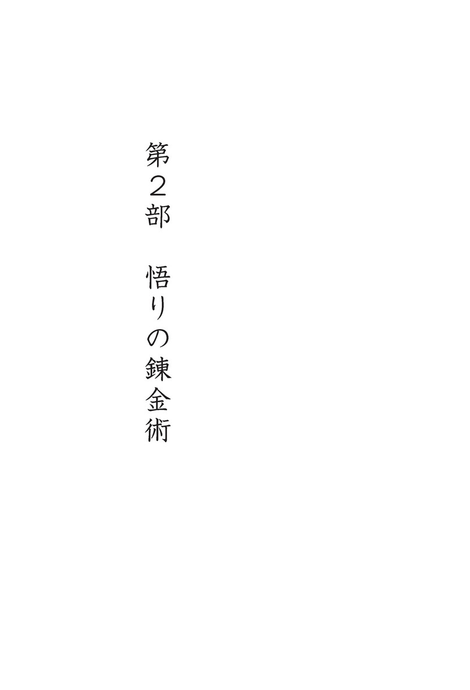

| 悟りの錬金術: 私を通して至る自由(覚醒ブックス) | |
| ゲート | |
| nachurarusupiritto (2016) | |
ほんとうの賢明さと知恵で
自分を見てみよう。
―――ゲート
悟りの錬金術 もくじ
悟りの錬金術 私を通して至る自由
「師匠」の訳語選びについて
韓国語では「ススン」と発音しますが、小・中学校の教師から人類の先覚者まで称することができる、とても幅広い意味を持つ言葉です。訳語として「先生」「師匠」「師」などが候補にあがりましたが、どれも「ススン」ほどの幅広さがないのが悩みどころでした。
「師匠」は、学問・武芸・稽古事の先生から芸人の敬称まで幅広く使われる単語です。気軽に、そして親密に使えるところが「ススン」に通じるものがあり、語感も近く、唯一、技術や武芸など外面的なことに意味が限定されがちなところが難点ですが、「マスター・ゲートは、誰でも練習すれば悟れる方法を教える先生」と受け入れてもらえたらと思い、この訳語に決めました。（訳者 記）
私の考えは
私の心から生まれます。
私の心から生まれたものは
私の心から消えてもいきます。
私の心は
私の選択次第です。
私の心は
私の自由です。
私は私の心の
主人です。
ですから
私は「自由」なのです。
１ 私の中の「私」
新しい始まり──ポジティブで積極的な生を生きよう
すべての変化は、最も些細なことから始まります。最も簡単で些細なことに真理があります。ストレスや混乱、もどかしさなどを感じたら、それらをすべて受け入れてください。貴重な素材として使わないといけません。もどかしさすらもエネルギーであり、跳躍を起こす踏み台なのです。もどかしいからといって気晴らしのために師匠を探したり、本を読んだりせずに、自らそれを貴重な鍵として考えてください。
もどかしければ、そのもどかしさを見つめてください。私たちはもどかしさを感じるときもあれば不安を感じるときもあります。しかしみなさんをもどかしくする原因、不安にするその原因は、偽物です。自分がなぜ不安を感じなければならず、もどかしさを感じなければならないかを考えてみてください。そうすれば、感情の主人になれます。最初は難しいかもしれませんが、そういう感情が込みあげてきたら、絶好のチャンスだと思ってください。自らつくったものになぜ苛まれないといけないのでしょうか？ それに気づけば変化が起こります。できないことのようですが、できるのです！
やってみるととてつもない力が湧いてきます。すべての障害は、跳躍のための踏み台であり、扉です。みなさんはその方向さえ変えればいいのです。不安や混乱、もどかしさというものは、それが負の方向に流れただけで、エネルギーであることは同じです。そういうものが来たら「私はなんでこうなのだろう？」と自分のことをいじめないで、それをあるがまま眺めてください。すると、そこからとてつもない力と安静と平和を得ることができます。
そうしているうちに、自分の現状がはっきり見えてきます。そのときの喜びは、言葉では言い表せないものです。これからは、そういった障害を素材にして跳躍してみてください。外に逃げ出さずに、自らつくり出した限界から抜け出してみるのです。
理性的な人は自分を眺めることができる人ですが、知恵のある人は自分を正しく見ることができる人です。自分を正しく見るとは、自分の心の居場所を見ることを言います。ストレスも、つまるところ自分の心の現住所を知らないことから起こるのです。みなさんは今、自分の心をどこに置いていますか？
おのおのが自分の現状を確認する必要があります。人は自分が変わるより、他人や世の中が自分に合わせて変わってくれることを望みます。しかしこれは、柿の木から自分の口に柿が落ちてくることを口を開けて待っているような、怠けた心です。私が山を呼んだのに山が訪ねてこないと御託を並べているだけの、愚かな心です。そんな心では、自分の欲求が満たされないことを悔しく思い、その原因を自分の置かれた環境と世の中のせいにするだけです。それが高じると、運命だのカルマだのとしょうもないことを言い出したりします。まだまだ私には時が満ちていない、私はあまり運に恵まれていないなどと言って運命を恨んだりします。
山の訪れを待たないで、自分が山をめざして旅立つこと、素敵な経験が訪れることを待たないで、自分がその経験をめざして旅立つことです。柿の木から柿が落ちるのを待たないで、自分が木に登って柿をとって食べるくらいのポジティブで、積極的な心構えを持ってください。
巣の中に餌を待つ小鳥がいます。その小鳥は、今すぐ飛ぶことはできないとしても、自分が空高く飛べる羽を持った鳥であることを忘れたりはしません。人生は、誰かのために、あるいは、ある目的のために存在するわけではありません。みなさん自身が自分の人生の主人として、それを享受できる能力と力を持つべきです。これからはただじっと待っていないで、自分がそこに向かって進んでいく心で生きてみてください。みなさんには、これが最も重要な生の哲学になるべきなのです。
「考え」からの自由
人は、道が簡単すぎると道を間違ったのではないかと心配します。いつも難しいことばかりに慣れているので、簡単すぎるとこれは何か間違っていると思うのです。しかし、悟りの道が細く険しい道だというのも人の考えにすぎません。苦労に苦労を重ねて、ある禅師が悟りを開いたのちには、「だまされていたのだ」と言います。ですから彼らは、仏とはどういうものかと聞かれると、糞の棒だと答えたりもしました。自分の概念にどれだけあざむかれたらそんなふうに答えることができるでしょう？ 挙げ句の果てには殺仏殺祖とも言いました。それは、文字どおりに仏陀と祖師を殺せという意味ではなく、仏陀と祖師に対する自分の観念を殺せという意味です。
車に乗っていると、交通渋滞に巻き込まれてほとんど進まないことがあります。人間も考えに一度巻き込まれると、大変苦しくなります。そのようなときには、向きを変えて渋滞から抜け出すか、状況を受け入れて心を楽にしたほうがいいです。自分自身と戦ったら抵抗が生じます。考えること自体が抵抗になるのです。これはとても悪いことです。でも、楽になると考えが起こりません。ですから、楽になったときに頭が空になったなどと言うのです。逆に考えが多いとそれだけ苦しくなります。それ自体が、自分自身を交通渋滞に追い込むことになるからです。そうなると、状況はどんどん混乱に陥っていくだけです。それをバッサリと切って抜け出さないといけません。
一番健康な体の状態は血液循環が良いときです。あらゆる病気は血液循環が良くないことより始まります。血というのはすべての神経と経絡に気を運ぶ媒体の一つですが、その血が交通渋滞にかかると、当然問題が生じます。血は思念の影響を一番受けやすいのです。私たちの体、特に脳は水でいっぱいです。怒るとただちにぐつぐつと煮え立ちます。煮え立つと血液の中の酸素がなくなります。ストレスを受けすぎるとそれだけ血管が膨張して、挙げ句の果てには血管壁が破裂します。血管が破壊すると、血液の中の血小板が繊維素などを集めてかさぶたのようなものを作ります。これを血栓と呼びます。この血栓が血管の中を流れながらどこかに引っかかると、そこで血液循環が妨げられて、そこから腐り出します。こうして血液が凝固すると甲状腺に影響を与えたり、動脈硬化を起こしたり、いろいろな病気が起きることになります。
何でも閉じ込めておくと病気になります。肉体が独房に閉じ込められているとしましょう。肉体も閉じ込めておくとストレスでトラブルが起こるのに、それより遥かに自由な心を閉じ込めておいて病気にならないわけがありません。心も閉じ込めると病気になります。誰が心を閉じ込めたのでしょう？ それは自分自身です。考えに、観念に縛られて、その心から抜け出せないのは、自分自身がそこに閉じ込められているということです。自ら抜け出せないように縛りつけているのです。肉体がずっと縛りつけられたままでいると、どれほどストレスを受けることでしょう？ それなのに、肉体より遥かに自由な心を縛りつけていたなら、その心がどれほど傷つくかは言うまでもないことでしょう。
心に自由、考えに自由を与えるようにしてください。分別をなくせというわけでも、判断するなというわけでもありません。そこに閉じ込められるな、ということです。考えは考えにすぎません。それをつかむ必要もそれに溺れる必要もありません。自然に散らばって消え失せるように放っておくべきです。それをつかんで生き返らせているのは自分自身なのです。
考えというのは、一日のうちに数え切れないほど頻繁に起きたり変わったりします。みなさんは一つの考えの所有者ではなく、数千億の考えの所有者です。一つの考えに閉じ込められるというのは、自分自身を塵のような微小な存在にすることです。
これからは全体的で豊かに生きていかないといけません。自分のあるがままの姿を正しく見る、それが全体です。一つの考えだけでなく、すべての考えをすべて許容して、すべての可能性を受容する、それが全体的な人間であり、宇宙的な存在です。宇宙的な考えも偏屈な考えもみんな許容してください。みなさんは創造された存在ではなく、何でもつくり出せる創造性そのものなのです。自分の一つの考えにこだわらないで、全体的な意識を持って、その可能性のすべてを開いて生きていくべきです。怒りも混乱も、もどかしさも理解も、全部結構です。すべてを許容すれば済むことなのに、どうして数千億分の一に悩まないといけないのでしょうか？ 数千億円を持っていながら数十円に悩んでどうしますか？ みなさんはもう、自分が全体的な人であり、宇宙的な存在であるということを認識してみてください。
あなたが今、墜落する飛行機の中にいるとしたら......
真理は、自分が持っている確実性の中にすべてを入れてわかるものではなく、不確実性の中に入ってこそ、わかるものです。自分の持っている確実性というもの、それは実にちっぽけなものです。しかも一瞬で消え失せてしまいます。それなのに、それが確実だと言えるでしょうか？ ですから果敢に確実性を捨てて、自分が不確実だと思うところの中に、一度入ってみてください。熱意と切実さで勇気を出さないかぎり、みなさんは自分の考えの中だけを延々と回り続けることになります。
何かを捨てようと思ったら果敢に捨ててください。みなさんが誰かを捨てたとしても、その人を本当に捨てられますか？ 違います。みなさんの考え、みなさんの思い、対象に対する執着を捨てることになるだけです。
愛する人に代わって息を吸ってあげられますか？ 代わりに痛んであげられますか？ 代わりに死ぬことができますか？ できません。それなのに愛する人をつかまえて、そんなふうに何かをつかまえて生きようとしますか？ 人生の師匠と先生を探しあてて、彼らに何かを求める必要はありません。自分が自分自身を正しく見れば、そこからすべての洞察が得られます。
釈尊は何を見たのでしょう？ あるがままの「生老病死」を見ました。生まれを洞察して、老いを洞察して、病いを洞察して、死ぬことを洞察して見たのです。簡単すぎますか？ しかし、この簡単なことから洞察が始まって、現れているすべての現象に対する解答を見つけたのです。みなさんは生まれたのに生まれたことのない人のようで、老いながらも老いを徹底して無視していて、病気になっても治ったら病気のことなどすぐに忘れて、他人の死は平気で見ているのに自分にだけは死が訪れないと思っています。
私はみなさんに火葬場に一度行ってみることをお勧めします。私が行ってみた一昔前の火葬場にもそれなりの手続きがありました。棺が入ってくると、棺が焼かれて、衣が焼かれて、死体が炎の中で焼かれている姿を見ることができました。さっきまでは何ともなかった人が、一握りの灰になって出てきます。みなさんはこれについて洞察してみたことがありますか？ 肉体と火葬場の灰、その違いは何でしょうか？
実は火葬場まで行ってみるまでもないことです。そばで寝ている人を見てください。その姿はまるで死んでいるかのようです。人の寝ている姿を見るだけでも、とても素晴らしい瞑想になります。瞑想というと、特別な姿勢と形式があるものだと思いがちですが、実は洞察を得るのが瞑想です。自分と人生に対する洞察！ 洞察すれば自然に瞑想になります。今すぐ目の前のことから深く考えて、洞察を得ることです。
少々刺激的な方法ですが、「墜落する飛行機」の瞑想をしてみましょう。みなさんは今、墜落する飛行機の中にいます。生まれる瞬間、墜落するのです。次の瞬間、または明日か、いつ地面に落ちるかわかりません。明後日墜落する人もいれば、数年かかる人もいます。この墜落する飛行機の中がみなさんの現住所です。そうでしょう？ 何か違いますか？ 時間の差があるだけで、その状況は一緒でしょう？ みなさんは、これからこのような心を持って自分自身を眺めるべきなのです。
息を吸い込むときに生まれて、吐き出すときに死ぬのです。人は生まれたとき、初めて息を吸い込んで、死の瞬間、最後に息を吐き出します。この観点から見ると、すべての瞬間は生と死が連なっているものだといえます。それなのにみなさんは、何がそんなに深刻なのかわかりません。何がそんなにストレスで、何がそんなに大変で、なんと事情の多いことでしょう。みなさんは、何でも全部ストレスになります。悟りでさえストレスになるだけです。自分をいじめたがってしかたがないのです。
この世で一番愚かな人は未来を心配する人です。みなさん、未来のことが心配ですか？ 未来を心配すると、その瞬間、その心配する心が未来をつくり出します。みなさん、本物の知恵で自分自身を見つめてください。
君に......
相手に向かう怒りを力で押し込めというのではない。
ただ君の怒りに君が飲み込まれないことを望むだけ。
相手が嫌いなのに好きになるように努力しろというのではない。
嫌っている君自身までも嫌う必要がないということ。
気に入らない相手を無理して理解しろというのではない。
相手が理解できない君自身だけは理解してごらん。
何でも君は知っておくべきだというのではない。
知らないということが
君自身を不自由にするわけではないことがわかればいい。
真理とは君を閉じ込める垣根ではなく、
君を自由へと吹き飛ばす風なのだ。
２ 人生の中で味わう自由
自由は主権回復から
腕の良い弁護士は、被疑者のために一所懸命状況を提示して、あらゆる根拠をかき集めて、被疑者の無罪を立証します。ところが被疑者は、そんな弁護士の努力を見て、自分はもとから罪がなかったと思うようになります。無罪判決が下ると、自分にはもともと罪がなかったから当然無罪になったのだと確信して、弁護士費用を払いたがらないという話を聞いたことがあります。
自分に対する悟りも同じです。私はみなさんがもとから無罪だったことを証明する弁護士です。しかし立証してみると「そうだ。私はもとから無罪だったのだ」と言って、みなさんはありがたくも思いません。無罪判決を得たことの価値がわからないうえに、自由を満喫することもできません。
みなさんは罪人ではなく無罪の人です。これは偉い人という意味ではなくて、自分が罪の意識を持った衆生であるという考えから、無罪判決を受けたことを意味します。しかし、無罪判決が下るまではいつも嫌疑がありました。その嫌疑は他の誰かがかけたのではなく、自らが自分自身にかけたのです。わかってみたら、もとから罪などありませんでした。師匠はただみなさんの無罪を立証してあげただけです。
今も悟りのためには、独特で神秘に満ちた何かがないとだめだと思い、何らかの修行をしないといけないと思う人がほとんどですが、とんでもありません。みなさんからかけ離れた神秘や修練や悟りは存在しません。すべての主体はまさに自分自身の心です。みなさんはまだ自分自身を治めるのに慣れていないので、いつも不安で、自分を弱くて矮小な存在だと思っています。誰がそうしたのでしょう？ みなさん自身がそんなふうにしました。ある人は「それでも私はみっともないです」と思っていますが、そう設定するのもやはり自分自身です。
人は否定的なものはたやすく受け入れます。人は健康だとは言いません。「特に病気はない」という言い方をします。いつも病気を基準にするのは一体なぜでしょう？ 「別に問題はない、不幸じゃない」と言います。いつも病気と問題と不幸が基準になっています。なぜこんなものが主体にならないといけないのでしょう？
自分のことをみっともないと言うから主権を奪われます。本当にみっともないものたちがみなさんのことを無視しておろそかに扱うと、それがそのまま肉体に伝わります。すると肉体はみなさんのコントロールから放れることになります。バランスを保てなくなって勝手に突然変異細胞を作り、ガンに発展するなど、病気が主人の座を奪うことになります。重病にかかった人たちの肉体の主人は、自分自身ではありません。病気にすでに主権をとられてしまって、その病気と考えたちが、その人の主人になったのです。主権を持つとは何なのでしょう？ 考えの主人になることです。みなさんが主権を放棄して、おろそかにして、感情に流される奴隷に成り下がったので病気になります。病気、ストレス、混乱と怒りは、結局、みなさんがつくったのです。
みなさん、成長しないといけません。すべての主人だということをどんどん意識してください。考えや感情に振り回されていると、それらがつくり出したエネルギーに主権を奪われてしまいます。怒り、怨み、ねたみ、不満などといった臣下たちに振り回されていると、王権を持っているとしても打つ手がありません。王権を強化する道は何でしょう？ 徹底した信念と確信で臣下たちを屈服させることです。臣下たちなどに揺さぶられていたら、それは臣下による政治であって、決して王の政治ではありません。
心の修行の真髄は大人になることです。大人になること、それこそがまさに悟りです。大人になるとは意識の主人になることで、意識の主人になったら、物事を他人のせいにする必要がありません。
あなたに起こるすべてのことには、肯定的な理由があります。そのような心で受け止めてください。心が開いているときにはすべてを肯定的に受け入れています。楽しいのに否定的な考えが起こるでしょうか？ 心が開いているとき、成熟する可能性が一番高いのです。深刻なのは固く閉ざされた心です。開かれた心になってこそ、初めて成熟することが可能になります。心を開いたり閉じたりすることがポイントなのではなく、心の主人であるみなさんが、心を開いたり閉じたりするのだとわかることが肝心です。私が心を開いてくださいと言うと、みなさんは開いていることだけにこだわるかもしれません。開いたり閉じたりするのは他でもないみなさんです。心が開くときもあれば閉じるときもあるでしょう？
怒りも慈悲も愛も、時と場合によって使いこなせないといけません。果てしなく慈悲深くて愛に満ちて寛大になろうと言っているのではありません。主人の座を失ってはだめです。あなたが激怒したりストレスを受けたりするとき、一番の犠牲者は自分自身です。怒りの害悪はとても言い切れません。ヘモグロビンが数え切れないほど死んで、体の浸透圧は乱れて、チャクラは全部閉じられることになります。怒りが起こるのはプライドのせいで、プライドは劣等感から起きます。劣等感は他人との比較から生じます。なぜ比較するのでしょう？ 自分自身を知らないからです。なぜ自分自身を知らないのでしょう？ 考えの中に溺れていて、自由でいられないからです。最も真なるものは自由です。それが自分自身の本質であり実体なのです。
人生という黒板、死という黒板消し
みなさんは、今まで数え切れないほどの人生を生きているうちに、生き方のパターンが固着し、観念が固定されてしまいました。地球で輪廻転生するたびに、虚しい人生を堂々巡りするだけで、時が満ちると儚く死に向かい合うばかりでした。このような輪廻が絶えることなく繰り返された理由は、自分自身に対してあまりにも怠慢だったからです。みなさんは今まで、切実な心を基として行動しませんでしたし、能動的な経験による真実の理解を得ようともしませんでした。いつも何かに依存して、どこかに帰属することを自ら望んできました。そうした考えたちの奴隷になり、自分の自主性と意志を省みることがありませんでした。
理解が欠けている考えは、ただ考えそのものを変化させることしかできません。もしも誰かに真なる理解が与えられたなら、その人には必ず変化が訪れます。理解するとはすなわち変化を意味するからです。みなさんがいまだに変わることができないのは、みなさんが明確に理解できなかったことを意味しています。
理解と考えの違いは何でしょうか？ それははっきりしたものとぼやけたものの違いです。それは明確なものと不明確なものの違いであり、真実と偽りの違いです。実像と虚像の違いなのです。
みなさんは、今まで輪廻を重ねてきた数え切れない生のうち、どれか一つの一場面ですら、ろくに思い出すことができません。それはみなさんが生きてきた数え切れない浮雲のような生が、ぼやけて不明確であったし、偽りで虚像だったためです。
虚像とは、存在を否定して実在を無視することではありません。みなさんが明確ではなく不確かだったので、みなさんの存在が歪曲され、真実が歪曲され、生が歪曲されてきました。その歪曲されたものを、今、虚像と称しています。そういった過去の記憶を、当の本人が無価値に感じたから、無視して、忘れてしまったのです。その当時はわからなかったけれど、いざ過ぎてみたら虚しかったのだと、他の誰よりも自分自身が骨身にしみて感じてきました。
そうです。死がすぐそこに迫ったときでは、もう遅いのです。死は徐々に忍び寄ってきて、すべてを一瞬にして奪い去り、考えさえも覆ってしまいます。黒板の上に描いた「私」という絵は、死という黒板消しが消し去ってしまいます。このような現象がカルマの法則です。途中からやり直すことは許されません。いつも初めからまたやり直さなければならず、また一から描き直さないといけないのです。
人は生きている間に、黒板の上に自分をはじめとしたありとあらゆる形態を無数に描きあげます。他人との関係を描いたり、さまざまな因縁を描いたり、喜怒哀楽と生老病死を描きます。人それぞれに切ないストーリーを描きます。しかし、人々の描いたこうした絵は、惜しいことに、死という黒板消しで一気に消されてしまいます。いくらあがいても絵は残りません。死という名の黒板消しで自分の絵がすべて消し去られるようにと、すでに自分で設定しておいたのですから。
しかし人は、いつそんなことがあったのかとばかりに、再び黒板の絵の中に舞い戻ります。ときには前に描いた絵と似たようなものを、またあるときには違う形の絵を描き出します。自分が黒板の上に絵を描いている画家だということを忘れたまま、自分が描いた絵の中の人物を自分だと勘違いして、もう一編の作品を作り出します。そしてその絵は、自分の望んでいたものであれ望まなかったものであれ、結局、死という黒板消しで再びきれいさっぱり消されてしまうのです。
仏教では「万法帰一」という言葉があります。あらゆる法は一に帰るという意味です。万法は考えから生まれたものであり、結局「一」という考えに帰着します。みなさん、この言葉の意味をよく噛みしめてください。
「私」とは誰なのだろう？
真実を見ようと言うと、人々は格闘を始めます。なぜそこまで好戦的なのでしょう？ 何につけても戦うことが習慣になっているからです。病気を扱うときも、病気のことを放っておけば済むものを、病気と格闘します。すべてが格闘です。自分との格闘、愛する人との格闘、友達との格闘、何でも格闘のネタになります。
空っぽの船は争いません。しかし、そこに人が乗ると戦いが始まります。なぜなら、人々には所有という概念があるためです。私たちは自分自身のことすら所有できないのに、なぜそこまで何かを所有したがるのでしょう？
すべてのストレスが所有格から生まれます。所有格をなくすと悲しみますし、所有格に心が痛みます。まさに今この瞬間、死ぬかもしれないというのに。私たちの命は何に依存しているでしょう？ それは呼吸です。一息を吸えなくても死にますし、吐けなくても死ぬのに、なぜそんなに深刻に生きるのでしょうか？
深刻に思わないこと、部分的に生きないこと、一つにこだわって生きないこと、これらは私がいつも言っていることです。何か一つに偏らないで、そのまま全体の意識に入ってみるべきです。私たちはこんな考えもあんな考えも可能な存在、数千、数万、数億の考えをすることができる全体的な存在です。そのうちの一つを指定して「この考えが私だ。これは私の考えだ」と、それにこだわることほど愚かなことはありません。考えが変わって変わって、なお、さらに変わるように、今の自我というのも今の肉体とともに変わって変わって、なお、さらに変わるものです。
あなたは今、固定されている存在ではなく、現象的な存在です。ですから何か刺激が加わると砕け散ってしまいます。現象は砕けるものです。本質が砕けることがあるでしょうか？ 現象だから砕けるのです。だとしたらその現象を誰がつくりますか？ あなたが、その現象をつくって繰り広げた主体です。この一生の間、あなたが「私はこういう人間だ」という自我の現象を繰り広げたのです。
それが何であれ、自分自身が生みの親です。時間も空間も物質も、それが何であれ、創造されなかったものはありません。今、考えをつくり出しているように、何でもつくり出しています。みなさんの肉体が消えても、みなさんはなお、何かをつくり出します。なぜなら自分がつくったものに愛着を持って執着するからです。つくる楽しさにとりつかれて次々とつくってみる、それが輪廻です。それは自分自身がつくるものです。
みなさんが死んだあとには肉体を抜け出すことになります。肉体は持っていけず、すべて消えてなくなります。しかしみなさんの意識は消えません。私たちが寝るときも、意識は寝るわけではありません。肉体が寝るときに意識も一緒に眠ると設定されているので、肉体が目をつぶると意識も目をつぶって眠ります。ところが、たまにその設定がゆるむときがあります。ある瞬間、目が覚めても、肉体がまだ寝ているのが見えるときがあります。意識が目覚めたのです。あなたが寝ている自分の肉体を見ているところを想像してみてください。あなたが寝ているときも、死んで肉体が消えてなくなるときも、それを見つめている意識があります。意識！ それが私です。魂でも所有格でもない、それこそがまさに私です。では肉体は何でしょう？ 私の殻です。
殻を脱げば、すべてがその殻から生じていたのだと、はっきりと認識することができます。殻を脱いだあとも、しばらくの間、習慣的に殻が使っていたものを使います。多くの人は殻を脱いだあとにも、食べないといけないという考えから何かを食べて、服を着ないといけないという考えから服を着て、恋愛しなくてはいけないという考えに溺れて恋愛をします。
でも、わかれば変わるようになっています。わからないから変わることができなかったのです。わかるためには洞察しないといけません。深く、胸の奥深くまで感じてみるべきです。そうでしょう？ 「おっ、これは本当は『私のもの』であって、『私』じゃなかったんだ」。「私のもの」という認識があるだけでも、このような生き方はしません。対象を私だと勘違いするから、このような生き方をするのです。私のものだと認識すれば、あなたはどんなふうに生きるでしょうか？ 捨ててしまうかもしれません。そう認識できたら、あなたがそれに対してストレスを受けることなどないはずです。
これがわかれば、みなさんは当然、大人らしくなるしかありません。そして、現在の個性という自我から容易に抜け出せます。この自我は、数千、数万個のうちの一つにすぎません。固定された一つの考え、固定された一つの自我にとりつかれないでください。みなさんがその一つの考えにこだわって抜け出せなかったように、現在の自我にとりつかれているから、昔の個性たちや違う自我について思い出せないのです。
みなさんは今まで数千、数万回のさまざまな形の「私」を所有してきました。こんな個性も所有したし、あんな個性も所有しました。前世を見ると、多い人は数万に及ぶ個性が見つかります。ですから今回の一生も三万のうちの一つ、あるいは二万のうちの一つの個性です。そしてみなさんはその二万個のうちの一つではなく、二万個を所有しているまさにその存在なのです。
知恵のある人は自分を見る人です。
知恵のない人は自分以外のものを見る人です。
知恵は自分の無知を見ることから生まれ、
無知は自分の有識を見ることから生まれます。
知恵は私の中で私を見つけたもので、
無知は私の中で私を忘れてしまったものです。
知恵のある人は自分を治めようとしますが、
知恵のない人は他人を治めようとします。
３ 生と死
生は「使い捨て」だって？
現在の「私」は、みなさんが自分で考えて選択した自分自身の化身にすぎません。今の「私」は、みなさんのものであって、みなさんではありません。みなさんの所有物が、みなさんになることができるでしょうか？ エゴはみなさんではなく、みなさんの所有格です。エゴのことで格闘する必要はありません。エゴはエゴと戦うものです。概念も、考えも、体も、心も、すべてみなさんが所有しているものです。私の妻、私の夫、私の恋人、私の子ども、すべて所有格でつながっています。悲しんだり、憎んだり、ねたんだりするのも、結局のところ所有格同士の争いです。「彼のことが好きだ。彼がいなくて悲しい」こういった言葉はみんな自分が持った所有格に対する話です。このように愛も憎悪もみんな所有格から生じる概念です。
あなたが死ぬと、あなたが持っていた肉体は消えてなくなります。かといって、あなたが消えてなくなるわけではありません。しかし、何かを所有していた習性から、また違う所有格をつくることになります。だから今まで数千、数万回、生まれ変わってきたわけです。
こうして見ると、みなさんはまるで健忘症の患者のようです。自分が前にも人生を生きていたことをまったく思い出せないなんて、これを健忘症の他に何と呼んだらいいでしょう？ これが一番深刻な健忘症です。アバターを数万回以上も選択しましたが、そのうちのただの一回も思い出せません。すぐ前の前世さえ思い出せないのです。前世でも七、八十年をホコリにまみれながら生きたはずなのに、なぜさっぱり忘れてしまったのでしょう？ その一生が無価値だったので、みなさんが使い捨てにしてしまったのです。一回使ったらもう捨てるだけ。今までそうやって生きてきたのに、今さら何がそんなに深刻なのですか？ みなさんは使い捨ての人生を生きながら、こだわることもいっぱいで、深刻なこともいっぱいで、ストレスもいっぱいです。
だからといってリサイクルもできません。どうせまた捨ててしまって忘れるくらいなら、使い捨てらしく生き、実在的に省察してみましょう。真理と生のことを論ずる前に、まず実在として生きるべきではないでしょうか？
ここに二つの道があります。一つは使い捨てということを意識して、物事にこだわらないで楽に生きる道。もう一つはもう使い捨ての世界から抜け出す道です。みなさんが繰り返して使い捨てを選択してきた理由は何でしょう？ 肉体の生を通じて、何かを学んで経験するためです。それがわかったら、もうこれ以上ぐずぐずしている必要はありません。こんな使い捨ての世界なんかにとりつかれたまま生きてはいけません。
するとある人は、「そうしたら何がありますか？ 何がもっと良いのですか？」「じゃあ、何かもっと価値のあることがありますか？」という質問を投げかけてきます。まさにそういう考えの次元を卒業する世界、そのような考えが消えたところから再び始まる世界があります。
みなさんが今まで持っていた既存の概念や観点と、私が話したことと、どちらがより実在的なのか比較分析してみましょう。これが人間らしい修行です。経典に何が書いてあるだの、誰の教えがどうだの、そんなことを言っているようではレベルが低いのです。目の前にある実在的な生について、いつも実在的な考え方を持つことが肝心です。経典の内容、哲学的な知識、概念などが、なぜ必要ですか？ みなさんが病気になったらそんな概念、観念、知識など、鎮痛剤一粒にも及びません。頭痛が起こると、そんなことなど隅に追いやって鎮痛剤を求めます。人の持っている概念と観点は、アスピリン一粒よりも実在的ではありません。それなのに、何かすごいものを持っていると勘違いします。まともな考え方を持つことが実在的なことです。真理というのは、どこか遠いところに存在するものではありません。
そして自分自身を大切に思ってください。自分を無価値だと思っていると、一生一生が使い捨ての絆創膏ぐらいの意味しか持たなくなります。化身を酷使しないで、どんどん繕って、成熟させて、成長させて、その楽しさを経験しながら生きてみてください。そうやって自分を成長に導いてみましょう。それが真の生です。
盲人と象の逸話
死に関して聞かれて、確実に答えられることは、死んでみないとわからないということです。死後の世界は、生きているこちら側の言語ではうまく説明することができません。みなさんに昨日見た夢を今説明してくださいと頼んだら、どんなふうに説明するでしょうか？
眠って夢を見ているときは、それがあたかも現実のように感じられますが、夢から覚めたあと、それを話そうとすると、とても抽象的に感じられます。そうでしょう？ そしてそれが遥か遠くのことに見えて、何の価値もないと考えたりしますが、死もこれと一緒です。肉体から離れ、魂の意識になったときには、肉体で感じていたあの感覚はまるで夢を見ていたかのようです。
夢を見ていると、悲しいこともあれば怖いこともあります。夢を見ているその瞬間は、生々しい体験として感じられますが、夢から覚めて胸を撫で下ろすと、それはすっと消えてしまうものです。いくら怖い悪夢にうなされても、夢から覚めたらもうおしまいのように、この世でどれだけ多くの切ないストーリーを残したとしても、肉体から離れると、笑ったり泣いたりしたすべてのことが、夢のように遠く感じられます。私たちは今まで数え切れないほどの夢を見てきましたが、それと同様に、肉体を持って生きたのも数千、数万回です。しかし、それらの生がまるごと一つの夢のように、夢の一場面のように記憶されるだけです。ですから今回の生も終わってみたら、一編の夢のように過ぎ去ってしまいます。
この生は一つの長い夢です。私たちは今、夢の延長線上にいるだけです。この現実は今日と明日がつながり続けた夢なのです。あなたがこの現実世界で見る夢も、昨日の夢、今日の夢、明日の夢をつなぎ続けられさえしたら、それは結局、この現実とまったく変わらないものになるでしょう。「人生は夢のごとし」とはよく言ったものです。
自覚だけが唯一、真実のものです。透徹した自覚、これは死んでも持っていけるものです。自覚ができないと結局、再び自分の世界に溺れることになります。
この世界は物質的な考えに溺れる世界で、死後の世界は感情的な考えに溺れる世界です。これもあれもすべて考えの世界です。つまり今は物質の夢を見て、死後の世界では感情の夢を見るだけのことです。信じられないかもしれません。物質を現象として感じ続けているのに、これがどうして夢なのかと思うことでしょう。だったら直接、臨界点に行ってみてください。すると今まで肉体だと思っていたものは、一つの物質的記号で、媒体で、データにすぎなかったことが体験できるはずです。今まで生きてきた数千、数万回の一生のうち数日だけをつぎ込んだとしても、みなさんはそれを確認することができます。今までそうやって数千日、数万日を生きてきて、三千回から数万回までも輪廻しておきながら、たった数日の投資さえ惜しみますか？ それは精神力の問題です。自分が一度知りたいと意を決すると知ることができます。それは能力の問題ではありません。まさに確信の問題なのです。
一千人、一万人の盲人たちが象をさわってみても何の役にも立ちません。その盲人たちすべての話をまとめても、一頭の象が作られるわけではありません。盲人たちがあちこちさわって表現したものを全部組み合わせて描いてみると、へんてこりんな形ができあがるだけです。結局、真実は体験することなのです。
ですから、死後の世界についていくら話してもまったく無駄です。ふだんキリスト教を信じていて天使の存在を信じていた人の目には必ず天使が現れ、仏教を信じていた人の目の前には帝釈天が現れ、死神が現れると信じていた人の目には大きな鎌を手にした死神が現れます。すなわち、その人が信じていた世界が繰り広げられるのです。ですから死後の世界の様相も千差万別です。現在、私たちが同じ地球上で生きていても、ココナッツを食べながら生きている人もいれば、さまざまな文明の恵みを享受する人もいるように、死後の世界も同様です。
死後の世界では肉体がないにもかかわらず、考えでそれをつくり出して感じます。魂というのは空気や虚空のようなものです。その世界の観点から見ると、彼らは具体化された世界に生きていると感じます。私たちの肉体がつかまえられないことから、私たちの世界のほうがかえって抽象的で漠然としたものだと感じます。私たちが霊を見るときは幻想のように見えますが、霊の立場からは私たちが幻想のように見えます。
だとすると、真実とは何でしょう？ 両方とも幻想です。両方とも相対的なものにすぎません。彼らを虚像として見るのは、みなさんが実像という観点を持っているからです。しかし、彼らの観点から見ると、こちらの現実世界が虚像に見えます。結局二つの世界は、相対的な観点から生まれる幻想だということです。見る観点によって違うと考えられるだけで、その幻想は永遠のものではないということです。ただ物質的現象として現れるか、霊的現象として現れるかの違いにすぎません。
では本当に必要なのは何でしょう？ 夢から覚めるためには自分自身の努力が必要です。肉体から離れても私たちの意識は永続します。何も怖くありません。そのような意識を永遠に持っているなんて、これより偉大なことが他にあるでしょうか？ みなさんの意識を昏睡状態に陥れることができるものは、何もありません。ですから自覚が大切です。
この世界にいる間に、今すぐ、両方の世界のすべてを知るべきです。この世界のことも見破って、あの世界のことも見破って、これ以上現象に惑わされない自覚を得ないといけません。現象の主人になるのです。
今回の生の意味
実際のところ、死後の世界では、自分の性向どおりに生きることになります。そこは自分なりにストレスが解消できる世界です。それを美しく解消する人もいれば、苦痛の中でもがき苦しみながら解消する人もいて、多種多様です。
地獄の姿はどうでしょう？ 地獄は人々の暗い部分が映されただけに、いつも暗いです。他の視覚で見るとそこにも光が明るく照らされていますが、その世界に周波数を合わせるといつも暗く見えます。客観的な視覚で見ると、その暗さは人々の暗い想念です。想念が雲の層を作って光をすべて遮断しています。実際に闇が存在するのではなく、その暗い想念が集団想念になって、その世界を完全に闇で包んでいます。闇も光を拒否する人々の自由意志によって創造されたものです。ですから、そこも彼らにとっては彼らなりの天国だといえるでしょう。これらのことを考慮すると、死後の世界に行くとは、それなりに自分に合う天国へ行くことで、ある相対的な観点から良し悪しを論ずることはできません。そこで人々は自分の性向に従い、似たもの同士が集まってストレスを思う存分発散するわけです。
死後の世界で数百年、数千年をそうしていると倦怠が起こります。そのとき、再び現実の世界を経験してみたいと思うようになりますが、実際のところ、それは大変な決心です。死後の世界ではカルマが存在しないのでストレスが解消されていますが、現実の世界ではカルマがあります。現実の世界では過去の数え切れない生のカルマが一度に押し寄せてきます。自分でも知らないうちに、このカルマに振り回されたり、あのカルマに振り回されたりするわけです。自分が生きてきた慣性があるように、カルマも習性から来るものですから、それに打ち勝つことはとても大変です。ですから、再び生まれるということは並大抵の覚悟では難しいのです。たとえてみるなら、除隊した男たちが、軍に再入隊して激戦地に立ち向かうことより数倍は大変なことだといえます。
死後の観点から見ると、肉体を持って生まれることは、とてつもなく大変なことです。ですからみんなものすごい覚悟を持って生まれるのです。「今回の生では必ず何かを成し遂げる」という考えを持って生まれ、いざ生まれてみたら、激しい生の流れに飲み込まれて生き、死んだあとになってようやく生まれる前の記憶が蘇ります。そのとき初めて自分が生きてきた理由に気づき、また一生を無駄にしてしまったという後悔が押し寄せてきます。
そこからは前の生のストレスを解消します。やり切れなかった恋や富を求めて、しばらくの間ストレス解消につとめます。そうしているうちにまた新しいことが経験したくなり、ものすごい覚悟で「今度こそ悟りを開こう。今度はあんなふうには生きまい」と思いながら再び生まれてくるのです。
そこまで覚悟して生まれたのに、みなさんはまたもや優柔不断に生きています。一部の人々は「では、なぜそんなに優柔不断に生きているのだろう」と疑問に思ったりもします。しかし「なぜ」というのは、疑問を持つ人の立場でだけ成り立つものです。たとえば、「このラジカセは、どうして電源が入るのですか？」というのと同様な質問なのです。
みなさんは多くの質問をします。でも、どんな質問をしようと、私に答えてあげられる正確な答えはこれです。「あなたはなぜそんな考えを持たないといけないのですか？」なぜそのような疑問を持たないといけないのか、深く考えてください。こういうやり方は理解できないし、変だと思いますか？ では、なぜ変だと思うのか、それについて疑問を持ってみてください。
質問をする前に、疑問を持つ自分自身を見るべきです。そうしてこそ、その疑問を完璧に解消することができます。もちろん私には、みなさんが思っている観点と水準に合わせて、おしゃれでわかりやすい答えを与えることもできます。しかしそれは本当の答えではありません。みなさんの質問は、三十センチの定規で家屋全体のサイズを測ろうとするのと同じです。ですから私が答えてあげられる真実の答えは、「あなたはなぜそのような考えを持つのか、自分自身を見てください」です。自分が持つ疑問の虚構性を、自ら見破るのが一番正しい方法です。
みなさん、精神科病棟にいる人々のことを思ってみてください。その人たちの疑問を聞いてみてください。彼らには切実なことですが、私たちから見ると話にならない疑問が大半です。「この模様はなぜこうなのだろう？」「君はなぜこっちを見てからあっちを見るの？」「君はなぜ私と同じ考えを持たないの？」「君はなぜ私のように息をしないの？私は吸い込んでいるのに君は吐き出しているじゃない」私にはみなさんの疑問が、まるでこの患者さんたちの疑問のように聞こえます。みなさん、自分の手にしている三十センチの定規について疑問を持ってください。
私たちは存在するがゆえに
存在する以前も私たちだったことを知り、
存在するようにしたのも私たちだったことを知っています。
私たちは永遠であるがゆえに
過去以前にも存在して、
未来の以後にも存在するでしょう。
私たちは無限であるがゆえに
限界を許容することができて、
境界を受容することができます。
私たちは偉大であるがゆえに
塵を理解することができて、
宇宙を抱擁することができます。
そして
私たちは自由であるがゆえに
今これらすべてを享受しています。
４ 輪廻と前世
肉体の生が存在する理由
前世の数がとても多い人がいます。転生しすぎて、ほとんど三万回に達した人もいます。ところで前世といえば、肉体的観点から理解を試みるものです。しかし肉体から離れたらすべての前世がごちゃまぜになるので、三万個の記憶の中で一つを探すのは無意味です。過ぎ去ったビデオの一場面を探すようにざっと見てみると、印象深かったこと、たとえば戦場で他人を殺したり殺されたりする場面などが目立つだけです。そのうちこちらの世界に最も影響の強かったものだけをとりあげてみても、師匠に出会って真理を求める程度になるためには前世、前々世、またその前世の三回くらいは求道の流れに乗り続けて慣性がつかないとだめです。
「三世の縁がないと私に会えない」と言ったのは、三回、その師匠に会っていないといけないという意味ではなくて、その流れに乗り続けようと努力すべきだという意味です。何をしたか、どんな職業だったかは重要ではなくて、その人の意識が真理と大宇宙の神秘に向かって開かれていて、受容的な姿勢をとることができてこそ、初めて真の師匠に出会うことができるという意味です。これはブラックホールと同じで、ここに入ってくるとみなさんのスケジュールはすべて消え去ってしまいます。
みなさんは、多い人ならすでに三万個の個性を持っていました。今のこの個性だけを私だと思わないで、どんどん衣替えをしてみてください。考えも同じです。結局、土壇場で考えを一つ変えれば済むことなのに、それができなくてさらなる輪廻を繰り返すことになります。先生と学生と教材の三拍子がそろわないとだめです。みなさんは結局のところ、自分の中の先生に会うことができなくて、それを教えてくれる外の先生にも会えなかったのです。
人が真の人生を生きていると思いますか？ それは人生ではなく、水の泡のようなものです。大きい泡、小さい泡、派手な泡をいくら作り出しても、針一本ですべてはじけてしまいます。本当に生きるとは、こういう話を聞いて、こういうことを悟ることです。自分を見つめることができて、認識することができて、自覚することができないといけません。七十億の人類は、自分だと自らが設定した一つの感情にしがみついて生きています。彼らは自我という牢屋に閉じ込められて生きている人々です。今、あなたはかけがえのない絶好のチャンスを得ました。果てしなく繰り返されてきた囚人生活に終止符を打つチャンスが訪れたのです。
悟りを開いた人は転生しません。肉体から離れると、自覚が起きて、過去の肉体的な生の経験が意味を成さなくなります。なぜなら、自分自身が考えの主人だということがわかっているためです。ここでわかるというのは、それ自体がすでにそこから抜け出しているということです。肉体があったときは、自分の持つ考えの習慣から作用を起こし続けますが、死んだあとにはその作用圏から離れて、ただ自覚だけが残ることになります。そこからは再び肉体というパターンを使うことはなくなります。
今、あなたが肉体的な生を生きながら存在する理由は、存在に対する自覚とその悟りのためです。この世で最も価値のあることは、悟りを開くことです。あなたは、この世で一番価値のあることを成し遂げるためにここにいるわけです。
悟りとは何でしょうか？ 物質界の実像を正しく見ることです。自覚がないと、肉体がないにもかかわらず、肉体が使っていたその習慣を持ち続けながら生きることになります。それが実在でしょうか？ その次にはそのパターンを変えるために、また肉体を使います。するとまた、その肉体から得られる経験をそこに加えて、いろいろなストレスをため込んでいきます。この世で一所懸命ストレスをつくって、あの世で解消して、全部解消したらまた違うストレスをつくりに来て、たまったらまたあの世で解消して、そんなことを延々と繰り返しています。結局のところ、死後の世界というのは肉体的なストレスが解消される世界にすぎません。
これ以上ストレスの経験はいらないということがわかった人が、悟った人です。それは自分の知っているある形の人間に成り変わるのではなくて、ただ自分という殻から自由になることです。みなさんが変わって変貌するのではなく、自分のその状態から自由になるということです。この肉体はみなさんのもので、みなさんではありません。それなのに、みなさんのものがした経験をみなさんがそのまま繰り返しているなんて、おかしくありませんか？ あなたはなぜ存在するのでしょう？ それはあなたのものを通して経験を得るためです。生を享受するためです。ただ、あなたが肉体というあなたの所有格にとりつかれて、真実を認識できずにいるだけです。
愛を学ぶために存在する「カルマ」
今、遥かな他国で無残に死んでいったある若者の死を多くの人々が悲しんでいます（【故キム・ソンイルさん事件】編集部註 二〇〇四年、韓国人会社員金鮮一〈キム・ソンイル〉さんがイラクの武装派勢力によって拉致・殺害された事件）。死は新しい現象でもなく、ものめずらしい現象でもありません。今、私とみなさんが会っているこの瞬間にも、数え切れないほどの人々が死んでいます。しかし、一人の若者の死にこれほど多くの人々が悲しみを感じるのは、その若者の死に自分の立場を同一視したからです。すなわち、自分がその若者の立場になってみたわけです。その若者の挫折と悲哀を共に感じて、その苦痛と恐怖を共に感じたのです。
もしも「死」そのものに対して本当に悲しんだら、私たちは毎瞬、悲しむことになるでしょう。死はいつも起きていることではありませんか？ しかし、誰一人として毎瞬、他人の死を自分の死と同一視する人はありません。
ある女性が、目の中に入れても痛くないほど愛していた我が子を亡くして、泣き叫びながら釈尊のところを訪ね、涙ながらに哀願しました。「慈悲深い釈尊様、どうか我が子を生き返らせてください」彼女をじっと見つめていた釈尊はこう言います。「よかろう。私があなたの子を生き返らせてあげよう。ただし条件がある。この条件が必ず先に果たされた場合のみ、あなたの子を生き返らせることができる。今から一度も死が訪れたことのない家を見つけて、そこに住む女性の乳をもらってこい。そうしたら、私がその乳であなたの子を生き返らせてあげよう」女性は釈尊の話を聞くと狂ったように走り出しました。あちらこちら町中を回って一度も死が訪れなかった家を探し回りましたが、死を経験していない家はありませんでした。彼女は幾日も探し回って、疲れ果てた姿で釈尊のところに戻ってきました。そして弱々しく言いました。「釈尊様......、死が訪れたことのない家は一軒もありませんでした」彼女はむせび泣きました。ところが、彼女はむせび泣く最中に自ら悟ったものがありました。そして釈尊は、そんな彼女を黙って見つめながらほほ笑んでいました。
人々は、ある若者の死に悲しみすぎています。その悲しみの観点から抜け出せないでいます。悲しみに溺れているときは、どんな慰めの言葉も励ましの言葉も役に立ちません。そのとき、彼らは自我に溺れて自我の生を生きているからです。
カルマは均衡です。今日、自分に与えられた苦痛と悲劇は、過去の自分の行為によって形づくられた選択でした。今日、私が選んだ殺人の行動が、しばらくして自分の経験として返ってきます。それはまるでブーメランのようです。外に向かって投げられますが、くるっと向きを変えて、投げられた地点に戻ってくるブーメランのことです。カルマは整理です。一種の清算なのです。今日の加害者が明日の被害者になることでしょう。均衡によって果てしなく清算されて整理されていきます。しかし、その被害者は明日の加害者にはならないでしょう。因果の法則、すなわちカルマの法則は復讐のために存在するのではなく、愛を学ぶために存在するからです。
私が今回の生で得るべきものは
あなたをこんなふうに生まれこさせて存在させたのは、親ではなくあなた自身です。ですから、この世で本当に得るべきものは自分の中にすべて備わっています。真に勝つべき敵も内にあり、成就すべき目標も内にあって、決して外にあるわけではありません。もうこれ以上、この世に未練を持たないでください。かといって、現実逃避して無責任に生きろというのではありません。今回の生で得るべきものは何でしょう？ それさえもまた世の中から探し求めますか？ それは世の中から見つけられるものではありません。これからは自分の内で真実を探し求めるべきです。
みなさんは他人のことをうらやましがるような存在ではありません。あなたはすでに、数多くの生を通じて無意識的にすべてのことを享受してきました。今回の生で得るべきものは、富でも名誉でも権力でもありません。それは数千、数万の生を通じて、それこそウンザリするほど味わってきたものです。今回の肉体を通じての旅路では、もうこれ以上新しく求めるに値するものなどありません。それらすべてのことが自分の中で完璧に成し遂げられているという自分の中の真理、信念である「神の心」を見つけるべきなのです。それがまさに肉体の旅路としての最後の成就です。みなさんはそれを得ないといけません。
リンゴは万有引力によって落ちて、ロケットも重力から逃れようとする力がないと大気圏に落ちてしまうように、みなさんが自分の想念から抜け出せないかぎり、この世界から逃れることはできません。みなさんは、肉体を用いて得られるものはすべて得てきた人々です。ですからこれ以上、そんなふうに外部の世界にいじめられながら生きないでください。肉体を通じて自由を得るために肉体が必要だったのです。夢があってこそ夢から目覚めた世界も存在するように、肉体の夢から目覚めるためには肉体がないとだめでした。私たちがつくったこの幻想を通じて夢から覚めるのです。こういう理由から生が存在すると考えるべきです。不要な欲求によって、生に対する愛着から、再び無意味な生を選択することはもうやめてください。欲求の世界を繰り返すことはしないで、今回の旅路で終わらせると心を決めてください。みなさんはもう卒業するときです。最終学年らしく考えて、行動して、生を見つめてください。そして卒業するのです。
みなさんは今まであまりにも受動的に生きてきたので、運命の奴隷になって、輪廻転生の形式を選択して、徹底的に運命に蹂躙されてきました。その理由は、受動的かつ消極的な態度で、いつまでも待ち続けてきたからです。風が吹くとじっと座り込んで風がやむのを待っていました。しかし、かりに風がやんだとしても、また別の風と暴雨が押し寄せてきて、塵芥のごとく舞い散る境遇に陥っていました。
みなさんは今、肉体に留まっています。そして、この世界の数え切れない風に吹かれて、揺られながら苦痛を訴えています。でも、風を責める必要は一切ありません。あなたは主人です。主人という意味はそれにとらわれないということです。あなたが願うなら、いつでも自由でいられます。ですからもうポジティブな心で生にあたっていきましょう。自分の心を一つ所に固定させているかぎり、真の経験はありえません。
私が哀れむのはこれです。ある線まではうまくいっているのに、みなさんはそこから一歩も進めません。空に羽ばたくことを拒んでいます。自分が今、どこに立っているかを冷徹に分析して、一日でも早くそこから抜け出て、成長の旅路を突き進んでください。自分の居場所を把握することです。そして一日でも早くポジティブに対処して、そこから抜け出す自由を得なければいけません。
じっと座り込んでいたら、世の中がどんなふうに変わるか、要所要所で何があるか、わかるはずもなく経験することもできません。みなさんは勤勉であるべきです。みなさんは心が重苦しくて不安でどうしたらいいかわからないといつも言いますが、これからはその状態に留まらないで旅立ってください。成長は、ポジティブな思考とポジティブな行動を通じてのみ可能だということを、ぜひ肝に銘じてください。
考えは
自然に起きて
自然に変わり
自然に消えていきます。
考えをつかんでいたら
それは呼吸を意識して
不便に陥ることであり、
考えに溺れていたら
それは呼吸を止めて
苦しんでいることです。
５ 考えと感情
自分自身を自由に
人々の生には、預金通帳が示すような生の残高といえるものがあります。ところが死は、自分の持っている生の残高とは関係なく予期せぬ形で起きます。人々は実にたくさんの生の残高を貯めていて、それを残したまま立ち去ります。生に対する愛着、物質に対する執着、世の中に対する欲望、これらすべてが生の残高です。人は、自らが置き去りにした残高のことが忘れられなくて、再び世の中へ舞い戻ります。この残高が底をつくことは決してありません。欲望の残高は、こんなふうにいつも積もりに積もって滞っています。
こうした残高の滞りを解消するには、まず拘束と限界に縛られている自分自身を自由にすることが必要です。みなさんはほとんど自虐に近いほど、自らつくり出した概念で自分を酷使しています。能力をはじめとしたすべての面において、あまりにも自分自身を縛りつけています。「私はこんな問題児だ」という考えで自分を縛りつけて、「私はみっともない存在だ。私は無能な存在だ。私は運に恵まれなくて幸せじゃない」という考えで自分を酷使しています。ですから体もみっともなくなって、病気に苛まれ、挙げ句の果てに静かに死を迎えるのです。どんどんそれを認識しようという理由は、自分自身を縛りつけているその拘束と束縛から自由になるためです。長い間、牢屋に閉じ込められていて、ついに開放されたときの歓喜を味わってみてください。自らの考えからそんなふうに脱出できたとき、どれほど大きな歓喜を感じるかわかりません。
自分を束縛しているのは自分自身です。心ではできるのに体が言うことを聞かない、あるいは、今まで生きてきた現実や環境のせいだという考えが、自分を束縛しているのを見てください。一つずつ練習しないといけません。初めて運転をするときには、アクセルやブレーキをどんなふうに踏めばいいかがわかりません。理論だけで運転することができるでしょうか？ 実際に運転してみて、しだいにカーブも曲がれて、変速もできて、ブレーキも巧みに踏めるようになるまで、自分のことを自由に運転してみるのです。ときには加速したり避けたり、ときには停まったりとさまざまな方法で運転してみるのです。
考えはおもちゃ。それをつくり出したのは......？
この世で深刻にならないといけないこととは、一体何があるでしょう？ 深刻さがみなさんに提供できるものは、苦しみだけです。なぜ自分の考えで自分を苦しめるのですか？ 考えは自分のおもちゃです。おもちゃが、どうやって私を苦しめるのでしょう？ おもちゃが、どうやって私に混乱ともどかしさを与え、疑惑を与えることができますか？ みなさんがつくり出していない考えが、どこに存在しますか？ みなさんがつくらないのに、考えが勝手に生まれるでしょうか？ 勝手に生まれると思うなら、それをどんどん見つめてみてください。自分がつくっているということが、はっきりとわかるようになります。考えは、考えで解決することもできなければ、解決する必要もありません。水を水で洗いますか？ 火を火で消しますか？ 考えを、考えで解決しようとしないでください。それらはすべて、ただのおもちゃです。怒りというおもちゃ、ねたみというおもちゃ、ありとあらゆるおもちゃがそろっているので、ただ遊べばいいのです。そのまま流してしまうのです。
起きた考えは消えていきます。すべてにおいてエネルギーを与え、それを維持させ存在させるのは、考えではなく自分自身です。考えをどうやってなくしますか？ 考えは、すぐに変わってなくなるものです。しかし、みなさんは考えにエネルギーを与え、維持させ、概念化させ、観念化させて、それに溺れてとりつかれてしまいます。挙げ句の果てには、自分の頭の上に考えをのせて拝みさえします。なぜ自分の上に、観念と考えを君臨させるのですか？ 今すぐ、すべての考えを下に引きずり下ろしてみてください。とても楽になるでしょう？
瞑想法を一つ教えてさしあげましょう。足を上げておいて、どんな考えであれ起こったら、ドンと踏みつけてください。考えをどんどん踏みつけてください。そうすれば、みなさんを支配できるものは何もありません。そして、誰かがものすごく怒っていたり興奮していたりするとき、少しおかしいかもしれませんが、横になって話し合ってみてください。横になっていると絶対に怒ることができません。考えというのは頭の上に君臨する習慣があるので、怒りが起きたら横になるのが怒りを鎮める最高の方法でもあります。これからは優雅な考え、崇高な考えなど、どんな考えでも浮かんだら、まず横たわってみてください。そしてそれらを見つめてください。すると、頭の上にあった考えが胸までスッと下がります。もう少し下げ続けて、足もとに来たときに踏みつけてください。
考えはあなたの上に君臨することができません。被造物がどうして創造主であるあなたの上に君臨することができますか？ さまざまな考え、その共犯たちを一つずつ踏みつけていくと、しまいには主犯が出てきます。そのとき、主犯もドンと踏みつけます。主犯が踏みつけられて消えても、あなたは存在します。そんな神秘的な現象が起きるはずです。
すべての現象にエネルギーを与えるのは「私」
文章を読んでいると、それを書いた人の状態を感じることができます。文章を文章だけで置いてみると、その人の感情がにじみ出るのが見えます。知と無知の差は何でしょう？ それは文字一つの差です。知るということの実体がどこにあって、知らないということの実体がどこにありますか？ それなのにみなさんは、知ることだけに固執して、知らないことに大変こだわっています。それは単に概念一つの差であり、文字一つの差にすぎません。単にそれを変えてしまってください。みなさんの設定した自分なりの「知る」「知らない」に固執しないでください。知っていると考えるのも知らないと考えるのも、考え一つの差にすぎません。
考えというのは実体のないものです。それらは実体のないものですから、知っているという考えにストレスを受ける必要がありませんし、知らないという考えにストレスを受ける必要もありません。わかった、わからないというときも、わかるというのは一体何で、わからないというのは何でしょう？ なぜそれにストレスを感じるのですか？ わからなかったら「わからない」と言えば済むことであり、ストレスを受ける必要はありません。
すべてが自分の選択です。理解するというのも自分の選択で、理解できないというのも自分の選択です。そういうふうに選択する主体である自分自身が重要であって、選択された対象が重要なのではありません。それなのにみなさんは「知」「無知」という文字にこだわって、考えにこだわります。考えは考えにすぎず、文字は文字にすぎないことを、もう一度洞察してください。
考えや文字は、実在とはなんら関係のないものです。実在とは何でしょう？ 私がそれを選択するというのが実在です。私がその現象を存在させるということ、私が現象をそんなふうに起こるようにしたということが重要なのです。誰に何と言われようが、ただ眺めていれば済むことです。自分の考えに対してもただ眺め、文字に対してもただ眺め、文章に対してもただ眺めていてください。結局のところ、自分の実在だけが残り、自分の実在だけが真実です。
これらすべてにエネルギーを与えて、その現象を起こさせるのがみなさん自身だということが、克明に明かされます。文字が生きていますか？ 考えが息をして生きていますか？ それらに生命感を引き起こしているのは誰ですか？ まさに自分自身です。みなさんが引き起こさなければ何ひとつ起こりません。
考えにエネルギーを注ぎ込むと感情に変わります。苦しい考えにエネルギーを注ぎ込むと苦しい感情になり、憂うつな考えにエネルギーを注ぎ込むと憂うつな感情になります。
意識が目覚めてこの肉体から離れると、この世界のことがあまりにも儚い夢のように感じられます。それは実のところ、夢よりももっと抽象的です。それなのに私たちはこの世界で価値のないものにエネルギーを与えて、その価値にしがみついています。自らがすべての夢をつくり出し、すべての映画をつくり出して、その映画の中に溺れています。文字は文字にすぎず、単語は単語にすぎず、考えは考えにすぎません。しかしみなさんが文字にエネルギーを与えるとそれは経典になり、宗教という単語にエネルギーを与えるとそれは信仰になります。
結局、すべての現象はみなさんがエネルギーを与えてつくり出しています。みなさんは現れた現象的存在ではなく、現象を現すことができる主体、すべてを存在させる主体こそが、まさにみなさんだということを忘れないでください。
私は......神の幻想で私を無視しないようにします。
私は......真理の幻想で私を迷宮に陥れないようにします。
私は......悟りの幻想で私を迷わせないようにします。
私は......解脱の幻想で私を拘束しないようにします。
私は......能力の幻想で私をみじめにしないようにします。
私は......精進の幻想で私を苦しませないようにします。
私は......修行の幻想で私をいじめないようにします。
私は......比較の幻想で私を萎縮させないようにします。
私は......幸福の幻想で私を不幸にしないようにします。
そして私は......「私」の幻想で私を取り替えないようにします。
６ 実在と幻想
私はまさに「ゲーマー（Gamer）」
自分を変化させるのは〝結局〟自分自身です。外側に何かを求めて影響されて、頼っていてはできないことです。目を閉じて明かりを求めるような、目を開けても光明を見られないような、自らが無明と光明をつくっておいてそれにこだわる行為。自分がつくり出したものにこだわることほど愚かなことはありません。大きな岩を彫って仏像を造ったら、何年も入念に仏像を彫り続けた彫刻家たちが尊敬されるべきなのに、造られた仏像のどこに神聖があってそれを崇めるというのですか？ それは単なる岩にすぎませんでした。紙切れに真理だの悟りだのと書いておくと、その単語自体が奉られる世の中です。真理、悟り、道などという文字には何の神聖さもありません。それなのに人々はそんな文字に敬虔さをくっつけて、絵にも神々しさをくっつけて、石像にも神聖さをくっつけて、それらに礼拝するというこっけいなことをしています。
これからは、そのすべてのものを存在させた「私」が尊敬される時代です。人間尊重時代は人間が尊重されるという意味ではなく、人間が主体になる時代を意味しています。私たちがつくり出したものが偶像化される時代は終わりました。それらをつくり出した私たちが主体になる時代が来たのです。
すべての真理は、結局のところ、自分が主体になることです。自分以上の真理はありません。一番素晴らしい教科書は自分自身で、一番素晴らしい瞑想は自分のことを正しく見つめて成長させることです。ある瞬間、意識が自然に成長すると、自分の中にあらゆる秘法が備わっていることがわかるようになります。
自分の意識を見て、自分のことを正しく見るのが、神の居場所を見ることです。私の中で神に会っているので、神を拝見するその場所が一番偉大な場所です。この最もエネルギーに満ちあふれた修行が、運命なんかに邪魔されるわけがありません。自分を学ぶということは神を学ぶことです。神の意識まで至るのです。自分を正しく見、自分を学ぶその場所が、エネルギーの最たる頂点になります。
みなさんは、自分について学ぼうと言うと、自分のことをあまりにもみすぼらしく考えます。なぜそこまで自分を萎縮させるのでしょう？ 自分を正しく見ることほど偉大な修行はありません。みなさんがこの小さな肉体に留まっているのは少しの間です。
釈尊は「ケヤキの数え切れない葉っぱのうちの一枚が散るのが死であり、一枚の葉っぱが生えるのが生である」と言いました。そのとおり、みなさんには数千、数万の生と死がありました。これからはもう葉っぱ一枚の生と死にはこだわらないでください。自分をそんなに小さくして萎縮させるから冴えない人になり、そうなると当然何かが足りないから、それを満たそうとばかりに生きていきます。自分を脇役に設定すると、そんなふうに生きるしかないのが世の中です。滅亡や終末を怖がるのではなく、そんな脇役を選択した自分の意識を見てください。自分には脇役の経験が必要だとしているから、いまだに脇役のままなのです。なぜ自分に脇役だけさせて、ばかみたいに生きていかなければならないのですか？
みなさんは自らの設定に縛られています。脇役だろうが主役だろうが、すべて幻想です。ラムサ（編集部註 アセンデッドマスターの一人。三万五千年前に人間として生まれてアセンションを果たし、それ以来一度も死を体験していないという）も最初はゲームの主人公でした。ところがある日、自分がゲームの中に溺れていることを知りました。そして自分はそれらのゲームをする人、すなわちゲーマーだということがわかるようになったのです。
ですから修行するときは、まず自分のプログラムがどのように設定されているかを調べてください。みなさんはプログラムを組む人です。プログラムに振り回されずに、そのプログラムが一体どんなふうに設定され、なぜ自分が特定のパターンを何度も繰り返しているのか、まず見極めるべきです。みなさんはコンピューターゲームの脇役でも主役でもなく、まさにコンピューターをあやつる者です。
真なる発心が初めで終わり
みなさんは、今回の生をどのように生きるべきか、きわめて冷徹かつ実在的にきちんと自己分析をしてみるべきです。今回の生であらゆる神秘を明らかにして、ハッキリわかりたいという心構えを持ってください。
みなさんに最も必要な価値観は何でしょう？ まず「この世で〝知〟より重要なものはない」ということ、これです。肉体を使って得ようとしていたものがまさにこれです。このような成長と知の価値観を持って生きると、当然、歓喜に満ちた生になります。神秘の経験などなくても、当然のごとく歓喜が生じます。
次に「存在そのものを祝福しながら、どんどん自分の奥深いところへ近づく」ことです。私という経験の媒体はあまりにも大切です。決して酷使しないでください。私に対してこれ以上要求する必要も、こだわる必要もありません。私を通じて成長することだけが重要です。この肉体という道具を通じて成長し続けていくべきです。この肉体が道具として認識されるとき、初めて意識が自由という本性に移されます。練習していくと、それを妨げる要素がどんどん消えていきます。
こうして価値観をしっかり据えると、当然、人生のパターンのすべてが変わります。すべてを経験の場として思うことができます。意識を変えようということでも、捨てようということでもありません。それに対して拡張された意識を持とうということです。成長した思考をし、成熟した想念を持とうということです。このような価値観を持つのがまさに真なる発心です。発心の中にすべてが備わっています。逃げ出さないで真正面から勝負してみると、すべてを自分がつくっていることがわかるようになります。それを強く認識すると、その力が肉体的感情と精神のすべてを支配するようになります。それほど認識が重要です。それがまさに悟りです。
ですから禅寺、出家、座禅などは、実は必要のないものです。それは肉体を通じて何かを求めようとすることです。肉体に何らかの変化を求めているわけです。修行はそんなものではなく、幅広い認識をすることです。出家したり入山したりしなくても、人生そのものを修行の場にして、私のすべての行動を修行にすることができます。
修行は成長して成熟することです。特定の限られた場所や行為に自分を拘束させるのは愚かなことです。どこにでも自由に行ってください。何をやっても構いません。あなたが行くところが修行の場であり、あなたがとる行動が修行です。ある場所だけに固執して、ある方法だけを強制するような瞑想や座禅に陥る愚かな人にならないでください。みなさんの存在はすでにすべてのものを抱いているのです。
考えの観点だけ変えることです。みなさんはすでに全体であるがゆえに、全体が行く場所が修行の場になり、全体がすることは正しいことになります。このような生が、まさに「夢から目覚めた生」です。現実から離れて抜け出すのではなく、現実をもっともっと鮮烈に享受するようになります。これは現実の違う面を見るのではなくて、現実を正しく見ることです。もっと明るくなることです。
心の目が開くと、心が固まっていたときには見られなかった他の次元や神秘も見えます。今までは道だの修行だの言うと、現実から抜け出して逃避することだと勘違いされてきました。しかし、真なる心の修行は、現実から抜け出したり逃避したりするのではなく、現実を完璧に理解することです。みなさんは現実について何ひとつわかっていません。もう現実に対する真実を悟るときなのです。
実はみなさんの前には、想像だにしなかった素晴らしい神秘と恍惚と驚異が待っています。私が今話しているのは、幼虫が這い回るような限られた自由ではなく、まさにチョウチョの自由です。今みなさんの意識はサナギに閉じ込められています。サナギの意識がチョウの意識になる次元に変わると、その次にはチョウの意識がツバメの意識になる別の次元があります。
サナギを選ぼうが、チョウを選ぼうが、ツバメを選ぼうが、実はすべて自分の選択です。ですからもっと神秘的なわけです。
今回の人生を、こうした偉大な真理と神秘に向かって自分の心を開く、真の出家をしてみてください。今回の人生を真の成長に使うための心遣いをしてみてください。そんなふうに考えるとストレスを受ける理由がありません。世の中には一生を出家者として生きたり、インドやチベットですべての縁を断ち、禁欲的に生きたりしている人々もいます。そんなふうに自らを縛りつける生もある一方、こんなふうに現実の中で悠々と飛び回りながら自らの選択を満喫する生もあるのです。
それさえ手放せ
何かにこだわって、溺れて、執着するのは、家を見るときに壁と外観だけに気をとられるのと同じです。私たちは虚空のように自由な存在です。ある概念の殻にしがみついて生きているわけではありません。みなさんの実在的存在は虚空のように自由です。
みなさんに必要なものは何もありません。実在として必要なものが虚空の他にありますか？ 私たちは虚空を呼吸します。私たちは息をしながら虚空を吸い込んで、虚空を吐き出して、虚空の中に存在しているのに、なぜ自分の考えは虚空のように自由ではないのでしょう？
禅の修行に公案（編集部註 禅宗で、参禅者に考える対象や手がかりにさせるために示す、祖師の言葉・行動のこと）というのがありますが、これを打破する方法を一つ教えてさしあげましょうか？ みなさん、公案が私を拘束するのではなくて、公案が気がかりな私の心が、私を拘束するのです。ですから公案をそっと引き下ろせばいいのです。公案を打破するというのは、公案を「解く」ことではありません。公案に影響されなければ公案を打破したことになります。
昔、徳山和尚は金剛経を持ち歩きながら論争することを好み、俗名の苗字からもじって「周金剛」と呼ばれるほどでした。ある日、「何が禅だ。私と金剛経の解釈で競ってみようじゃないか」と、ある禅僧を訪ねましたが、禅僧は見向きもしませんでした。そして夕方になったとき、彼を招き入れました。徳山和尚は「よし、お前はもう終わりだ。私は金剛経のすみずみまで知り尽くしている。金剛経において私の右に出るやつはいない。首を洗って待ってろ」と意気込んで禅僧の部屋を訪れました。禅僧は徳山和尚に「そこの蝋燭を寄せてくれ」と頼みました。本を見ようとすれば蝋燭の光がいるので、何気なく蝋燭を持っていきましたが、その瞬間、禅僧が蝋燭をいきなり吹き消してしまいました。徳山和尚は大変慌てました。すると禅僧が「ほら、金剛経なんかどこにあるのだ？ 真理がどこにあると思うのだ？ 本にあるか？ おまえは暗くても存在するだろう。真理は本にあるわけじゃない。おまえ自身にあるのだ。光がないとすぐ見えなくなる金剛経なんかに真理などあるものか」と大喝を入れました。
みなさん、実在として生きないといけません。考えに振り回されてはなりません。考えを頭の上に置かないで、いつも足もとに置いて生きてください。意識の主人、考えの主人らしく生きることです。観点を変えて位置を変えるのです。すべてみなさんがつくっているのに、それができないわけがありません。あなたを深刻にするのは、他の何ものでもなく、あなた自身のみです。あなたのことを縛るのもあなたで、解放することができるのもあなた自身だけです。何でも自分がするのだということ、それだけを絶え間なく認識してください。たとえば、苦しみをつくっているのも自分、苦しみをつかまえているのも自分ですから、苦しみを解き放つことができるのも、やはり自分自身なのです。こんなふうに絶え間なく認識する習慣をつけてください。ぜひとも主権を回復されることを願います。
宇宙より遠大な心を持つけれども
塵にも及ばない低いところに立ちましょう。
宇宙をも貫く知恵を持つけれども
些細な知識にも耳をすませましょう。
無限の愛を持つけれども
自分の利己心には容赦なく鞭を打ちましょう。
限りなく許容するけれども
自分の独善は許さないこと。
大自由を満喫するけれども
わがままは選ばないこと。
師匠に献身するけれども
自分の偉大さを失わないこと。
そして......
本当に
そうしましょう。
７ 師匠と弟子
師匠とは道を指し示す者
みなさんは、「師匠は何かお手本を見せてくれる人のことじゃありませんか？」「何か違うべきでしょう？」と言います。しかしお手本とは、違うとは、一体何でしょう？ お手本に振り回されないで、違いに惑わされないでください。師匠は自由になれと言います。自分自身のことにこだわらないから、他のものにこだわるわけがありません。他のものにこだわらないから、宇宙のどんなものにもこだわりません。そしてそのとき初めて自由が訪れます。自由とはどんなものにもこだわらない状態を指します。
イエスと釈尊の弟子のうち、師匠から背を向けた弟子たちが掲げた決別の理由とは、師匠がこうしたからだめだ、ああしたからだめだ、といったことでした。しかし、それらの理由と自分自身の悟りとに何の関係があるでしょう？ 悟りを開くためには自分が自由でないこと、それだけを見ればいいのです。自分が自由になれば済むことなのに、他人にこだわって何になるのでしょう？ 自分が自分自身のことから自由になればいいのです。
阿難は釈尊が悟っていない証拠が八万四千個もあると言いました。だとしたら、その八万四千の問題が釈尊にあったのでしょうか？ 違います。阿難自らが八万四千の問題にこだわっただけです。阿難の目には、釈尊はとても悟りを開いた人には映りませんでしたが、それは釈尊の問題ではなくて阿難の問題でした。阿難は八万四千の拘束の中で生きていたわけです。
他人のことにこだわるということは、まだまだ自分自身にこだわっていることを意味します。それがまさに自分に対する愛着であり、この愛着のために人々は数千回も輪廻したにもかかわらず、個性を変えながらまたまた輪廻を繰り返しているのです。私たちはここで、イエスの言った「生まれ変わろう」という言葉を覚えるべきです。これはとても重要な言葉です。人は考えひとつが変わると、まったく違う人になります。しかし、考えひとつを変えることができなくて数千回の生を生きます。考えひとつが変わらなければ、数回の生があっという間に流れてしまいます。だから輪廻があるのです。今この瞬間にも、数限りなく生まれているのです。
人々は概念で生きています。しかし私たちは、概念から抜け出した実在的な生をめざすべきです。肉体はいつ消えるかわかりません。それだからこそ、自分自身がここに留まっているうちに成長し、成熟して、貴重で偉大な真理をすべて悟るべきです。そうすれば、みなさんの幻想を完全に砕くことができます。
成長にも、ゲームのような段階があります。低い段階で現れたモンスターや障害物をすべて乗り越えて次の段階に進むと、前に出てきた障害物はすべてなくなります。このように意識が成長すると、成長する前には障害物だと感じられていた諸問題が、実に無価値なものになってしまいます。物質の意識圏から離れて精神的、霊的な意識圏に行くとどうなるでしょう？ 物質の意識圏が永遠なものではないので、たった一次元でも意識の進歩が起きたら、物質の意識圏はまったく無意味になります。その段階の中では絶対的に見えることも、そこから離れたとたんに無意味になってしまうのです。
今、人々が生きていくうえで悩んだりストレスを感じたりするのは、ただ食べて生きるため、より多くの富と名誉を得るためです。人々はそのために、心身共にものすごいストレスを受けなくてはなりません。自分の心身を酷使して、かりに求めていたものを手に入れたとしても、純粋にそれだけが残るのではなく、心身を酷使したことに対する代価も一緒についてきます。結局のところ、自分自身を酷使して手に入れた富と名誉が、病気や死に対して何をしてくれるというのでしょう？ 何の役にも立ちません。
人々は病気の前では無力であり、死の前ではもっと無力です。だとすると、人々は間違った生き方をしているのです。自分自身に対して、まったく責任を負うことができない生き方をしているのです。今、自分の生に対して、責任を負うことができるという確信がありますか？ 風が吹く世界では、誰でも当然、風にあたるようになっています。だとすれば、風を避けるのではなく、その段階から次の段階へとのぼるべきです。意識が成長すると、成長する前にはあれほど振り回されていたことがいかに無意味なことだったかがわかるようになります。
想像を超えた宇宙の大いなる師匠たちは、ある特別な縁や神の祝福を受けた方々ではありません。彼らは自分自身を大切にし、愛と慈悲、寛容と包容、成熟と成長を続けて、自分のことを進化させた方々です。みなさんは今まで怒り、嫉み、憎しみなど、自分の個体性から生じるものを使って、自分自身をどれだけ酷使してきましたか？ だから、みなさんには成長して成熟する暇などありませんでした。「誰かのせいでこうなった」などと言う必要はありません。誰がそれを与えたというのですか？ 自らがそれにこだわって所有を試み、執着したのではありませんか？ そのために、数千年前に進化を完全に成し遂げた偉大な師匠たちのようになれなくて、今まで輪廻を続けてきたのです。数千、数万回を生きたのに、どれ一つ覚えていないなんて、どれだけ無意味に生きたのでしょうか？ すぐ前の前世でさえ、思い出せる人がいません。これは何を意味するのでしょう？ みなさんが生きた人生は、生きたとは言えないものなのです。この話を今日初めて聞いたのなら、今日初めて真なる人生を生きています。今回の生で、ようやく初めて、自覚のために最も価値あるものを得ようと、今、私と出会ったのです。
偉大な師匠たちは自分のために献身しました。仏陀のような聖者たちは、自分に何が最も必要で、何をすべきかを知っていたので、自分自身を大事に育てた方々です。しかしみなさんは、一度もそんなふうに生きてみたことがありません。いつも自分を酷使して、毎日毎日、考えの拘束と限界で自分自身をいじめてきました。他人のことはともかく、自分自身に施したものが何かありますか？ まるで精神を病んだ人のように、それを延々と繰り返してきたのです。自分の限界から抜け出せないまま、肉体という病室だけを転々と移ってきたのです。
これからは、真理の探究に対する全体的な概念を変えないといけません。みなさんが師匠であり、弟子であって、みなさんの存在そのものが教材になるべきです。師匠は一つの観点にすぎません。師匠は道を指し示す人です。釈尊も『中阿含経』で「師匠とはただ道を指し示している者にすぎない」とおっしゃいました。とても率直な話でしょう？ イエスはこう言い換えています。「私は道であり、真理であり、命である」と。
私はみなさんに、「みなさんが師匠であり、みなさんが弟子であり、みなさんが教材です」と言ってさしあげましょう。
もう一本の木になれ
ラムサは師匠がいなかったので、悟りを開くのに六年かかったと言っています。しかし、師匠がいても、その教えをろくに使いこなせない人々がいます。悟りはあなたが開くもので、師匠が代わりに開いてくれるものではありません。師匠はこういうのがあるとただ見せてくれるだけです。
ですから、今は修行するときです。自分が成長したら、悟りは自然に開かれるということを知るべきです。くっついて一緒に行くという言葉もあります。そんな意味で共有というのは本当にすごいことです。今と比べたら、昔は悟りを開くことはほぼ不可能なことでした。
昔は師匠が「全部降ろせ。おまえは何をそんなに担いできたのだ？」と言うと、弟子たちはこう答えました。「ええっ？ 私が何を担いできたとおっしゃるのですか？ 私は親も子も家庭も全部捨てて、この世のこともすべて捨ててきました」と。すると師匠は、「たわけが！ そんなものなど誰にでも捨てられる。おまえの考えを捨てるのだ。おまえはまだ頭の上に担いでいるわい。おまえの執着、我執、欲望、エゴを捨てろと言っているのだ」と喝を入れました。みなさん、捨てることは本当に損することでしょうか？ 違います。神に、そして宇宙に対して、すべてを捨てたとしても損することは一つもありません。でも、そんなふうに自分を捨てて献身したとしても、師匠がいないと絶対に悟りを開くことはできません。一人で悟りを開くことはありえないのです。
みなさんはもう何が真実かわかっているので、たとえ宇宙人や神様が現れたとしても、それらをものめずらしく思ったりはするでしょうが、超然としていられます。彼らが現れたことが、自分自身と何の関わりがあるでしょう？ 自分自身が彼らのようになることに意味があるのです。彼らがみなさんに悟りを与えることができないのは、誰よりもよくわかっているのではありませんか？
みなさんの観点から見ると、実に驚異に満ちた神秘の世界があります。今こんなふうに生きていることとは比べものにならない世界を、一緒に経験できたらどれほどいいでしょうか？ おいしいものを一人で食べるより、大勢で一緒に食べるほうが断然おいしいように、幸福と愛は、みんなと共有するものです。経験を共有することほど幸福なことが他にあるでしょうか？ 私たちが最終的にめざすのは、まさにこれです。愛や奉仕、慈悲といった大げさな言葉を掲げるより、ただ実在として、余ったら周りにも与えようというのです。満ちあふれてこそ他人に与えることができます。あふれないと与えることなどできません。不足な状態では絶対に他人に与えることはできません。自らが満ちあふれるためには、成長を続けて観点を変えないといけません。そんなふうに満ちあふれると、自然と他人に与えることができます。私はみなさんが、私という木についた葉っぱの一つになるのではなくて、成長し続けてもう一本の木になることを願っています。
共にする力、真理の共同体
自分の本性を見るためには、自分の持っているコンプレックスを捨てることが肝心です。コンプレックスというのは自らを拘束することです。真理探究において、他人と自分を比較してコンプレックスを持つことは禁物です。たとえば、数日かけて自分で考えてみるべき問題にもかかわらず、自分自身を省察することなく、外にその責任を転嫁する場合があります。なぜそんなふうに合理化するのでしょう？ 結局それは、自分自身を限界づけて拘束することになります。
心の修行も続けているうちにストレスがたまります。そうしたら、ただ休めばいいのです。「こうだからいやで、ああだからいやだ」などと理屈をつけてはだめです。自分自身に対してもっと率直に、そして純粋になってみてください。
釈尊が強調した「三帰依」の中に共同体に対する帰依があります。なぜそれを強調したのでしょう？ それは自分の持っているコンプレックスや考えの限界などは、一人で引きこもっているとわかりづらくなるからです。真理探究の共同体で師匠とみなが集まると、何か一つを聞いても悟りが起こり、共感が形成され、それを共有するようになります。そして、その共有が他の人へとさらなる手助けとなるのです。
釈尊の「三帰依」を見てみましょう。
Buddham Saranam Gacchami 尊い仏陀に帰依します。
Dhammam Saranam Gacchami 尊い教えに帰依します。
Sangham Saranam Gacchami 尊い共同体に帰依します。
ここで共同体は実に重要です。イエスも釈尊も共同体を大変好んだ方々です。弟子たちと一緒に大勢で動くことを、今の私よりも好みました。私はかつて、修行とは一人で静かにするものだと思っており、なぜ彼らがそのように共に動き回ったのか、はっきりとは理解できませんでした。仏教では、一人で悟りを開くのはとても難しいうえに、「たとえ一人で悟りを開いたとしても、大事な悟りを他人と共有できない辟支仏になるにすぎない」と言いますが、そのときにはこれも理解できませんでした。釈尊は、世俗にいながら世俗に染まらない世間のほうがもっと難しい道だとおっしゃいましたが、その言葉がまさに真実です。なぜなら人々が集まると、おのおのが内心、自分こそが秀でていると思うので、一緒に仲良く過ごすだけでも難しいからです。プライドがあるがために大変です。十分に勇気があって、知恵があって、心が開かれていないかぎり、共同体に来てそこで生活することはできません。
今、自分のそばにいる人々は、嫉妬の対象ではなく、大切な師匠たちです。すぐそばにいる人々が、あなたの悟りを手助けしてくれる真の師匠たちです。ですから、互いに情報を交換して霊的成長を助ける、愛に満ちた共同体が重要です。
蝋燭が一本ずつ点けられていって部屋の中が明るくなっていくように、光度が上がって光の領域がどんどん広がっていきます。百の蝋燭にもう一本、蝋燭が加わると、その一本のおかげで百一の光度を持つことになるのです。既存の百本も新たな一本のおかげで百一の光度を持つようになります。このように真理を共有して光を分かち合うこと、これこそが真の愛を分かち合うことです。こうした共同体によって、我々だけでなく、世の中ももっと明るくなります。
マイトレーヤ、すなわち弥勒の語源は「釜」です。釜が何でも煮込むように、私たちもここで一緒に煮込みあがっていきます。結局、弥勒というのは、ある日突然現れて私たち人類を救ってくれる救世主ではなく、普遍的な真理を共有できる共同体のことです。悟りの豊かさを共に享受すること、これこそが弥勒の真の概念であり、共同体の意味です。
私が何かをしようとするとき
自分をまず振り返ってみましょう。
なぜそれをしようとするのか......。
私が何かをしようとするとき
自分をまず理解させてみましょう。
なぜそれが必要なのか......。
私が何かをしようとするとき
自分をまず納得させてみましょう。
それができるべき理由を......。
私が何かをしようとするとき
自分をまず説得してみましょう。
それができる確信に満ちるように......。
私が何かをしようとするとき
自分をまず認めてあげましょう。
それが成し遂げられるように......。
８ 自由意志と選択
私がつくった拘束と限界の虚像
自分の偉大さを見つけるのに深刻さはいりません。自由というのは心の中にあるのであって、外にあるものではありません。自由を求めているとは、すでに何かに拘束されていることを意味します。真の悟りが起こる前には、ありもしない悟りを求めず、ありもしない自由を求めず、今、自分が直面している煩悩、その煩悩だけを見てください。その煩悩の虚像を見極めるのが悟りです。蜃気楼のような悟りをつくっておいて、それを探し求めることほど愚かなことはありません。
偉大なのは悟りではなく、三昧に入ることでもなく、神性となることでもなく、自由を見つけることだ、と、はっきり言いました。しかし、自由というのは考えでつくられるものではありません。自由に対して瞑想をしてみようと言うと、自由をつくり出しておいて、それについて瞑想します。自由は瞑想を通してわかるものでもなければ、瞑想を通して解明する理由もありません。みなさんはいつも習慣的に、自分の記憶をもとに物事を考えるので、混乱に陥り続けます。みなさんは、悟りに対するみなさんなりの記憶と知識を持っています。ですから、頑固なまでにそれにこだわるのです。
何かを知ろうとする心にむやみについていかないで、自分が何かを知ろうとする、その心を見てください。真の信仰とは自分を信じることです。それなのにみなさんは、信仰と言うと、また信仰を探し回ってさまよいます。いつもそんなふうです。自由を享受しなさいと言うと、自由のことを探し回って、悟りを開けと言うと、また悟りのことを探し回ります。みなさんにはこのように、いつも何か足りないものを満たそうとする乞食根性があります。
自分が、あると勘違いするから何かを求め続けるのです。「もっと良い」というのは、幻です。それは対象にあるのではなく自分の心の中にあるものです。もっと良い家族、もっと良い師匠などはありません。「もっと良い何か」という幻想から早く抜け出さないといけません。
私はかつて、自分の知識的欲求を満たそうと、すべての宗教の山頂に登ってみましたが、そこで得られたものは何ひとつありませんでした。いつも山頂には何かあると思っていました。でも、私が山頂で見たのは単なる空でした。山頂から見た空も麓で見た空もまったく同じです。山頂には神や真理があるのではなく、何もありませんでした。しかし、そこには何もなかったのではなく、自由があったのです。すべての宗教の究極は自由です。すべてをそのようにとらえていくと、私が選択することができた自由は、いつも私と共にあったのです。
真理を探究する真の方法は、自分が直面している問題について質問することです。意識がどうのこうのという抽象的で不要な質問はやめて、今、自分に最も切実な問題を聞くことです。その瞬間だけは自分自身に完全に率直にならないといけません。自分自身を完全に開いて自らを見つめてください。世の中で一番偉大な師匠は、自分の心の中にいます。しかし、自分の中の師匠が見えないときには、先に自由を得た人に率直に話すといいのです。「私は今、これが問題です」と自分が直面している実在的な質問をすることです。
もっと賢明な方法は、自分で自分を正しく見ることです。「これをしなければ......あれをしなければ......」と言いながら、これを要求してあれを探し回っている、そんな自分を見つめます。一体、自分が何に飢えているのか、それをまず見つめようということです。悟りと自由を求めますか？ 今はどんな状態ですか？ 悟りを開いてない状態とは何ですか？ 拘束された状態とはどんなものか調べてください。誰がみなさんを、拘束されていて悟りを開いていない状態だと認めましたか？ それは他の誰でもないみなさん自身です。
師匠を通じてみなさんの偉大さを発見しようと言い、そしてその偉大さとはまさに「自由」だと言いました。何でも選択でき、可能にする自由意志、心を決めさえすれば、たとえ終末が訪れても少しも動じることなく、それさえも飲み込んでしまうような、そんな心を持てないはずがありますか？ 心次第です。許容しようと思えば許容できないものなどないのです。
いつ悟りを開くでしょうか？──それは私の選択
みなさんがいまだに変わることができないのは、知らないからです。本当に知ったなら、変わります。みなさんは例外なく悟りを持っています。悟りは、ある状態ではなく、自由さです。悟りを通してあなたが自由になるのであって、悟りが究極の目的なのではありません。自分の無明、迷い、愚かさを悟ることです。もともと悟りは外に存在するものではありません。愚かさが存在したから悟りができたのです。しかしみなさんは愚かさを認めないで、その裏側の悟りだけをつくっています。
見えないものを探し求めないで、見えるものを探し求め、それをまっすぐ見つめてください。それが実像なのか虚像なのか確認してください。もしこれができないとしたら、それはまだ何かを求めているからです。なぜそれを求めるのかを考えもせず、ただ、それを探し求めなければいけないと思っています。一歩進むことだけを考えないで、うしろに引いてみて、進もうとしている自分を見てください。
これは、手の内を全部見せながら打つギャンブルのようなものです。札は全部見せているのに、目をつぶって打つので、それが見えないのです。その札をあまりにもたくさんさわったので、一つずつの札はよくわかっているのですが、目をつぶっているからその札全部を見ることができないのです。もう目を開けて自分の札だけでも見られるようにならないといけません。これ以上教えることはありません。あなたの中にすべてあると言いました。みなさんほど偉大な師匠がどこにいますか？ そんな心意気でやればできるのに、なぜ自分の心を思うようにできないと言うのですか？
すべてを払いのけて安らかに許容してみましょう。心の中の重みなど実際に存在するわけではありません。みなさんを押し潰しているその重みは、すべて幻です。押し潰している重みが幻ですから、それさえ脱ぎ捨てればいいのです。私は楽になることを教えているのではなく、不便に対する虚像を教えています。私は真実を教えているのではなく、偽りという幻想を砕いてあげています。解脱を教えているのではなく、煩悩の虚像をきちんと見てみようと言っています。自由を教えるのではなく、拘束の虚構性を見せているのです。
少し前に誰かがこんな質問をしました。「先生、私はいつ悟りを開くことができるでしょうか？」と。これはまるで、自分でタバコを吸っていながら、「先生、これはいつ消えるでしょうか？」と聞くのと同じです。すぐその場で消せばいいだけのことです。ですから、もっと神秘的なのです。いつ悟りを開くかなどといった考えは無意味です。タバコはみなさんが手にしています。ボールはすでにみなさんの足もとに転がっています。それを蹴りあげるかどうかは、みなさんが決める問題です。
切実に願うことは叶うようになっています。心の中の「最も切実なこと」は、必ず叶うようになっています。今まで叶えられなかったのは、それが「最も切実なこと」になっていなかったからです。サイの角のごとく一途になったとき、「最も切実なこと」は叶えられます。そんなふうに心を定めたなら、すべてが成し遂げられます。
完璧な超然さに伴う自由
師匠を通してあなたの偉大さを取り戻すのが、真理探究の核心です。私は、みなさんがその偉大さをまだ見つけられていないので、それを見つけさせてあげたいのです。悟りを得るようにしてあげるのではなく、私を通して自分の偉大さを見つけてほしいのです。みなさんの中にある偉大さとは、果たして何でしょうか？
それは自由です。みなさんは自由であり、このうえなく偉大な存在です。ですから、師匠の教えを通してその偉大な自由を見つけてください。その自由は、たとえこの世を支配する統治者になったとしても、取り替えられないものです。真理探究のためには師匠に対する信頼が大きな助けになります。信頼と献身は、自分を低くするためのエネルギーです。信じて献身しようとする心が生じるある一瞬に、自分を犠牲にできる悟りが起きます。
ですから師匠は重要です。師匠を通してあなたの偉大さを発見します。その偉大さとは仏陀になることでもなく、神的存在になることでもなく、偉大な他の存在になることでもありません。これはまさに、何でも選択できる自由になることです。
これこそが真の悟りです。これを釈尊は強いて表現して「解脱」と名づけました。解脱！これは文字どおり、ある造形的な面から抜け出すという意味です。虚空の本質、無の本質は、私たちが存在的側面から自由を表現しようとした言葉です。自由を一番うまく表現した言葉は虚空です。私たちが手を振るとき、虚空は手から自由です。手が自由なのではなく、虚空が手から自由なのです。
「ある偉大な存在になる」または「自分の中の偉大さを発見する」と言うと、みなさんは何か存在的な形態を思い浮かべます。しかしそれは違います。最も偉大なのは、みなさんが自由を持っているということです。完璧な自由！ それはまさに自分自身の中にあります。それがみなさんの本質です。
みなさんはすでに、自由意志でこの生を選択してきましたし、このように存在し続けてきました。自由より簡単なものが他にありますか？ 一体何のために長い歳月を修行に費やして、何のためにあれほど数え切れない生を輪廻転生してきたのでしょう？ それは自由を得るためです。しかし自由は三十年の精進や面壁（編集部註 壁に面して座禅すること。また、座禅）修行のように、苦労して得られるものではありません。自由は見つけ出せるものではなく、選択するものです。みなさんには「すべての選択ができる」ことが、最も偉大なことであり、最も神秘的なことです。
これからは「悟りとはこんなものだ。ものすごい修行が必要だ」とは設定しないことをお願いします。禅師たちや聖者たちが悟りを開いたとき、共通して口にした言葉は「だまされた」です。誰がだましたというのでしょう？ それは自分自身にだまされたのです。自分が設定しておいた束縛から抜け出したのですから、だまされたと言うほかにどんな言葉があるでしょう。みなさんの心を拘束できる存在が、自分の他にいますか？ 今この瞬間にも、自分の心を選択することができます。それはみなさんが、すでに自由の状態を持っているから可能なのです。その自由を見つけるために、苦行や特定の瞑想をしないとだめですか？ こういう悟り、ああいう状態などを自らつくっておくなんて、なんとこっけいなことをしているのでしょう。自由を見つけるためには、修行も禅も聖者も不要です。ただ、心があれば十分なのです。ですから、心の修行に対するストレスを持たないことをお願いします。
「でも、先生！ 現実もありますし、肉体もありますし、あれこれとたくさんあるのに、心一つで本当に大丈夫でしょうか？」そうです。大丈夫です。周囲を一度見回してみましょう。人々を見ると、考え一つを変えることができなくて数生涯を転々とします。名残や未練が、また別の肉体の生を生み出すのです。「あの人が気がかりだ。あれが気になる。あれが少し問題だ」と思うから、それが繰り広げられるようになっています。
神は創造をしたわけではなくて、創造の場をつくっただけです。創造はみなさん自身がしました。つまり、「私は違う生を選択したい。私はまだまだここに未練が残る」というみなさんの自由意志が物質界に繰り広げられて、ここ（肉体生活）に戻ってくることが起きています。
最も重要な核心は、自分自身を通じて自分の偉大さを知ることです。自分の偉大さを知るとは、完璧な自由を会得することを意味します。みなさんにとって一番偉大なのは、自由です。何にも縛られず、影響されずに、自分のつくり出した考えと感情の主人になれる自由のことです。
自分の中で起こるどんな考えからも自由で、何でも選択できる、それこそが最も偉大なのです。私は地震だろうが、火事だろうが、津波だろうが、どんな作用からも自由です。首筋に刀が食い込んでも、その状態が破られることはありません。私が虚空のように自由な状態だからです。
しかし「肉体がすなわち私だ」ということに集中していると、怖さも感じるようになり、終末がどうのこうのと言うようになります。そんな幻想から抜け出せる自由意志を得るのが、まさに悟りです。自由を求めるのにストレスを受けるなど、ありえないことです。自由を求めるのにストレスを感じるのですか？ それさえも、ストレスをつくり出す自由を、自分に施しているだけのことです。そのすべてをみなさんがつくり出しています。どんな境界であろうと、どんなもどかしさであろうと、すべてみなさんがつくっているのです。
自分の中に最も大きな偉大さを発見してください。すべてのことから完璧に超然としていられる自由を、手に入れてください。自由とは、外に探し求めるものでもなければ、中から現れるものでもなく、すでにみなさんをこのように存在させている、それなのです。

愛する人よ、
心を思いきり開け放してみよう。
風がこころゆくまで君の存在を通り過ぎるように......
君のすべての考えを吹き飛ばすように......
風にすべてを許してみよう。
そして、ついに風さえ透過する、
風よりも自由な存在になってみよう。
そして、そんなふうに、君は
風の伝説になるだろう。
１ 私を知る修行
真なる心の修行とは
初めて来られた方が私を見て、なぜ斜めに座っているのですかと聞きました。もし私が堅苦しい座禅の姿勢で座っていたら、堅苦しくて不便な雰囲気になったはずです。姿勢はおのおのの楽な形をとればよいのであって、修行において特別に決められた姿勢があるわけではありません。自分が楽になるために修行をしているのに、わざわざ姿勢を決めておいて自らを苦しめる必要はないのです。
修行は自分のためにするものであって、他人に見せるために、あるいは他人の役に立つためにするものではありません。自分自身が楽になることです。自分自身が不便なら、当然、他人を楽にさせることなどできるはずがありません。自分が楽な姿勢でいてこそ、楽な話ができるのです。
達磨大師は九年間、面壁修行を行いましたし、また、ある方々は数年間、体を横にしなかったと言います。何のためにそんな座禅をするのでしょう？ そんなふうに座禅をする前に、何のために自分が座禅をしないといけないかを、まずわかるべきです。それを心の修行としてみるならば、何が心の修行なのかをわかるべきだというのです。そして、自分がそうすることがその修行にどんな影響を与えるかも、あらかじめわかるべきです。しかし、これらのことをわかるために、数年間も座っていないといけないのでしょうか？ 心の修行をしている人々が数年間修行したと言うとき、私は彼らから哀歓を感じとります。
みなさん、自分のことをわかるのに、時間を長くかける理由はありません。自分をわかるために、特別な秘法があるわけではありません。私が私をわかるために、どんな方法が必要で、どんな師匠が必要で、どんな修行が必要だというのでしょうか？ みんな自分のことを押しのけて、とんでもないものをつくるので、そんなふうに苦労をするのです。私が私の考えを変えるのに、どんな運命が必要で、どんな段階が必要ですか？ 簡単に考えてみましょう。初めての方は、心の修行の設定に対して一度考えてみることが本当の修行です。真の心の修行とは、むやみやたらとするものではなく、心の修行が何であるかを勉強することから始まるのです。
若い頃、私は師匠から教えをいただくのに必死になって、あちらこちら探し回った挙げ句、ある師匠に出会いました。その人は私に何か教えられるものがあると言いました。ところが寝ることを許さないのです。ですから私は座ったまま寝ました。一、二時間そうしていたわけではなくて、はなから座って寝ました。そんなふうに座ったまま寝たのが、二週間だったか三週間だったか思い出せないくらい一所懸命でした。私はそのときから偏頭痛を患うようになりました。そんなふうに肉体を酷使した代価は、誰が払うのでしょう？ 人が長い時間座ったままの状態でいると、膝の中の滑液嚢が硬くなってしまいます。滑液嚢は潤滑油の役割を果たす滑液で満たされていて、骨と骨の間に緩衝作用を施しますが、じっと座っていると、それがうまく働かなくなります。その挙げ句、硬くなってしまうと、当然関節炎になります。そんなふうに座っていたら病気になったり、障害者になってしまったりすることだってありうるのです。そうやって健康を害したら、その責任は誰が負うのでしょう？ 「道」が責任を負うでしょうか？ 悟りや真理が責任を負うでしょうか？ 違います。自分が起こしたすべての行為に対する結果は、自分自身が負うものです。自分がした修行の結果は、結局、自分自身が受けるのです。だとしたら、心と体を酷使して一体何を得ようというのでしょう？ そうやって得たものが、果たして心身を酷使した結果まで責任をとってくれるでしょうか？
心の修行は、自分のためにするものです。自分で責任をとる人生を生きることです。そのための修行なのです。聖者たちはみな、自分の人生に対して責任をとって、自分を完璧に理解して、自分の生を生きた人々です。たとえ今日一日を生きるとしても、果たして自分のための生か、あるいは他の何かのための生かを、一度かえりみる必要があります。
公案と禅問答について
禅仏教には「公案」というものがあります。釈尊のところにある学者が訪ねてきて、「私は言葉で質問しているわけでもなければ、沈黙したまま質問しているわけでもないので、どうぞ答えてください」と言いました。もう初めから無茶を言っているでしょう？ 釈尊はどれほどあきれたでしょうか？ その場でどんな言葉を言えたでしょうか？ 釈尊はただじっとしていました。するとその学者は「おお！ 今日大きな悟りを得ました！」と言って立ち去りました。本人が勝手に大きな悟りを得ていったのです。釈尊は何もしていないのに、です。結局、その学者の一人芝居だったわけです。自分で疑問をつくっておいて、自分で答えを得ました。自らがつくった疑問を自らが解いたということです。その問題というのは初めから持っていましたし、自分がつくったものでした。自分がつくった問題は、自分が解決していくものです。釈尊が答えてくれましたか？ 違います。もしその人の疑問がきわめて客観的で普遍的なものだったら、他の人たちもみな、その疑問を持ったことでしょう。でも、その人だけがそんな疑問を持っていました。そんな質問ができる人は、その人しかいませんでした。これは何を意味するでしょう？ 自分がその疑問をつくったということです。そうではないですか？ おそらく実際に口にしてみて、自分でもこっけいに思ったのかもしれません。
質問に対する真の答えは何でしょう？ 質問の虚構性を見破るのが答えです。質問に対して答えを求めることは、実に愚かなことです。質問の虚構性を見破るとは、まさに、自分がその質問をつくったことを自覚することです。質問が質問をつくったりはしません。ですから答えも自分がつくることができますし、自分が満足することも満足しないこともできて、理解することも理解できないこともあるわけです。
理解するのも自分であり、理解できないのも自分なのに、人々は、理解できない自分は本当の自分ではないと受け止めます。こんなめちゃくちゃな話がありますか？ 何かを知るというのは私が知ることであり、何かを知らないというのも私が知らないことなのです。知る、知らないが主人ではありません。それなのに、人は「知っている私」は私に違いないが、「知らずにいる私」は本当の私ではないと否定します。実にこっけいではありませんか？ すべてみなさんです。肯定するのも自分自身であり、否定するのも自分自身です。なぜ肯定が自分の主人にならなければならず、否定が自分の主人にならなければならないのでしょう？ 肯定は自分を認めてくれるようだが、否定は自分を認めないようで混乱しますか？ けれども、混乱ももどかしさも、あなたがつくるものです。あなたがつくらないものがどこにあるでしょう？
人は実在的に生きられないので、いつもそんなふうに観念化され概念化されて、考えに溺れてしまいます。考えを考えで解決できるでしょうか？ 水を水で洗えますか？ 火を火で消せますか？ ストレスがたまるからといって、それを解くために立て続けに考えをつくり出します。それで、その学者は釈尊のところを訪ねてきたのです。そして自分のストレスを話しました。しかし釈尊には、ストレスなどありませんでした。なぜなら釈尊は、その質問となんら関係がなかったからです。その質問が、釈尊の実在とどんな関係があるでしょう？ それを知る、知らないがどうしたというのでしょう？ 知るのも自分で、知らないのも自分なのに、なぜ知らない自分にこだわって、他人のところにまでやってきて、知らないことが苦しいと言うのでしょうか？ その学者に釈尊が施したことは、何もなかったではありませんか？ ただ、自分で勝手に解いて立ち去っただけです。なぜ私たちは、その学者のようにわざわざ釈尊のところまで訪ねていく前に、自ら解決できないのでしょうか？
幻想と拘束からの脱出
真の修行は修行の幻想を砕くことです。真の修行とは修行の足かせを脱ぎ捨てることであり、修行の拘束から抜け出すことです。それなのに人は、自分が考え出した考えと設定に閉じ込められ、誰かにイメージを与えられるとまたそのイメージにとらわれ......。そんなふうに、自らつくったイメージにとらわれます。私が何かを質問すると、みなさんはストレスを受けます。なぜでしょう？ 答えられなかったらどうしようと心配するからでしょう？
私は、誰がどんな質問をしても、まったくストレスを受けません。ストレスを受ける人と私の違いは何でしょう？ 私はみなさんが質問したら、そのすべての質問に答えられるのでストレスを受けないのではなくて、みなさんの質問が私となんら関係がないのでストレスを受けないのです。それはみなさんが創造した作品で、私はその作品をただ眺めていれば済むのであり、みなさんの作品になぜ私がいちいちストレスを受けないといけないのですか？ 私はそれを見てただ、「おっ！ これはあなたの作品ですが、一度、違うように描いてみたらどうですか？」と言うだけです。ところがみなさんは、自分が描いておいて、「これは丸いですか？」と聞きます。なぜそれを主張するのでしょう？ 私はただ、「おお！ それは確かに丸いですが、あなたは他の形も描ける画家です。ですから、たくさん描いてみてください」と言ってあげるだけです。私はそれに対してその人と是非を論ずるつもりはありません。
これはまるでこんな逸話と同じです。目が見えない人を汚いところに連れていって、そこが聖なる聖堂だと言い聞かせると、その人には祈る心が湧きますが、次に聖堂に連れていって、ここはとても汚いところだと言い聞かせると、その人は吐き気を催しながら早く他のところへ行きたがったという逸話です。人の感じる美しさや醜さ、神々しさなどは、自分の心から出てくるもので、外の姿形や環境が与えてくれるものではありません。自分が自分に、そのような暗示をかけておいただけのことです。
考えを頭の上にのせて生きてはだめです。考えを頭の上にのせておいて、その考えに押し潰されながら生きることほど愚かなことはありません。高貴な考えだろうが、真理という考えだろうが、優雅な考えだろうが、どんな考えであっても頭の上にのせてはなりません。高貴さや真理がみなさんをつくったのではありません。みなさんのつくった考えが、頭の上にのっかってストレスを与えることほどこっけいなことが、他にあるでしょうか？
本当の修行とは、質問に対する答えを見つけることではなく、質問自体になぜストレスを受けるのか、正しく見つめることです。私たちは概念の主人であり、考えの主人であり、すべての観念の主人です。対象に依存して生きているわけではありません。私たちはそれぞれ独立した存在です。偉大なみなさんが、みなさん自身を選択したのです。みなさんは選択した主体であって、選択された対象ではありません。選択することができる「それ」に何か形があるでしょうか？ 美醜があるでしょうか？ 善悪があるでしょうか？ それはただ、一つの自由です。絶対なる自由、その自由こそが「選択する主体」です。選択された所有格はいつか消え失せますが、みなさんは別の所有格、別の対象を持つこともできるのです。
修行とは変形ではなく成熟と成長
線の世界から見ると角が存在します。しかし、円の意識に至るとすべてが一つです。成長したら、みなさんはそのような意識の観点に行くようになります。ですから世の中に現れた姿のことで、ある人は先んじていてある人は遅れている、あるいは、進化している、できていない、と、そんなふうには言いません。広い意識から見たら、すべてが純粋な秩序と調和を成していることがわかるようになります。哀れな人と哀れではない人といったそんな区別はもともとないのです。意識が成長すると、相対的な概念がとても無意味なことがわかるようになります。
種について見てみましょう。種が育って、芽になって、芽が茎を成して花が咲き、実がなって、どんどん大きな木に育っていきます。ここで種は種としての生命力があり、木は木としての生命力があります。茎は茎として、葉っぱは葉っぱとして、実は実として、木は木として、それらすべてに生命力が宿っており、そのおのおのが生命力の表現のうちの一つです。その中で一つの形態だけが、特別に重要なのではありません。「種はまだまだ幼くて、茎はもう少し育たないとならないし、実は結実にすぎず、木は成長し終わった」といった区別は、私たちの観点にすぎません。
こんなふうに話す理由は、他人より先んじている、あるいは遅れているという概念から自由になろうと言っています。木の次元に入ろうというのではなく、そのすべてに臨在する生命力の世界を感じてみようというのです。
私たちは生きていく中で、いつも生きることだけに比重を置いていると、ぶつかることだらけです。同じだけの比重を死にも置いてみたらどうでしょう？ 中道を保つと、すぐ虚ろな状態へ陥りますが、それはある意味、虚ろな状態ではなく、自由な状態です。それで古くから死んだ者の知恵より学べというのです。死んだ人からどうやって知恵を学ぶことができるでしょう？ それは、死んだと仮定したときの、まさにそのときの知恵を学べということです。人は息を吸えなくなると死にます。吐けなくなっても一緒です。息が止まるその瞬間までも、生きようとする意志はあるのではありませんか？ そんなエネルギーでもう一度空を見あげ、そこへ飛びあがろうという心を持ってください。そのエネルギーを自分の内面に向けてみてください。
十年、二十年が重要なのではなく、自分をそんなふうに強くつくることが重要です。鉄を何度も何度も叩いたらどうなりますか？ 修行とは、鉄をダイヤモンドへと変形させることではなくて、鉄を鋼にすることです。すなわち、鉄をもっともっと鍛錬することです。しかし人はダイヤモンドになることだと勘違いして、あちらこちらを探し回ります。金剛はダイヤモンドではありません。金剛とは、自分を鍛錬してつくり出した真剣であり、宝剣なのです。それが金剛の剣です。鉄を切ってダイヤモンドもいとも簡単に切ります。
自分の意思を研いでください。一時間、二時間と座ってみましょう。時間が問題なのではなく、そうする意思が重要です。知恵のある人なら、数時間のうちにできます。鉄の成分が変わるわけではありません。修行をする人たちが、他の成分に変わることだと思い込んでいるからできないだけです。鉄で鉄を切ることができるように、心を研いでいくことです。自分を変形しようとするのではなく、自分を成熟させようということです。ところが人は、いつも自分を変形しようとします。ですから現状に満足できず、蜃気楼ばかりを追い続けます。
自分を変形せずに、あるがままの姿をそのまま抱きしめるべきです。自分を大切に思い、実を結んで、豊かになって、成熟の花を咲かせることです。今の自分を大切に思うべきです。自分の種が気に入らないからといって、他の種に変えようとしないでください。これからは、自分の種で花を咲かせましょう。
偉大な心を持った者だけが
偉大な考えができます。
美しい心を持った者だけが
美しい考えができます。
愛する心を持った者だけが
愛を考えられます。
信じる心を持った者だけが
信仰を考えられます。
自由な心を持った者だけが
自由を考えられます。
そうです。
すべての考えは自分の持っている
心を通して起きているでしょう。
すなわち、持っている者だけが与えることができます。
みなさんは
今、どんな心を持っていますか？
２ 考えの主人
映画フィルムと映写機
悟りを得て初めて、その人に真の修行を教えることができます。自動車の運転ができる人に車を与えてこそ、車を使いこなすことができます。運転ができない人に与えたら、どんなことになりますか？ 心の修行はある意味、車を運転する方法を学ぶことと同じです。
悟りを得た人に教えると、既存の概念が完全に変わります。まだ考えの拘束にとらわれている人に話しても、なかなか変わりません。これはたとえるなら、みなさんがゴルフができるようになって初めて、私はゴルフのさまざまなテクニックを自然に教えることができるし、スキーができるようになって初めて、さまざまなコースを一緒に回ろうと言えるのと同じです。まだ何もできない人と一緒に行けるわけがないでしょう？
医科大学に入ると解剖学実習があります。時間をかけて医学の理論を学んだら、本格的に人体の解剖にとりかかります。心の修行も、悟りを得たら、宇宙の実体に対する解剖学実習にとりかかるべきです。自分のすべての概念に対する解剖、思考に対する解剖、存在に対する解剖といった実習過程を必ず経ないといけません。そうして初めて本格的な医師になれるのです。
おもしろいたとえを、ひとつあげてみましょう。ここに、映画の上映に使われる映写機とフィルムがあると考えてみましょう。ここにあるフィルムは、単なるフィルムです。そこに動きを与えているものは何ですか？ フィルムの各コマをつなげ、一つの映像をつくって、生動感を与えて、スクリーンに繰り広げることができる能力はどこにありますか？ 当然、映写機にあります。ＤＶＤプレーヤーにあり、ビデオデッキにあるのです。私たちがしていることもこれと同じです。私たちの頭脳の認識構造が映写機的な機能を持っていて、フィルムを回し続けています。静止しているものを場面へと広げ、我々自らがエネルギーを与えて、そこに動きと生動感を吹き込み、映像を存在させるのです。
このように、映写機がしていることを私たちの意識がしています。これがまさに実在です。過去、現在、未来があって、そこに私たちが入っているわけではなく、過去、現在、未来も私たちがつくっているのです。どこでつくっているのでしょうか？ 今、この瞬間、ここで、この現実からつくっています。過ぎた過去も私たちの記憶の中にあり、現在も今を認識している私たちの中にあります。未来というのも私たちの概念の中にあります。すべてを現実の中でつくり出しているのです。
死後の世界も、実は現実からつくっています。あちら（死後の世界）ではつくられません。今、この現在の中で、すべてをつくり出しています。未来という設定を自らつくっておいて、そこに溺れるのです。未来が存在しないのではなく、未来という概念をつくっておいたので、目の前に繰り広げて、私たちがそこに溺れるのです。
時間も空間も、すべて私たちがつくります。この世のすべては、実は私たちがつくっています。こう話すと、みなさんは、「私はみっともなくて、弱くて、拘束と限界に縛られているのに、どうすればそんなことができるのか？」と問い返します。そんな質問が出てくるのは、これを確信として受け入れることはおろか信じることすらできないほど、また、これを経験として共有できないほど、自らを束縛しているからです。
私は考えを交通整理するおまわりさん
人が生にこだわるから、その方向に生が進みます。生にこだわらなければ、いくらでも超然として生きていけます。人は何につけてもこだわります。家族、お金、名誉、権力、愛など、すべて人がこだわるので、繰り広げられるのです。
手放そうとすればいつでも手放せるものなのに、みなさんがそれを手放せないので、いつも現実のほうがみなさんを冷ややかに手放してしまいます。それが死です。みなさんは、苦痛や痛みに対していつもやられる立場でした。やられる前にも多くのチャンスがありましたが、みなさんはそれを勝ち抜こうとしませんでした。主人になろうとしなかったので、いつも被害者にならざるを得なかったのです。なぜでしょう？ なぜ運命が自分を蝕むときまで受動的に待っていて、いつもやられるばかりだったのでしょうか？
現実はものすごく冷ややかです。死や病気、痛みなどが来るときは、ものすごく現実的に近づいてきます。私が痛いのがいやだからといって痛くないわけでもなければ、私が死にたくないからといって死を免れるわけでもありません。それにもかかわらず、人は生について能動的に取り組もうとしません。ただ、うわつらの考えだけをするにすぎません。
これからは能動的に対処してください。これは徹底的に自分だけの問題です。すべての生は付属物です。すべては結局、自分から始まって自分で終わります。結局は、すべて自分が解くべき宿題であり、問題です。なぜ、自分がつくり出したものに下僕の顔をしますか？ 分別を持ち、選択をして、自由意志として生きていくべきです。自由意志なら自由意志らしく、自分がそれを実践すればいいのです。
食物だけが腐るのでしょうか？ 考えにこだわると考えも腐ります。物質の法則と精神の法則は、何ひとつ違いません。考えが腐敗すると体が腐敗して、それが病気やガンとして現れます。もともと腐敗した考えはありません。腐る考え、新鮮な考えが別々にあるわけではありません。しかし、その考えにこだわっていると、腐っていきます。
なぜ腐るのでしょう？ それにこだわっているからです。私がつくり出した考えを、なぜ私が思うがままにできないのですか？ いくら憎らしくていらだたしくても、それの主人になるのが重要です。慈悲と奉仕と献身。すべて善いことですが、慈悲にこだわると慈悲が腐り、愛にこだわると愛が腐ります。何であれ、それにこだわっていると腐ります。新鮮なものはどこにあるでしょう？ 新鮮なのは今この瞬間だけです。新鮮な意識も新鮮な考えも、それにこだわっていると結局、腐り出します。
とてつもない神秘の中で生きているのは、実はみなさんたちです。今、実在としていられないことこそが、とてつもない神秘です。輪廻を数千、数万回も繰り返していながら、そのことを少しも覚えていないような、こんな健忘症がどこにいるでしょう？ 一回輪廻したのも自分で、二回輪廻したのも自分なのに、それらを区分しているのは誰ですか？ それもみなさんです。最も深刻な健忘症は、輪廻の経験を忘れてしまうことです。そんなふうに一つの生を虚しく生きて、また輪廻します。回り回って数千、数万回も輪廻を重ねます。一つの考えにこだわっているうちに、いくつもの生があっという間に過ぎ去ってしまうのです。
修行の中の修行、能力の中の能力とは、考えにこだわらないことです。車を運転するとき、交通が渋滞しているところをがむしゃらに押し進んだらどうなりますか？ それは交通整理さえすれば簡単に解決されます。ぶつかりそうなら避ければいいのです。なぜそうせずにおいて、このゴミ収集車、あのゴミ収集車にぶつかりながら苦しみますか？ 間違っているものにも正解しているものにも、こだわる必要はありません。みなさんが交通整理のおまわりさんになってみてください。考えは単なる道具であり、一つのきまりにすぎないので、みなさんが判決を下して、上手に使いこなせばいいのです。このきまりはこうで、あのきまりはああだと、問いつめる必要はありません。気に入らなかったら違うきまりをつくれば済み、違う考えをつくればいいのです。この考えが納得できなかったらあの考えをして、あの考えが納得できなかったら、また次の考えに移ればいいのです。簡単でしょう？ なぜ、自分の考えにだけ、そんなふうに固執し続けていますか？
すべては生きていくための道具にすぎないのに、なぜ道具に押し潰されて苦しむのですか？ 金槌を作ったら金槌を使うべきなのに、なぜ、それで自分のことを叩きながら痛いと言うのですか？ 考えも道具の一つにすぎません。
「仁義礼智信」とは、人生を生きていくうえで、無理なく、交通事故を起こさないようにするための運転ルールにすぎません。それを主張してどうのこうの言うのは愚かなことです。死ぬときに「仁義礼智信」に聞いてみてください。それらが死から救ってくれますか？ とんでもありません。私たちに押し寄せる現実の波は、厳正なるものです。みなさん、厳正で冷ややかな現実にそんなにもぶつかりながら、なぜ、そんなふうに絵空ごとだけを追い続けていますか？
何万分の一にすぎない今の個性の、何にそんなに固執しますか？ 少し無視してみたらどうですか？ 本当に修行するなら、一度、植物状態になってみてください。何万分の一が植物状態になってみることが、そんなに悔しいですか？ その何万分の一にすがりついているから、これ以上成長しないのです。それが消え失せるとまた、「私は○○のはずだ」という考えから他のもう一つの何万分の一にしがみついて、またもやケヤキの数え切れない葉っぱの一つになります。それは依然として数千、数万分の一にすぎません。これではまるでリスが滑車を回しながら、一回、回すのと二回、回すのでは違うと思って区別するのと同じです。リスは、その場所からちっとも進んでいません。これが私たちの今の姿です。
事件の中心に入ってみると、いつも何もありません。台風の目のように、すべての中心には何もなく、空っぽです。空っぽだというのは、実体がないという意味です。すべてのことに実体がない理由は、それらが考えにすぎないからです。唯一、実体があるとすれば、それは「自由」です。自由を実体だと思うことができるでしょうか？ いいえ。自由は選択です。
好奇心の虚構性
ラジニーシ（編集部註 一九三一年十二月十一日 ─一九九〇年一月十九日。インドの宗教家、神秘思想家。現在ではオショー〈ＯＳＨＯ〉が一般的な呼び名）の本の中に、こんなことが書いてありました。「私は悟りを開いたら、すべての疑問が解けて解決されると思っていた。だが、私がいざ悟りを開いてみると、疑問が解けたのではなく、疑問が消えたのだった」疑問が解けていないのにどうして悟ったといえるでしょう？ 人々の一般的な考えでは、悟りを開いたらすべての疑問が解けるはずだと思っているので、疑問そのものがすっぽり消えてしまうことが理解できません。しかしラジニーシは、他の人々のように疑問にこだわり続けたのではなく、疑問を手放したのです。彼は考えをそのまま手放してしまいました。
考えには決められた姿形があるわけではありません。何もないのです。今の好奇心は肉体的な観点での好奇心にすぎず、意識が一変すると好奇心もまったく変わってしまい、結局、その好奇心の虚構性を悟るようになります。するともう疑問や好奇心は起こらなくなって、それがただ無意味だったとわかるようになります。
悟りも自分がつくるのではないかという疑問が起こるとき、そんな考えをしている自分を見つめてください。悟りに比重を置かず、そんな考えをも、いつも私がつくっているのだと、「自分」に比重を置いてください。悟りをつくってそれを追い求めるのではなく、悟りを追い求める「私」を見てください。これがまさに悟りを開くための鍵です。
また、主語を省略しないでください。悟りに至る近道は、いつも主語を前に置くことです。「わかりません」と言うのではなく、「私がわかりません」と言ってください。「私がもどかしさを感じます。私が混乱しています」こんなふうに言ってみると、一見こっけいに思うかもしれませんが、自分を発見することができます。
私の目には障害というものが見えません。障害は自分だけに存在するものです。それが実在として存在するなら、私もやはりそれらを見て感じて共感するはずですが、私にはまったく感じられないし、共感できもしません。私には、それが障害に見えるのではなく、本人が障害だと主張し続けるので、それが問題になっていくのが見えます。結局、障害はつくった本人のものですから、その本人がなくせば済むことです。
有限と無限の差
無限というのは、有限的な観点から見た無限ではなく、有限という観点から自由になることです。有限からの自由が無限なのです。無限とは、限界がないことではなく、限界づける領域がないということです。重要な点は、限界もみなさんが設定していることを知ることです。限界も観点もみなさんが選択することですから、どんな観点からも、どんな限界からも自由でいられます。
現在、別の宇宙では、物質の波動としての存在たちが地球の他にも約七百億存在しています。七百億という数字は地球一つに比べたら、それこそ無限に近い数です。ここでのみなさんと私の違いは何でしょうか？ それは一光年や百光年の距離、七億や七百億の数字ではなく、これを見つめる観点です。七百億を一度で眺められるような観点ではなく、一の観点から見ているので、七百億というのが大した数字に映ります。これはものすごいアイロニーです。光の速さで百光年、千光年もかかるような無限に近い宇宙でも、有限的な次元に停まっていてこそ、そのような天文学的数字として存在するわけで、自分の中の無限の観点から見ると、それは実際のところ一にすぎません。
お金のない人が数千円、数万円を見る観点と、数十兆円を持つ人がお金を見る観点は同じでしょうか？ 豊かな人は一度に百億、千億を使えますが、貧しい人には不可能なことです。ある意味、霊的な成熟は霊的な豊かさを持つことです。霊的な豊かさを持つ人は、概念を思うがままにあやつれる人です。
私が一千万年というと「ええっ！ 一千万年ですって？ 私はせいぜい七十年ですけど？」とみなさんは言います。こんな笑い話があります。お調子者の八っつぁんが神様に会いましたが、彼は神様の世界での一円が人間界の一千億円だということを知っていました。それで八っつぁんは神様に「一円だけ恵んでください」と頼みました。神様は「一秒だけ待っていてくれい」と言いました。ところが、神様の一秒は人間界の一千万年だったとさ。これは実におもしろいたとえです。
一劫（編集部註 「劫」はサンスクリット語kalpaの音写で、古代インドで最長の時間の単位。「一劫」の長さは百年に一度、天女が高い岩山に舞い降りてきて羽衣で頂上を撫で、その摩擦で岩山が消滅するまでの時間という、限りなく無限に近い時間を表す）もとてつもない数字ですが、弥勒が出現するには何十劫もかかるという天文学的な数字が登場します。みなさんから見ると「こりゃ、限りがないということだな」と思われるかもしれませんが、実は一劫も一刹那にすぎません。時間と空間は使う者が規定するものであって、時間と空間自体に何か意味があるわけではありません。百、千万劫に伸ばして使えば伸びるものだし、一刹那として使う人には刹那になります。時空はこのように弾力的なものなのです。
むかついたりストレスがたまったりするとき
それを自分がつくっていると思ってみてください。
それでも感情に溺れるとき
溺れることに怒らないでください。
それでも怒りが治まらないとき
治まらないことに苦しまないでください。
それでも苦しみが増していくとき
その苦しみにこだわらないでください。
そのこだわりがやまないとき
やまないことを憎まないでください。
その憎しみが消えないとき
その憎しみを嫌わないでください。
その嫌悪が消えないとき
消えないことでイライラしないでください。
そのイライラが冷めないとき
冷めないことで自責しないでください。
そして自責している自分が見え始めるとき
いつしか、他人に向かい、外に向かっていた
自分の感情はもとの場所に戻り
それが湧き出たその場所へ戻っていくはずです。
３ 生活の中の悟り
混乱ともどかしさを超えて
人は一方に偏ると、反対のほうにも偏ろうとする傾向があります。善いものに浸ると、悪いものにも一緒に浸りがちです。浸る世界そのものに問題があります。肯定的な心で眺めるとすべてのことが肯定的に見えて、否定的な視覚で眺めるとすべてのことが否定的に見えます。丸い穴を通して見ると丸い世界だけが見えるように、自分の見る視覚が三角か四角いかの違いがあるにすぎません。
私は自由を得ようと言っているのであって、放縦しようとは言っていません。自由と放縦を混同しないでください。放縦は感情の奴隷になることであり、自由は感情の主人になることです。感情の主人になれなくて、感情の思うがままに踊らされるのが放縦です。自由と放縦の差をきちんと知っておくべきです。
心の修行をする人は、一時たりとも手綱をゆるめてはいけません。何十年修行したとしても、手綱をしっかり引き絞らずにゆるめていたら、失敗し続けます。引き絞るときには、一度だけでも確実に引き絞ることが肝心です。ゆるんだ気持ちでこの程度でいいだろうと思い、「これも私の自由だ」と思うなら、それはすべて放縦です。勘違いしてはいけません。
自覚した人は何をしようが自由ですが、自覚していない状態では、「私は○○だ。私はこうだ」といくら主張しても、その主張に縛られている感情の奴隷にすぎません。自由の意識を会得した人は、「私は自由だ」といった言葉すらいりません。その人にはそれがあまりにも当然のことなので、言う必要もなく考える必要もありません。すでにそのような存在として感じているからです。
本当の真理は自分を知ることにあります。物事を絶対に他人のせいにしないで、他人を恨まないことです。自分が混乱している存在なので混乱が起こるのであり、もどかしい存在なのでもどかしさが起こるのであり、ストレスを持った存在なのでストレスが起こるのです。誰が他人に何をどうやって与えますか？ すべて自分がつくるのです。混乱が起こりもどかしさを感じたら、まず、なぜそんなことが起こるのか調べてみるべきです。混乱ともどかしさはぶつかる現象であり、自分の中に何かを主張する「私」がいるので、そのようなぶつかりが起こります。
すべての怒り、混乱、ストレスはプライドのために起きます。私は賢いと主張するから反論に出くわしてもどかしさを感じ、その賢さが無視されると怒りが生じるわけです。今からそれを注意して見るべきです。
もどかしさが起きたら、その場所を見てください。その場所がまさに私の場所です。つくられたものも「私」ですが、つくり出すものも「私」で、つくる前の状態も「私」です。なぜ、つくられたそれだけを「私」だと思いますか？ つくり出す私、つくる前の私もいます。すべてのことを決定するときには、つくり出す前、つくり出しているそれ、そしてつくられたそれ、その三つすべてを見てください。どんなことでもその三者会談を経たものだけが真実のものになるのだと見てください。
すべては私の心の中に
言語はコミュニケーションのために必要なものですが、共通する経験がないと、意味を成さなくなります。みなさんが行ったことのない世界について私が話すと、みなさんは一所懸命それを想像します。言語は互いに経験を共有してこそ通じるものですから、ある状態を経験したことのない人々にいくら説明しても、彼らは自分の経験した過去の記憶と観念に基づいて受け入れるだけです。たとえば、非存在や非実在、無などの話をすると、人々は「物がない」「無形」「虚無」などの概念として受け入れます。しかしそれは、物質の意識圏にとらわれた視覚から見た相対的な概念にすぎません。
無というのは有の観点から見た無ではありません。有を存在させた何かがないわけがないでしょう？ 有を存在させたそれが「無」なので、それは存在しないのではなく実在を成すものなのです。非実在もやはり実在の反対ではありません。存在も同じです。存在を成り立たせるものが非存在です。ですから存在という側面から測ると理解できないわけです。言語というのはこんな点で限界を持っています。
ですから「私は悟りを開くことができるでしょうか？」などと言っていてはだめです。「私は悟りを開くことができるでしょうか？」という愚かな考えをつくった「彼」がいます。「ひょっとしてこれですか？」と問わずに「ひょっとしてこれですか？」をつくっている、偉大な創造主としての自分を見るということです。
ある本に、自分の中に聖者をつくっておいて諮問するということが書いてありました。自分の中に聖者をつくっておいて、自分が何かについてもどかしかったり、むかついたりしたときに、彼に聞いてみたら解決できたという話です。それは誰がつくりましたか？ 自分の心です。もどかしさも、それを解消するのも自分の心であり、聖者がしてくれる格好いい教えも自分の心がしました。結局、みなさんの心の中にあるものであって、心の外にあるものではありません。
悟りが開きたかったら、今すぐにでも悟った人を心の中につくって、彼にいろいろ聞いてみてください。そうすると、悟った人と一緒に生きていくことになります。悟った人からは格好いい答えが出てくるはずですね？ 画期的なものを求める方々は、自分の中に画期的な聖者をつくって諮問してください。聖者とみなさんは別の人ではありません。なぜ聖者をつくらないと格好いい答えが出ないのでしょう？ 全部、誰がつくっているのでしょう？ こんな紛らわしい方法よりもっと簡単なのは、みなさんが単にその聖者として存在すればいいのです。
同じように、どんなことでも行うのは簡単です。「やっても無駄だ」という考えから抜け出すのが難しいだけです。苦労するのは、できない状態から抜け出すことだけです。できることはすぐできます。人の心も同じです。一つの考えを変えるのが難しいだけで、変わるのはすぐなのに、なぜそれがそんなに難しいのでしょう？
変えれば変わるものではありませんか？ なぜこだわっているのでしょう？ こんなふうに言うと、人は「こだわっているのがわからないからです」と言います。しかし、それも私たちがこだわることにエネルギーを与えるからそうなります。すべての現象は至って単純なのに、そこにエネルギーを与えて複雑にしているのは私たちです。これはこうだと言うなら、それで終わればいいのに、そこに必ず判断をつけ加えます。「これはだめだ。これはいい」というようにです。「こだわるのは悪い」、そんなふうに考えるのが、さらにたちが悪いのです。こだわることまではまことに結構なのに、人々は「こだわるのは悪い」となってしまいます。そうやって絶え間なく自分を裁いています。
この世で一番愚かな人は、未来のことを心配する人です。自分の将来について心配すると、その心配ごとが創造されます。現在で心配ごとを創造すると、それがその人の未来になります。心配とはなんと愚かなことでしょう？ 未来に対し心配して憂えること自体が、未来に投射されていることが彼にはわからないのです。
この世のすべてが、現在からエネルギーを与えられています。過去も自分が記憶しておいて回顧して、また生き返るようにしていますし、未来もやはり今つくり出されています。人々はこのように心配することによって憂えるべき未来を創造しているのです。真実は、過去という概念、現在という概念、未来という概念、それらすべてを人々が今つくっているということです。
私がつくる豊かさと調和
夫婦というのは、お互い違う個性が善いものを分け合うために出会いました。けんかばかりしているなら一緒にいる意味がありません。愛する人同士は、プライドを持ち出す必要がありません。盲人と目明きがぶつかってもお互いにけんかしないように、自分が目明きだと思う人が避けていくべきです。二人のうち一人でも自分のことがわかる立場にいたら、相手を包容してあげるべきで、相手に自分の考えを押しつけてはだめです。わかるということは、すなわち包容であり、許容です。
しきりにけんかをする夫婦が、ある日、犬と猫がとても仲良くしている光景を見ました。妻が言いました。「あなた、私たちももうけんかはやめて、あんなふうに仲良く暮らしたいわ！」すると旦那は何と答えたでしょう？ 「あいつらも一つの縄で縛ってみろよ。あんなふうにできるものかい！」そうです。縄で一緒に縛ったら、仲たがいしてけんかするようになります。それが関係というものです。しかし、私たちは一緒にいながらも、実はいつも一人なのです。こんな心構えで生きていくと、幸せな夫婦になれます。
すべての真理は、自分の中で見つけられます。男は、すでにその男性性の中に女性性を同時に持ち合わせています。それでも人は寂しいから結婚します。寂しさというのは不足を感じることです。内なる豊かさを持つと、ある瞬間、バランスがとれるときがあります。そのとき、自分の中の女性性を発見して共に生きていくのです。そうかといって、もうこれ以上女性は必要ないというのではなくて、女性に対して何か要求したり、女性を所有したがったりしなくなります。そのまま大切にとっておくようになるのです。すると、女性はどんどん若返っていきます。その女性のエネルギーを生かしてあげるのです。
女性から、または男性から、何かを求めようとしないことです。文字どおり、夫婦というのは同伴者です。互いに不足したところを満たしてあげればいいのです。何かを要求する必要はありません。配偶者はもちろんのこと、師匠も必要条件にすぎません。ところが人は配偶者を通して、師匠を通して、十分に得ようとします。その十分というのは満足のことをいいますが、満足は実は自分の中で得られるものです。十分条件とは自分の中で満たされることをいうのであって、他人を通して得られるものをいうのではありません。
結局、自分が不足していると感じるものをじっと注視し続けることです。そうしておのずと不足感がなくなれば、内なる豊かさが成されます。貧乏な人々はお金があったらいいなと願いますが、貧乏のエネルギーが増すだけでお金が入ってくることはありません。むしろ「これもありがたくて、あれもありがたい」という心構えで自分が楽になると、楽な状況が同じような状況を引っ張ってきて、物質的な豊かさになります。
異性に対しても物質に対しても、いつも不足を感じていると、不足感が満たされることはなく、増えるだけです。これは逆説ではなく法則です。願っているのになぜ叶わないのでしょう？ それは願いが叶うのではなく、その願う状況のエネルギーが大きくなるのが宇宙の法則であるためです。私がまず楽になって調和を成すと、結局、私に合うその調和の状態を私が引っ張ってくることになるのです。
調和が成された状態は成熟を通して近づいてきます。成熟とは、私が感じることをみなと一緒に共有すると訪れてくるものです。成熟の秘訣は何かと問う人がいたなら、それをどうやって説明できるというのでしょう？ 成熟は経験と体験を通じてのみ可能です。何らかの秘訣を通して、また、言葉や知識や知恵で成熟できるものではありません。まるで子どもが物事を見て感じながら自然に成熟していくような、そういうものなのです。
「自然さ」をめざす、生活での瞑想
考えと感情の差は何でしょう？ 考えに必要以上の過剰なエネルギーを投与すると、感情に変わります。考えをただ考えとして使えばいいのですが、そこにエネルギーを注ぎすぎて感情に変えるのは、エネルギーの無駄遣いともいえます。これを直す一番良い方法が瞑想です。人々は瞑想というと重苦しく感じますが、実はそうではありません。瞑想とは、肉体がお腹が空いたらご飯を食べるように自然なことです。正しく瞑想を続けると、老化も起こらず、死ぬこともありません。しかし、これは一昼夜でできるわけではなく、持続的に毎日続けないとだめです。
人々は、ある意味、自らの精神をどんどん飢え死にさせています。実際にそうです。私は不死の神仙たちが持っているノウハウを探るために一所懸命努力しましたが、難しいことはありません。人々は肉体の欲求を満たすことだけはよく知っていますが、精神の健康を維持することにはあまりにもおろそかです。こき使うだけこき使うから、長くて八十年の寿命になるのです。
大気の中には「大気ビタミン」ともいえるものがあります。サンスクリット語で「プラーナ」という生体エネルギーのことです。これをいつも意識化、意念化すると精神にエネルギーが供給されます。いつも飢えてきた人は飢えることが当然だと思うので、もともと持っていたエネルギーが切れるまで使い続けることになります。睡眠中にせいぜい息が止まらない程度に摂取しているだけです。肉体にたとえると、水だけ飲んで栄養をとって延命するようなものです。肉体が食事をするように精神も食事をして栄養が十分に回ると、生命力を維持し続けることができます。私たちはいつの時代からか、精神的な断食が一般化されてこんなに寿命が短くなってしまいました。
想念を通じて「気」が入ってきます。丹田呼吸を通じて入ってくるわけではありません。想念を通じてそのエネルギーが私たちに入ってきます。ですから、「心像化」を通して習慣をつけると自然にできるようになります。ご飯を食べるようにエネルギーを意念化することです。これが精神の糧食を作る方法です。精神界の理は、私たちが意念化し続けてそれを吸収するものですが、これは私たちの意識でできることです。
だとしたら意念化、心像化とは何でしょう？ 今からそれについて学んでみましょう。じっと座った状態で「この宇宙のすべてに普遍的に広がっている生命力というものがある」とまず仮定しましょう。その次に、私たちの一般的な観念として「食べる」ということは、「何かを吸い込む」と見ることもできるので、呼吸の形式をちょっと借りてみましょう。鼻を通じて微細な宇宙エネルギー、生体エネルギーが入ってくると想像します。これが習慣化されると、そのあとからは呼吸の形式を借りなくても、意識すればすぐにエネルギーが入ってきます。
最初のうちはうまくできないので、まずは楽な姿勢で座って宇宙にあふれる生命のエネルギーに思いを馳せます。とてつもないエネルギーの海を思い浮かべたあと、それが鼻にそっと入ってきて体の中にどんどん広がっていくのを思い浮かべます。体の中に入ってきて体のすみずみまで広がり充満していくと考えます。そして体の細胞一つひとつにエネルギーを供給し続けてくれると考えます。
それから脊髄を垂直に立ててみます。初めのうちはうまくできないかもしれませんが、力を抜いて安らかにエネルギーのエキスを食べることだけに集中します。疲労を感じたり眠気を催したりしても、食べることだけに集中します。考えで食べるので、肉体が疲れたり眠くなったりしてもみなさんは食べ続けることができます。どんなに深い眠りに落ちても、呼吸をするように、みなさんはエネルギーを吸収し続けることができます。これが習慣化されると、それからは寝ながらも吸収し続けることができます。
物質のご飯とは違って、このエネルギーは食もたれを起こしたりしません。食物は一定の量を超えると過負荷がかかりますが、このエネルギーはそんなことがありません。なぜかというと、私たちの本性が無限の受容能力を持っているためです。もともと私たちの精神的資質そのものが無限です。無限に無限がいくら入ってきてもなんら問題になりません。無限の器に無限のエネルギーが入ってくるから当然、無限的存在にならざるを得ないわけです。これが一日、二日と少しずつ習慣になっていくと体が光り出します。人々はいつもスケジュールに合わせて物事をするから、食事の時間も決めていたりします。修行もその特性に合わせて時間を決めて規則をつくる必要があります。とても簡単な方法ですが、見くびらないでください。この修行で本当に肉体と精神の健康を手に入れることができます。
痛いというのは自然ではないということです。自然ではないから痛いという不自然を感じるわけです。みなさんが自然さをめざすと、不自然が起こるわけがありません。死というのも一種の不自然な現象だといえます。自然な状態で自然な存在が自然な方法で自然にエネルギーを受け入れて、その結果として自然さを維持する、このような自然さをめざすのが瞑想です。
「空を見てこそ星がとれるだろう......」
私たちにはとても慣れ親しんだ言葉です。
実は修行もそうなのです。
自分を見てこそ仏陀に会えて、
煩悩を見てこそ悟りが訪れて、
拘束の輪を探してこそ自由が得られます。
けれども、
自分という妨げは仏陀に行き着く扉であり、
煩悩という妨げは悟りに行き着く扉であり、
拘束という妨げは自由に行き着く扉です。
そしてすべての妨げはすべてに行き着く扉でもあります。
みなさん、
このようにすべての困難を機会として利用しましょう。
ストレス、不幸、孤独、不平、不満......、
すべては、みなさんが好材料に変えることができる、
悪材料たちです。
４ 真理のもう一つの名前、自由
すべては私の中で
私たちは、考え一つで自分の行動を決定します。行動に移すには「私がする」または「私はしない」という考えだけでしょう？ つまり、する、しないを決定するまでは多くの過程があるでしょうが、実際に行動として移すのは最後の考え一つです。
みなさんはなぜその考え一つを、自分を成長させる方向に振り向けないのでしょう？ 自分を破滅に追い込んだり、自暴自棄に陥ったりはたやすく選択しながら、「本当に成長しよう。私はその偉大な境地へ一度入ってみたい」という考え一つをなぜ持つことができないのですか？ そうするために必要なのは、結局、他の何でもなく、行動に移せるみなさんの考え一つだけです。
難しく思うことはありません。一念を持って自分がやろうと思えば、自分が望んでいたその境地を必ず得るようになっています。ですから、自分を破壊して自分を放棄する方向に考えを使わないで、必ず何かを成就して今回の生で必ず成し遂げようという、そのような考え一つを一度持ってみてください。
世の中はとても公平です。自分のある言葉と文と考えが投資されると、その代価も言葉と文と考えとして戻ってきて、自分の切実さを通して、本当に実在的な経験をしてみたいと思う人には、それにふさわしい経験が結果として訪れます。
私たちの考えはいつも変わります。みなさんが今、「おお！ これはどんなことがあっても絶対にありえない」というそんな考えすら、誰かが違う観点でみなさんを完璧に理解させてしまえば変わってしまいます。私たちのすべての考えは変わるものですから、自分の今の考えとその観点からすべてを解決して理解しようとするのは、実に偏狭で愚かなことでもあります。
いつも自分が変われる可能性を開いておくべきです。みなさんはどうして、自分がすべてのことをわかって理解して納得しないといけないと思うのですか？ すべてを理解するのもいいかもしれませんが、自分の考えはいつも変わるという可能性を開いておくことがもっと重要です。
修行とはこんなことだろう、あんなことだろうと思う、みなさんが修行や道や真理に対して設定したプログラムがあるはずです。自分をそのプログラムに当てはめようとする前に、それは自分が設定しておいたプログラムにすぎないことを自覚したらそのプログラムから自由になれます。
自覚というのは、自分が設定したものを満たしていくことではなく「おっ！ これは私が設定したものだな」とわかることです。実際に私たちがそれらについて持っている先入観の内容を見ると、本から得た知識や周りから聞いた話にすぎません。私たちが実際に経験したことは何もないでしょう？ すべて間接的なものです。間接的な経験の先入観によって、直接的経験が無視されています。私はそれが残念なのです。
全知全能な神があなたの前に立っているとしましょう。彼はあなたのことをとても気に入って、「君は私の一番弟子だ」と言いました。しばらくして他の弟子が登場して、その全知全能の神が他の弟子をもっとかわいがったりしたら、あなたはその神や弟子に対して、嫉妬したり憎んだりプライドが傷ついたりするなどの現象が心の中で起きます。全知全能の神であってもみなさんのことを無視したら、みなさんは百パーセント、「さて？」と考え直します。
これまでにも悟りを開いた師匠は数え切れないほど多くいましたが、いつも問題はこれでした。すべての人を満足させることができる師匠などいるでしょうか？ 老子はこんなことを言っています。一番賢明な人は私の話を聞いてそれを実行して同じものを得るだろうし、二番目に賢明な人は私の話を聞いてそれを理解して終わるだろうし、最も愚かな人は私の話を批判するだろうと。
問題は、教える側にあるのではなく、自分自身にあります。結局、自分が成長すべきです。みなさんが神を理解すればいいのです。完璧にすべてを満たすことができるものは、自分の心の中にあります。自分以外の人が、どうやって自分のことを完璧に満足させて絶対的な信頼を与えることができるでしょう？
結局、すべては自分の中で起こることであり、外部から来るものではありません。師匠だろうが何だろうが、それは必要条件であり十分条件ではありません。その十分条件は自分の中でのみ成立します。受容して許容しながら、その十分の心をみなさんがつくるのであって、十分さを外で探してはだめです。
自分がすべてを受容して包容すると心を決めたら、その心は神様の心よりも大きいのではないでしょうか？ その心が他のところからやってきますか？ いいえ。みなさんがそうしようと決心すればできます。だとすると、みなさんは神様さえも包容できる心を持っているのです。なぜ、自分に対する偉大さと可能性についてはまったく考えずに、神だの偉大な師匠だの聖者だのと、そんなものばかりにこだわりますか？ 自分が受容して許容したら、それ以上、何を望んで何を追い求めるというのですか？ 一つ心を決めることで、自分の中で何でも解決できるのです。「そんなに単純なわけがない」「何か神秘なことがあるはずだ」と思いますか？
神秘などなくても、私がそれを包容して、特段優れていなくても、私がそれを許容して、実にみっともないものさえも包容できるとしたら、心の中ですべてが成し遂げられます。それが真の心の修行です。いや、これは真の修行ともいえません。基本です。これは常識です。みなさん、真理とは常識のようなものです。簡単でしょう？ これがチャクラと何の関係がありますか？ 真理は三昧、恍惚境、無我の体験などの浮雲をつかむような話では決してありません。
しかし、人々は難しいことだけを目標として設定します。そしてそれに悩まされます。なぜ自分から離れて外側だけをさまようのでしょう？ 人々は修行していると言いますが、「道」についてはとても愚かです。ですから私は、「真理は最も常識的なものだ。科学的で論理的なものだ。常識をめざそう」と言っているわけです。
存在そのものが真理
水が蒸発するには必ず沸騰しないとだめでしょうか？ そうではありません。水の状態でもすでに気化して蒸発しています。水は摂氏五十度ぐらいでも、ゆらゆらと湯気が立ちのぼって蒸発していくのが見えます。この世のすべては存在以前の状態から来たので、存在以前に還るようになっています。現れたすべてのものは現れる以前に消えていきます。創造というのは、いつもそうだったように、少しの間現れて、また、もとのあったところへ消えていくだけのものです。みなさんは創造以前や存在以前の話をすると混乱を感じます。しかし、みなさんが存在していることが、存在以前の状態をすでに持っているということです。存在以前もみなさんであり、存在もみなさんで、存在以後もみなさんなのです。考えが生じるということは、考えが生じる前もみなさんではありませんか？ なぜ考えがあるときだけがみなさんだと思うのですか？
ある一つに偏りながら、つまり、もう一つを排斥して無視しながら解放されようとしますが、本当の解放とは何でしょうか？ 自分の設定が解かれることであって、その設定から解放されることではありません。ですから、「私は悟りました。確信しています」と言うより、むしろ「私は悟りにこだわりません」と言うほうが遥かに立派です。
修行をするときは常識的、合理的であるべきです。自信を持とうとする前に、自信を持つことを妨げているものが何かをまず見極めることが修行です。修行とは、みなさんを妨げる要素が何かを見ることです。なぜ、自ら拘束して限界づけておきながら、不満だけを並べますか？ 不満をつくっておいて、そのうえで満足という蜃気楼を探し回るのがみなさんの姿です。自分を無知だと認めるので、当然、何かを学ばないといけなくなります。自分を無知にしないでください。すべては私から始まって私に帰結します。真の悟りや知恵は、私たちがつくっておいた設定という浮雲を取り除くことです。
私たちは自ら南京錠を作っておいて鍵を探す修行をしています。しかし本当の鍵は南京錠を開錠できる鍵ではなく、その南京錠が幻だと見抜くことです。できるとは、言い換えると、できないという考えの虚像が破られることです。終わりとは、始まりの虚像を見ることが終わりです。私たちが心の中ですべてをつくっておいて、心の中で終わらせるのです。すべてが自分自身へと帰結します。誰かが代わりに食べてくれて、考えてくれて、死んでくれるわけではないのと同じ理屈です。
一番重要なのは自分であり、自分を成長させることです。私以外のすべては私を成長させるために存在するものです。そんなものたちが主体になってみなさんの上に君臨したり、みなさんの代わりに主人公になったりしては絶対にいけません。みなさんの選択する意志がまさに本質の意志で、主人公の意志ですから、それについて確信を持ってください。
心の修行をする人は、大方、ペタペタした粘着紙を一つずつ作っておくものです。真理という粘着紙、師匠という粘着紙、悟りという粘着紙などがありますが、それらにくっつくうるさいハエのように、真理はこうだの、師匠はああだの、悟りはどうだのと是非を論じます。人々が知るべきは、是非の対象や結論ではなくて、自分たちがその粘着紙にくっついているということの愚かさです。成熟すると、他人が真理について何を言おうが、それについて議論する必要は感じないのではないでしょうか？ みなさん、みなさんは存在そのものがすでに空であり、真理です。
成長の終着駅は「自由」
自由を取り戻すべきです。自由は師匠も神様も与えることができません。自分自身のことから自由になるべきです。思考、観念、信仰、すべての対象から自由でいられます。自由を学ぶのです。成長しようということです。成長は誰かが与えるものではありません。私の話を理解して受け入れたら、みなさんは成長します。成長することそのものが自由になることであり、成長すればするほど、もっともっと自由になっていきます。本質が自由なので、成長の終着駅は、結局、自由だからです。
「だとすると、何もないわけですか？」そんな疑問が湧いたら、その考えからも自由になってください。「じゃあ、何ですか？ これですか？ あれですか？」そんな考えからも自由になれということです。「ああ、それでももやもやが晴れません。苦しい！」まさにそんな考えからも自由を得ることです。真なる自由は拘束の幻想から抜け出すことです。みなさんがつくっておいた拘束と設定、限界の虚像を見破るのです。今までみなさんはありもしない自由をつくって自分を拘束してきたので、もうそんな拘束から脱出すべきです。
ここから抜け出したいですか？ その拘束を誰がつくったのか見てください。自由を得ようとする前に、自由を求める自分の状態をまず見回してください。自分がなぜ自由を渇望するのか？ 自分がなぜ神秘を追い求めようとするのか？ 自分がなぜここから抜け出せなくてあがいているのか？ 解脱して悟りを得るという蜃気楼を追うのではなく、そんなものを探し回るようにした自分の設定を見るのです。それはすべて自分がつくっておいたものです。みなさんがつくったものはみなさんが所有することもできれば捨てることもできて、それから自由でいることもできます。創造主が自分の被造物に拘束されるのを見たことがありますか？ 拘束すらも自由な選択ですから、これ以上、何が言えるでしょう。それが宇宙の最も大きな神秘であり、唯一の神秘です。数え切れない多くの選択の中で、なぜそんなものを選択するのでしょう？ そこまで拘束という言葉が好きで、拘束という状態が好きですか？
この世で私を拘束しているものは何もありません。何ものも私を拘束することはできません。私は神様さえもうらやましくありません。何の違いがあるでしょう？ たとえ天空が二つに割れたとしても、私はまったく影響されません。私はそんな概念から自由なのでまったく影響されないわけです。私以外の何に影響されるでしょうか？
野原へ行き、一本の草を見てください。みなさんとどこが違うか見てください。そして、自分を一本の草だと思ってみましょう。自分を一本の草として思えたら、そこからも平和と自由を感じることができます。むしろみなさんは、一本の草にも及ばない生を生きています。草は自然に順応して理にかなう生を生きているので、とても平和です。一本の草はそこで静かに生きては消えていきますが、みなさんは一つ所にじっとしていることすらできません。いたずらに右往左往して忙しいばかりで、果てには一本の草とまったく変わらずに消えていきます。
真理とは「ある」と「ない」の選択以前にある自由意志
肉体に留まっているうちに真理を得ないといけません。この物質界の生は、私たちにとってとても重要な意味を持っています。ここがまさに現在であり、この現在からすべてが成し遂げられます。ここから過去という概念も、未来という概念も、現在という概念もつくられます。現在とは実在を意味します。時間の概念のすべてをつくり出しているのが実在です。過去も私たちがつくって思い出して、現在も私たちがつくって認識して、未来も私たちがつくってその中へ入り込みます。
肉体の次元から離れたら、どうやって区分されるでしょう？ みなさんは今、霊を見ることができますか？ 当然、見えません。それはないのでしょうか？ あるのでしょうか？ 今こちらの観点からは、見えないから霊なんかないと言うこともできます。でも、みなさんが今占有している虚空と、私が占有している虚空は違いますか？ 同じだと言えないこともありませんが、「同じ」だと表現するには少し足りません。もっと正確にいうと、私たちはその「同じ」という考えによって会っているのであり、そのとき自他の区別はないわけです。考えが統一されたら自他の区分はありません。
みなさんは選択することができる意志です。みなさんが選択したものたちが会っているのです。私たちはこのように存在していますが、今の肉体は選択したものであって、みなさんではありません。過去にも数え切れないほど多くの先覚者たちが訪れました。彼らは釈尊や達磨などのもう一つの個性を選択することができました。要するに、ここでどんな選択をしようが、本質というのは個性を選択することができるそれだということです。
いつも誤解して錯覚してきたのがまさにこの部分です。みなさんの本性とは、まさに選択することができる自由意志です。区分と差別と分別は、まさに私たちが選択したさまざまな個性たちの間で起こります。
誰かが「釈尊とは誰ですか？」と質問するなら、私は「彼は月を指す指先である」と答えるでしょう。「釈尊は死んでどうなりましたか？」と聞くなら、「彼は真理になった」と答えるでしょう。釈尊は真理を指す指先でした。釈尊は死んで真理になったと言いましたが、それが正しく理解できますか？ この質問を投げかけた人は、釈尊が死んでどこへ行ったかを疑問に思いました。釈尊は選択以前に還りました。彼は選択以前に戻りましたし、そこでは何の問題もないわけです。選択したときは釈尊、イエス、老子など多様な姿として映されるでしょうが、それは「選択された対象」たちにすぎません。自我というのは自分が選択した対象です。これはとても重要な言葉です。自我というのはまさに私が選択した対象です。選択したものの間には差異がありますが、選択はこの私がしたということです。選択した主体、それはそのまま自由の状態です。ですから神秘なのです。
彼がイエスを選択し、彼が釈尊を選択し、彼が老子を選択しました。しかし「彼」は選択されたイエス、釈尊、老子ではなくイエス、釈尊、老子を選択したそれです。私たちの本質は選択された対象ではなく選択することができる主体であり、すべての差別と分別は選択された対象から生まれたものです。選択されたものが本性に戻ることは、すなわち選択以前に還ることです。自由意志だけとして残ることです。彼は何でも選択することができます。選択されたものはいつも限定され拘束され限界づけられていますが、選択することができるそれには拘束と限界などありません。
選択されたものだけが存在できるかのように思えるかもしれませんが、選択されたそれが存在するためには、選択したみなさんも存在しないといけません。選択したみなさんもみなさんで、選択されたみなさんもみなさんです。ですから無として存在する私もいて、有として存在する私もいて、どれか一つが本当の私ではなく、そのすべてが「私」だということです。
肝心なのは、私が有も選択できて、無も選択できる大きな自由の意思だという点です。それが釈尊が話した最後の境地、無想の状態、すなわち無想三昧です。それが涅槃ですが、涅槃はもともと「炎が消えた」という意味です。炎とは現象にすぎません。その現象は私が起こしたものであり、その現象が止まったその状態を涅槃と名づけたのです。これが涅槃の本当の概念です。何千年も昔に彼はそれを知って、今は選択以前に還って真理になり、自由意志の状態でいます。
せせらぎが流れて川を成し、
川はついに海へ至ります。
けれどもせせらぎが消えるのではありません。
川が消えるのではありません。
海になるのだというのです。
せせらぎがどんなに自己を主張しても、
川がどんなに自己を主張しても、
結局は海になること、
これが順理です。
いくら私が何者だと主張しても、
いくら私が「私」だと主張しても、
結局は神になること、
これが順理だというのです。
５ 意識と物質
意識と感情の認識構造
人は株式投資で利益を得たり損したりします。株式の株価や指数を心の修行にたとえると、意識は株価、感情は指数といえます。指数とは、株式市場で株価を決定する要因になる一つの好材料、または悪材料にすぎないものです。自分の意識の株価が上がることが最も望ましいことです。感情指数は一つの要因になるだけで、株価へ直接的に影響を与えるものではありません。悪材料があるからといって必ずしも株価が落ちるわけではなく、好材料があるからといって必ずしも株価が上がるわけでもないでしょう。意識の成長が持続されて、意識の株価が上がるべきです。意識の株価が上がると、その感情の指数というのは、実は何でもないものです。
しかし人は、つねに意識の株価より感情の指数に偏ります。自分の価値は自分が高めるものです。ですから成長の観点から自分のことを見つめて、成熟し続けていくことが重要です。人は感情を長く持ち続けすぎです。自分の意識が成長し変わっていくことが当然だと思っていますが、一度傷ついた感情を非常に長くつかんだままでいます。このように見ると、人間が感情の動物だという言葉がよく当てはまります。
過ぎ去った昔のことですが、私はある悟りを得ると、その悟りに導いた状況がどんなに苦しくて困難でも、比類ない喜悦を味わいました。どんな代価を払ったとしても「あっ！ こんなにも大事な意識の成長を成し遂げたのだな」と思うと、果てしない喜びが訪れました。それがどんな状況だろうが、私の肉体がどれだけ苦労しようが、その喜びとは比べものになりませんでした。
人は、何かがわかって理解して大きな悟りが来たとき、それを骨の髄までしみるほど感じて初めて変わり出します。本当にわかってこそ変わるようになっています。中途半端にわかったのでは変わることができません。確実にわかるためには、一つの主題について参究（編集部註 仏語。仏前に静座し、悟りを求め、真理を究明すること）を続けて、その知恵が私の意識と考えと心と体のすべてを支配するほどにならないといけないのです。
明確に分析してみてください。いたずらに座り込んで座禅などしていないで、ロダンの「考える人」のような楽な姿勢をとって、自分を分析してみてください。目を開けてそれを参究してみてください。いつも覚めた意識で、覚めた視覚で、綿密に分析してみてください。
人々の認識構造には、何でもかんでもまず動画化する機能があります。その動画化する映写機の機能をスライド映写機に変えてみてください。感情を映写機にかけないで一カットずつ分けてみてください。感情や考えの実体はスライドの一カットと同じです。
怒り、憎しみ、嫉みもただの一カットにすぎません。しかしみなさんはそれをただの一カットとして見過ごすことができません。嫉みといえば、もう嫉みに対する映像が繰り広げられて動画になってしまいます。憎しみなどの感情や思考は動画ではありません。動画はみなさんが制作したものです。実のところ、それはただの静止画にすぎず、何でもないものです。怒りというのもただ一カットの絵にすぎないものです。静止された状態で怒りを見つめてみてください。すべての思考作用を動画化しないでください。すべてをみなさんがつなげて動画化しているから、そんなに苦しいのです。
怒りが来たら怒りを進行させないで、憎しみが来たら憎しみを進行させないで、もどかしさが来たらもどかしさを進行させないでください。それが真実を見る方法であり、神性を見つめる方法です。そのとき、絶対的な平安と余裕があり、休息があります。
考えは回路のようなもの
みなさんはいつも変わります。昨日のみなさんは今日のみなさんではありません。意識が変わるとき、その人は違う人になります。みなさんは、今すぐにでもころっと変わってしまったりする考えというものの何が偉いのかと思うかもしれませんが、実はそうではありません。
考えはとても重要です。考えは回路と同じですが、閉ざされた考えは閉鎖された回路と一緒で、オープンな考えは開放された回路と一緒です。その回路によって、つまり考えの方向によって、まったく違う形態のエネルギーが流れます。この宇宙には無数の回路がつながっています。それはまるで無数につながる神経組織に似ています。数え切れないほど多くの存在たちの、数え切れないほど多くの思念の回路たちが、宇宙に入り乱れています。ですから自分の考え一つが起こるとき、それがどんな形態の回路とつながれて、自分の考えがその回路を流れ、どんな新しい認識を持つことになるかはわかりません。これは、神経に新しい刺激が与えられると新しい感覚を感じるようになるのと同じ理屈です。
このように自分の考え一つひとつはとても大事なものであり、考え一つによって自分は変化しているのであり、考え一つによって自分はつねに新しい世界とつながっているのです。ですから、自分が今抱いている一つの考えを見ることはとても重要です。
意識と物質は波動の差
コップの中の虚空とコップの外の虚空に違いはありません。それを違うと感じるのはコップの観点です。このように、本質は占有しているものに影響されません。みなさんの意識が虚空のように自由な意識なら、他の個体たちが何を占有しようが気にする必要があるでしょうか？ 個体だと考えるから互いにぶつかり合うわけです。占有している虚空そのものが「私」であり、すべての人々が私の中にいると思うと、すべてが一つとして感じられることになり、個体として感じられることはないでしょう。
私は何を見ても遠近感がありません。遠い、近いという概念も私が持っているものですから、遠い近いもすべて私の中にあるものです。意識の観点のフォーカスを「私」に合わせて、「私」を通して見るのではなく、「私」を成している全体的なフォーカスから見るのでそうなるわけです。観点の違いですが、これがどれだけ重要なことかわかりません。
実のところ時間は存在しません。意識の媒体を使って移動しています。私たちの考えも意識も媒体です。ロケットの速度が時速○○キロメートルというように、自分の意識の速度はまさに自分がつくるものです。そこへ行くには三十分かかると思うと三十分、十分と思うと十分、一瞬と思うと一瞬がかかります。このようにそれに見合う意識の媒体を使用して、望みどおりの時間に到達します。「肉体がない私のどこに行き来があるだろう。私がすなわち虚空なので虚空の中の存在はすべて見えるはずだ」と思うと、その次からは行き来もなく、たとえばチベットを考えるとチベットが見えます。
肉体という化身をこんなふうにセッティングしておいたのも自分です。ですから意識の成長が重要です。意識が成長してこそ観点が変わります。自分が物質界の観点を持っているかぎり、その観点から離れることはできません。幽体離脱をすることが何の役に立つでしょう？ 観点が変わらないかぎり、幽体離脱をしても肉体的な観点をそのまま使います。肉体的な意識圏に縛られたままでは何の役にも立ちません。
ラムサは肉体から離れた観点から、肉体に対する研究をしました。研究してみたら肉体もエネルギー体でした。ただ波動が遅くなって物質構造の形態をしているだけで、結局これも一つの意識体です。意識の最も低級形態が物質であり、物質の最も高級形態が意識です。ですから意識と物質はもともと差がありません。体と心というのは物質と意識という波動の違いなのです。
私たちの体をＸ線で撮ってみると、肉体は見えずに骨だけが見えますが、光子線というもっと細密なもので撮ると光に見えます。ここまでが科学で行き着ける限界です。心の扉が開かれたり高周波の波動が流れたりしてオーラを見ることができると、みなさんが光でできたオーラとして見えます。みなさんがまだ個性を持っているために光り出すのです。最も偉大で完璧に自由になった者にはオーラがありません。ウィンドウズのメディアプレイヤーに音楽ファイルをかけたときに見られる波形パターンのようなものと考えてもいいでしょう。みなさん、すべてが私たちの観点です。そこに美醜などあるでしょうか？ 波形で見たら美しい波形と醜い波形が区別できるでしょうか？ 私たちが見ると言うときは、観念で見るというのがむしろ正確な表現です。
固定された視野はとても制限的です。今見ているのは実体を見ているのではないということです。すぐ消え去ってしまう殻を見ています。光が少し留まっている姿、すなわち刹那の形態がみなさんです。みなさんの本質は意識です。肉体が消えても意識は存在し続け、今の肉体はみなさんの考えによって、もとの意識の活動が繰り広げられた姿です。それがみなさんの本当の姿です。
物質を創造する意識
釈尊は、私たちが知るべきは正心正覚だと言いましたが、これは正しい心を持って正しい悟りを得ようという意味の「正しい」ではなく、真なる心の本体を悟ろうという意味です。釈尊は何にも優先して心を一番重要視しました。森羅万象がみなさんの心から始まります。心はすべての根源です。
宇宙に存在する宇宙心が創造を起こします。その初めの宇宙意識がエーテルを形成して、エーテルが物質的資質を形成して、その物質的資質が森羅万象を形成します。ここで一番重要なのは意識です。意識を正しくわかることに最も偉大な神秘があります。それからすべての創造が行われます。無数の学問と宗教と科学と論理が大切ですが、それらすべてを誕生させたのは心であり、意識です。神様は自由という選択権だけを与えたのであって、宇宙を創造したのではありません。そこから派生した私たちの意識が自由意志を持って創造を選択したのです。
量子物理学が発見した素粒子の世界では物質と波動の区分がありません。物質になったり波動になったり、質量もあったりなかったりする、そんな世界です。しかしエネルギー化されたり質量化されたりするその素粒子一つにも意識が入っています。そこにもすべて生命の魂が宿っていて、その魂が神様の意志であり意識です。それが集まって宇宙を創造しました。
今の科学は、三十年から四十年前の人々が思い描いてきた想念たちがひと塊になったものです。その想念帯が固まり続けてエーテル化されました。エーテルが究極的な物質の魂になって、それが物質化されて繰り広げられているのです。今の科学文明は、私たちの祖先たちが夢見て描いてきたことが繰り広げられたものです。これから数百年後の科学は、今の私たちの想像や夢が現実として繰り広げられることでしょう。
この世に神秘の次元が在ると聞き
神秘の果てまで行ってみたら、
そこには「心」という神秘の次元が在りました。
この世に超越の世界が在ると聞き
超越の果てまで行ってみたら、
そこには「心」という超越の世界が在りました。
この世に仙術の境地があると聞き
仙術の果てまで行ってみたら、
そこには「心」という仙術の境地が在りました。
このすべてを可能にする偉大な錬金術、
まさに、私は「私の心」を持っていたのです。
６ 意識の次元
次元をつくり出す考え
考えが変わると三次元、四次元、五次元、六次元の識別眼を持つようになりますが、実際にそんな次元が存在して、そこへ入るわけではありません。完全に自由な意識を持つと、みなさんはそれらの次元から離れて、そのすべての次元を見ることができます。次元というのは、それ自体がすでにみなさんの考えとそれに対する限界性を現しています。みなさんが何かでまだ自由ではないとすると、それも一つの世界で、今までよりは自由になったけれども、あるものについてはまだ引っかかっているとしたら、それもやはり一つの世界であり、次元です。次元に力があるのではなく、みなさんがその次元に力を与えているわけです。次元がもともと存在してその中へ入るのではなく、みなさんが変わることによって次元が変わるのです。
たとえば、生きている状態でも、食べて生きることだけにあくせくして他のことが目に入らなかったら、その人はアストラル界の次元、すなわち欲望の次元にいます。それがすべて解消されて神を論ずるようになったら、すべてから超越しようとする仏陀の意識圏にいるわけで、それは仏陀界の次元といえます。これは自分が同調することです。
実際に次元があるのではありません。すべての次元は、すべてみなさんの中にあります。みなさんが九次元に意識が開いていると、この世は九次元になるのです。九次元の観点から見るとこの世界は九次元です。次元にカットラインが存在するわけではありません。そのカットラインはみなさんの心の中に存在するものです。実際にそれらの段階があって、その段階を一つひとつ踏みあがるのではなく、自らがそういう段階の虚像を見破ることが、その段階から抜け出す道です。結局、考えの変化によって次元が変わるのです。違いを感じて区別を感じるのはみなさんです。それを私たちは次元と言っているだけです。メンタル、アストラル、ブッダ、アディ（訳註 サンスクリット語でfirstを意味し、仏教、ヒンズー教、神智学などで存在の最初の階層を指す用語）、ニルヴァーナなどの次元たちが、自らそう言い出してきましたか？ 私たちが言っているのです。私たちが設定しておいて、その中で自らゲームをしているのです。
観点からの自由
考えを通じて何かを得ようとしたり、考えを通じて何かを経験しようとしたりしないで、自分の存在を通して真実をどんどん感じてみる心を持ってください。
「それでもこれがまるで理解できません。どうすればいいですか？」という疑問が起きたら、そんな考えに振り回されないで、自分を見ようというのです。考えで何かを解決しようとしている自分を見てください。それで済むことではありませんか？ みなさんはそんな自分自身を見ることができます。みなさんが見られないことがありますか？ 見ようとすれば全部見えるのです。そうやって、見ることのできる位置に行こうということです。みなさんが、すべてが見える観点に行くのです。
「それでも何かパッとしません」という疑問が起きますか？ いいでしょう。そのこともまた見てください。「それでも漠然としていて、他の何かがあるのではありませんか？」今度は「他の何かがあるのでは？」と考えるそれを見てください。みなさんがその考えを見るということです。そうしていくうちに、はっきりと見えるようになります。何でも考えで解決しようとする自分がまざまざと見えます。すると、みなさんの観点が、考えに振り回されていたかつての観点から、何でも見つめられる観点に移ります。知らないうちに、いつの間にか観点が変わるのです。
そうした現象自体が重要なのではなくて、いくらでも観点を移動できるという点が重要です。みなさんは観点を通じて何かをするのではなく、いつも観点そのものの主人です。観点の奴隷ではなく観点の主人ですから、自由に思うがままに観点を移してみます。高い観点、低い観点、幅広い観点、狭い観点など、観点そのものがみなさんなのではなくて、それらの観点を自由に選択できる観点の主人だということが重要です。
なぜすべてのことを、いつも自分の中の観点に閉じこもったまま解決しようとするのですか？ それを見つめる観点に行ってみてください。苦しいのも結構です。その苦しいのを見てください。みなさんにはそれができます。「おっ！ これはできませんが？」それなら、できないそれをまた見てください。「これはとてもありえません」それなら、ありえないと思っている自分を見てください。すべてできます。私にできることがみなさんにできないわけがないでしょう？
観点を主張すること自体が、その観点を捨てられるという証拠です。観点にとらわれるのは、みなさんが観点から抜け出せるということです。この言い方はあいまいでしょうか？ みなさん、違います。何があいまいですか？ あいまいだということは、みなさんが確然としたものにもなれるということです。こんなふうにどんどん今の位置から跳躍してください。その中で解決しようとしないで、そこにとらわれたままでいないでください。これは実に重要な話です。
人々は一つのパターンで生きていますが、そのパターンから抜け出せません。自分の性向に、ただむやみに固執します。その性向を変えようとしないから、運命が変わらないのです。自分のスタイルを変えようとしません。人はたいていその性向に逆らえませんが、かといって変えられないものではありません。
みなさんが数え切れない前世を生きていたとき、その性向から自由であったら今こうして生まれ変わっては来なかったでしょう。その個性に自分が押されたので、また生まれました。自分がつくったその考えを、ヒョイと変えることがなぜできませんか？ なぜできないのか知っていますか？ 切実ではなくて熱意がないからできないのです。熱意と切実さがないというのは、エネルギーの集中ができていないということです。怠けているから熱意がなくて、熱意がないからエネルギーが集まらなくて、エネルギーが集まらないから確信が起きなくて、確信がないから現象として起こりません。
みなさん、意識を押し出す練習をしてみましょう。自分の意識をたびたび押し出していると、話をしている私、聞いている私が見えるようになります。たびたび意識を押し出して、話をしている私を見て、こうして私の言葉を聞いているみなさんを心でだけでも引き抜くぞと思って、一度ためしてみてください。くつろいだ状態で第三者になり、自分を眺めてください。これが幽体離脱の基本的な修練です。今まで数十年、数百年、数千年の習慣があるのに、一回でできるでしょうか？ 一回であきらめずに勤勉に座って練習をしてみてください。意識を引き抜いて、自分を一度見てみるのです。じっと座って、意識を肉体の外へ出して客観的に私を見てみます。
悩んでいる私、楽な私を見てください。見つめている者にストレスなどありません。みなさんは注視者になるべきです。練習してください。寝るときも、寝ているみなさんのことを見てください。意識を押し出すのだと思ってください。人為的にでも押し出してみるのです。悩んでいる私、座禅している私からも押し出してつねに見つめてください。疲れた私も、横になって寝ようとする私も、粘り強く見つめて、睡魔に襲われうとうとしている私も見つめて、そうやって噛みついたら放さない力を養ってください。すると、眠っている私が見えます。そうしているうちに目が覚めたら、そこでまた瞑想します。執拗に最後まで噛みついていかないといけません。こんな切実さが百パーセントにならないといけません。これが基礎です。すべての修行は基本がしっかりしていないとだめです。これは水泳にたとえると水に浮くことです。水に浮くことができたら、水泳はすぐ覚えられます。繰り返しますが、みなさんが注視者になることです。ストレスを受けようがどうなろうが、それを見つめている者は楽です。
ある境界が現れたら、境界にとらわれないで、境界にとらわれている私を見つめてください。そうやって修行するのです。ある境界や限界に引っかからないでください。それは虚像です。実像は見えるもののほうではなく、経験して体験する側にあります。ですから見えるものすべては虚像です。見つめているそれだけが実像であり本質です。
考えの中の旅、それは主観的経験
私という個体意識は、任意の空間に一つの位置を指定しておくのと一緒です。今、みなさんの目の前の虚空を、どこでもいいので指差してみてください。みなさんは任意の位置を無限に指摘することができます。しかし虚空の立場からすると、それを虚空の一部分だとはいえません。しかし人は、指先の位置が変わるたびに、自分たちは虚空の違う位置にいると思います。みなさんご存じのように、虚空はいつも受容と包容の空間を与えてくれているだけです。指先は一つですが、指先が指している任意の点は無数にあります。同様に、魂は一つですが、それが入る肉体は数え切れないほど膨大です。意識の焦点が指先の指す位置に合わせられ、もう跡形も残っていない虚空のある一点が、自分だと勘違いするのと同じです。これが今の私だと思っている肉体的な観点の虚像です。指先の位置が少し変わるだけで、以前の位置はそれこそ跡形もなくなり、記憶まで消えたらもう本当に何も残らないような肉体的な観点です。でも、魂が肉体から離れてまた別の肉体を占有するようになると、その肉体をまた自分のことだと思うようになります。ですから今の私たちの人生というのは、虚空の中の任意の一点として、ふと現れては消えることを繰り返しているにすぎないものです。
昔、若さを元手に取り組んだ数々の修行と実験を通して、私は無数の次元と世界を見て回りましたが、結局、それらすべてが考えの中での旅であったことがわかりました。人の考えの中の世界だったのです。あの世へ行くとは、彼らの夢の中へ入ることでした。他の次元も同様です。無限に広い宇宙も、結局のところ物質界の儚い夢にすぎないものでした。孫悟空がキント雲に乗って幾日も飛んで十万八千里を行きましたが、結局、如来の手のひらの上だったという話には、非常に意味深長な象徴が隠されています。みなさんもいずれ経験するようになるでしょうが、すべての時間と空間は、主観的経験にすぎません。私たちが今、共通の経験をしているというのも、お互いの主観的観点がただ一時的に同調しているにすぎません。いずれみなさんが時空を超越した観点から見たら、時間と空間も自分が設定しておいた拘束と限界であり、そこから抜け出せないまま時空の垣根にとらわれて回り続けていたのがわかるようになるでしょう。
数日前にある人が私にこう聞きました。「私たちにも仏性があり、私たちがすでに悟った者、つまりブッダなのですが、私たちはそれに気づかずにこんなふうに苦しんでいるのは一体なぜですか？ なぜ私たちは悟らないといけないのでしょうか？」みなさんはブッダに違いありません。みなさんは神であり全知全能な存在です。ですが今は患者さんです。みなさんの今の身分は患者です。すべての疑問は患者の状態から出てきます。何の病気かというと、記憶喪失にかかった患者です。ですから、みなさんに必要なのは治療であって、記憶喪失の状態から出てくる疑問を解消することではありません。厳密にいうと、みなさんは現在治療の過程にいるのです。すると、またこんな質問が出るかもしれません。「私はなぜ記憶喪失になったのですか？」しかし、この質問もやはり記憶喪失にかかった患者が言っていることです。悟りは治療の過程です。治療が済んですべての記憶が戻ると、本然の位置に戻るようになります。
限界を取り払ったら、能力は一瞬に
能力は、結局のところ、その能力を通じて自分自身を確認することです。それを確認する必要はありますか？ みなさんはその姿だけでもすでに潤っていて、あえて能力まで動員して確認する必要はありません。みなさんはとても限定的で拘束的で限界的な肉体を選びました。自分だけがわかる自分なりの選択を、そんなふうにしたのです。自分が選んだ範ちゅうに閉じ込められていないで、それが自らの選択だったことを自覚すべきです。
空を飛んだり、縮地法（編集部註 仙人の特殊能力の一つで、短時間で長距離を移動する術。いわゆる瞬間移動）を使ったり、念力で物を動かしたり、天気をあやつったり、病いを治したりすることは、悟りに比べるととても簡単です。山に入ってその能力だけのために努力したら、簡単に得られます。この世で訓練してできないことはありません。何でもできるわけは、もともとこの肉体は考えの完全な反映であるので、考えのままに成るようになっているからです。肉体的なすべての要素は、結局、考えがつくり出したものなので、考えに反応するようになっています。自分の思うがままに肉体が比例してついていけるということです。思うがままですから、不死を願えば不死になり、「私は死なない」と考えると、その考えに従って死なないようになります。そのためには死なない修練をすべきですが、それに必要な要素は何でしょう？ なぜ時間がかかるのでしょう？ その理由は「私が不死になるはずがない」「必ず死ぬ」という自分の拘束と限界を解くのに時間がかかるためです。実際に不死になる現象は一瞬にして起きますが、修練が必要な理由は、妨害要素を消していく期間だと見ることができます。結局、時間がかかるのも自分を妨害していたものを除去するために必要なのです。それも心の中にあるものであり、虚像です。
アセンションも同じです。アセンションとは肉体が意識の波動に完全に同調して、自分の肉体に高い波動が自由自在に流れ、肉体が透明になったり光になったりすることです。そうなるのに何かの過程が必要なわけではありません。期間も必要なわけではありません。しかし、それが一瞬のうちにできるまでに時間が必要な理由は、それを妨害する要素が除去される期間が必要なためです。これが能力が起きるメカニズムです。実際に能力はその瞬間起きますが、それが起きる前は、それを妨害する要素のせいでできないのです。
ある観点から見ると、この世界は考えが起こるスピードがものすごく速いのに対して、それについてくる物質の作用が遅いから苦労するかのように見えますが、そうではありません。ここでも速いと設定しておけば速くなります。自分が、肉体の世界では遅くなるようにと暗示をかけておいたから遅いのです。これも修行するといくらでも速くすることができます。肉体の波動を変えると瞬間移動、空中浮揚、縮地の法、変身の術などの能力を全部使えることができます。何が不可能でしょう？ 自分がつくっておいた設定を解きさえすればすべてできることです。しかし、それらの能力を数百回実行したとしても何の役にも立ちません。数十年間修行しても、肉体が死んだらその修行の拘束にとらわれてしまうので、たとえ百年修行したとしても、ここで「これらすべてを私がつくっている」という一つの悟りにも及ばないのです。
私は、ある能力を伸ばすよりも、みなさんの意識的な段階をどんどん高めてあげたいです。段階をどんどん開いていくのが師匠の仕事で、みなさんがそれを受容すると意識の段階がどんどん高くなります。実際に意識が進化すると、物質界の影響をまったく受けなくなります。肉体を持った状態でも行きたいところのどこにでも一瞬で行けるようになります。意識の力で物質的な波動を思念の波動まで引きあげて、完璧に肉体を制御することができます。病気からもまったく影響を受けないことが可能です。みなさんはそれを奇跡や神秘だと呼ぶでしょうが、決してそんなものではありません。神秘と奇跡はいつもみなさんと一緒にありますが、みなさんがそれを求めようとしなかったので、神秘と奇跡として残っていただけです。準備が整った人には偉大な師匠が現れて、次の旅路を導いていきます。最小限のこととして、悟りを開いて初めて真理を探究する資格があるのです。そしてそこから再び始まる世界があります。
この世に光と影が存在し、
この世に明るさと暗さが在るというけれど、
この世のどこにも本当の光、本当の影は存在しません。
ただ、考えでつくり出された
暗黒が世の中を暗くするだけで、
ただ、考えでつくり出された
光が世の中を照らすだけです。
ですから、私が明るいというのは私の考えが明るいのであり、
私が暗いというのは私の考えが暗いのです。
私が光だというのは私の考えが光であって、
私が暗黒だというのは私の考えが暗黒なのです。
今も考えの暗闇に陥って、蝋燭を探しているのですか。
自覚の太陽がいつもみなさんのことを照らしています。
みなさんの心の持ち方次第なのです。
７ 一切唯心造
一階の蜘蛛と百階の蜘蛛
すべてが一切唯心造（編集部註 禅語。すべての存在現象は心の働きであり、心が造り出したものにすぎない。すなわち、心の他には何ものも存在しないという意）です。心の持ち方次第だという修行が、なぜそんなに難しいのでしょう？ みなさん、自分がすべてを包容すると心を決めれば済むのがこの修行です。禅師たちやブッダ、または修行する人たちに限った話ではありません。自分が考えの主人となり心の主人となったなら、すべては大したことではありません。
輪廻とは、自分が主人になれず、感情たちが主人になって堂々巡りをすることです。考えの上に君臨することができず、考えが自分の上に君臨するとそのような結果になります。子どもたちがおもちゃのことで争うのと、大人たちが金と権力のことで争うのとは、争うという点でまったく同じです。百階にくっついている蜘蛛と一階にくっついている蜘蛛には、どんな違いがありますか？ 百階の蜘蛛が少し高いところにくっついているからといって威張ったり、一階の蜘蛛が自分は低いところにくっついているからといって恥ずかしがったりします。しかし、壁にくっついているという点で何が違うでしょう？ 富と権力と名誉とは、そんなものにすぎません。むしろ、落ちるときにはどれだけ大きな落差を感じることでしょう。高くのぼりつめた人ほどその落差が大きいはずです。結局、それは自分の設定だということです。
下層にいる人は上層に憧れ、上層の人はそのまた上層に憧れて、ずっと振り回され続けます。そうしてその建物のてっぺんまでのぼったら、何があるでしょうか？ 百階の頂上にのぼってみたら虚空以外の何があるでしょう？ それは一階でもいつも見ていた虚空です。一階で見た虚空も百階で見た虚空も、虚空であることには少しも変わりありません。階というのは、結局、人の考えがつくり出すものです。一階の虚空と十階の虚空と百階の虚空に、それぞれ標識でもついていますか？ もしあるとするなら、それは人がその階につけておいた標識にすぎません。それがまさに観念であり、概念であり、考えなのです。心の修行とは、まさにそんな考えから自由になることです。
「道」とは、遠く離れたところの話ではありません。人は悟りとは何であるかという概念を主張して、観念を主張して、自分の世界を主張しながら、そこに閉じ込められていることを知りません。しかし結局、それも蜘蛛が壁に張りついているのと同じです。ですから、「道」とはこんなものであり、悟りを開くためには必ず何かしなければならないとする人は、金や権力、名誉にくっついている人となんら違いません。それは結局、大理石にくっついているか、古びたレンガにくっついているかの違いにすぎないのではありませんか？ 彼らとしては大理石にくっついて修行していると言いますが、結局それもくっついていることにすぎないのです。
真の修行は何かにくっついていることではなく、それから自由であることです。「真理があなたたちを自由にするだろう」と言ったイエスの言葉のように、真理が何であれ、みなさんは自由になるべきです。つまるところ、考えの主人、観念の主人、概念の主人になるべきです。権力を握ったら権力が、名誉をつかんだら名誉が、富を築いたら富が、その人の上に立つとは何かが間違っています。偉大な人間の上には、何ものも君臨してはだめなのです。考えや観念であってもそうです。
常識的なものが知恵です。私たちはどこまで非常識なのでしょう？ 常識を常識として思わない、それが非常識です。なぜ、自分がつくり出した考えと概念と観念に振り回されて、富や名誉や権力といったものに振り回されるのですか？ みなさんがいなかったら、それらは存在できますか？ それらは一つの道具にすぎません。それらは、みなさんなしには存在することすらできません。
体が病むときや死が切迫したときに、あれほど望んでいた富、栄華、権勢がみなさんにしてくれることは何ひとつありません。ですから、自分のために本当に役立つ何かを探すべきです。お金が多いからといって、一日五食、六食も食べられるわけでもなければ、体がいくつもあって、服をもっと着られるわけでもありません。権勢があるからといって、食べないで生きられるというものでもありません。結局、それらも富、名誉、権力という考えにすぎません。それは自分自身の考えなのです。一切唯心造というのは大げさな言葉ではなく、心の主人になって、考えの主人になれという話です。結局、すべてが心の持ち方にかかっていて、考えにかかっているという意味です。それをより実在的に解釈するなら、私が心の主人になり、考えの主人になるということです。
すべての主人である「私」
水の中では潜水服を着て活動しますが、水から出たら潜水服を脱ぐべきです。外に出たら、物質界という水中から離れたのですから、酸素を直接吸い込みながら歩き回れるのに、いまだに潜水服を通して酸素タンクを背負って息をしています。潜水服を脱ぎ捨てれば済むのに、どうしても脱ぎ捨てられません。死後の世界の人々は、海底から出てきたにもかかわらず、潜水服を着て歩き回るのと同じ状態で存在しています。彼らは自分に対する自覚がありませんし、真理を知らないからです。
私たちは必ず意識の成長を成し遂げなければなりません。意識の成長を成し遂げるのは自分以外にありません。自分から離れた修行がどこにあるでしょうか？ 肉体もあって心もあって、それらすべてが自分の修行の素材です。何か一つをつくり出してそれにとらわれるのも、結局、自分がしていることです。みなさんが全体であり、その中にすべてが含まれています。部分的なものをつくって、なぜそれにとらわれて苦しみますか？ この世に自分がつくっていないものは何ひとつありません。
性向とは「私の性向」のことで、「性向の私」ではありません。なぜ「性向の私」が本当の私だと思って、性向に引きずられるのですか？ そんなありさまで、どうやって自由を求めるというのですか？ 私がすべての主人のはずなのに、なぜ自分自身から自由でいられないのですか？
なぜ、これもだめ、あれもだめなのですか？ こうしないとだめ、ああしないとだめだなんて誰が言いました？ こういうときにはこうして、ああいうときにはああすれば済むことなのに、なぜこうしないとだめで、ああしないとだめなのですか？ みなさん、何かをすることが重要なのではなくて、何でも設定できる主人たる存在だということを自覚することが重要なのです。
最も重要なのは、まさにみなさんの意識です。数十億年を物質的な観点から見ると途方もなく天文学的な数字に聞こえるでしょうけれど、他の意識圏から見ると数十億年も一瞬にすぎません。宇宙にはとてつもない空間がありますが、この空間もたたんでしまえば一点にすぎないものです。数億年という時間も、やはりたたむことができます。意識のパラダイムから逃れると、縮地だけでなく縮時も可能になります。
みなさんは今、物質的意識圏で物質の経験をするためにこの波動を選びました。みなさんは、何かが心像化されて物質化される前に、これらすべてに生命の魂を吹き込んで何でもつくることができる偉大な本質そのものです。みなさんはこれを悟るべきです。肉体的な観点から、こうしてみたり、ああしてみたり、またはしないでみたりするのは一つの性向にすぎません。これはできる、あれはできないという作用的な面で探し回るのをやめて、その作用を起こしている本体について悟るべきです。
もともと死は存在しません。多くの人々が死ぬのを見て、それを経験したから、その集団想念に酔いしれて死ぬのです。自然がかけておいた催眠のせいでみなさんは死ぬのです。
石を投げると落ちるのは重力のためです。意識にも重力が存在します。小さいときから覚えてきた学問と、これはできてあれはできないという我々が共通して影響を受けている集団想念の重力から、みなさんは逃れられないでいます。もう、そのような集団想念から自由になるときです。
心や意識は、全宇宙を形づくっている根幹になるのでとても重要です。他の修行は全部不要です。金剛経の「一切の有為の法、夢幻泡影のごとし」とは、この世が夢の中の泡のようだという言葉です。本質から見たら、みなさんの考えは虚像です。自問してみてください。「なぜ私の考えが虚像なのか？ こうして実在しているではないか？」そうです。みなさんの考えが集まってこんなふうにつくり出しました。長い時間をかけて入念につくって、物質という世界を表現しました。ですから、森羅万象すべての変化と創造を司っているその根源を悟ることが最も重要な修行であり、心を探し、自己意識を探すことが最も切実な課題です。
般若心経の真理は私の心の中に
何かを学ぶとは、自分がより成熟して成長するという意味です。みなさんに与えられるすべての知識は、みんな自分のためのものです。世の中のありとあらゆる金銀財宝と楽園の享楽を集めたとしても、それらを享受して楽しめる「私」がいないなら、何の役に立つでしょう。私が存在しなかったら、宇宙が誕生しようがしまいが、神が存在しようがしまいが、何の意味があるでしょう？ 釈尊、イエス、悟りなど、すべていらないものです。みなさんの存在によって、それらすべてが存在するのです。
では、なぜみなさんの周りには、数々の創造物と創造の場が存在するのでしょうか？ なぜいろいろな状況が、望もうが望むまいが演出されるのでしょう？ それらもやはり、みなさんのために生じたものです。そんなものは望まなかったですって？ そうではありません。確かに望んだものがあったので、望まなかったものまでが副産物として創造されたのです。みなさんが最初に創造を望んで、存在するようになりました。そして存在そのものが個性を有するようになったのです。やがてその個性の性向に、自分と似た同類たちを引っ張る慣性が作用するようになりました。その慣性は、自分に良いものは引っ張っていき、いやなものは遠ざけるエゴの属性に発展するようになりました。
とにかく、これらすべてがみなさんの存在によって生まれたものであり、あらゆる現象もみなさんによって起こったことですから、誰を恨んで何に責任を転嫁するというのでしょう？ 結局、すべては自分から始まったことなのに。ですから、そのまま受容して許容するほかありません。すべて自分が選択した結果です。自分自身を見ると、これらすべてが自分の中にあることがわかります。すべての事件を起こした主犯も自分で、その犯人を探し回る刑事も自分で、訴訟を起こす検事も自分で、裁判する判事も自分です。そして刑務所に行くのも自分なのです。
私が般若心経について講義をしたとして、紙切れにすぎない経典に何の偉大さがあるのでしょうか？ 自分の心に経典を込めて、それに生命を吹き込み偉大さを吹き込んだみなさんこそが、まさに偉大な存在です。真の般若心経は紙切れの上に書かれた文字ではなく、みなさんの心の中で生きているそれであるべきです。
般若心経の解説書がたくさん出回っています。人は般若心経の意味を紙に書かれた文字から探そうとしています。しかしみなさん、内容を見てください。観自在菩薩が修行しているとき、いろいろな理を悟って自由を得たことを、釈尊の弟子だった舎利子に説いています。これはみなさん自身とは何の関係もない話です。観自在菩薩がどうやって悟りを開いたかということとみなさんとの間に一体どんな関係があるというのでしょう？ 仏様が舎利子にそれを説明したとしても、今の私たちにどんな実在的な手助けになるというのでしょう？ 過去の時代の彼らの話のどこがそんなに偉大でしょうか？
般若心経の内容を見てみると、「観自在菩薩が万物の実像をじっとよく見たら、実体というのはこれだとハッキリ言えるようなものがなくて、すべてがただ一時的な現象にすぎないという事実を悟った。だから舎利子よ、あるとないとは違いがなく、ないとあるとは違わない。有がすなわち無であり、無がすなわち有である」こんな話です。すべてが虚空から少しの間現れては虚空の中に消えるのは当然のことなのに、これのどこに奥深い意味があるでしょう？ すべてが虚空の中で生成し消滅するだけなのに、この二つの現象が根本的に違うのでしょうか？ きわめて常識的な話です。ただ私たちが少し現象にとらわれて、有の観点から見るために、まだ有の形を成していないものを無と称するようになりました。また、その観点から、有の形態を失ってしまう過程を「消える」「死ぬ」「消滅する」「終わる」などと思いました。このように自分の観点の問題であって、観点を通して見える現象と形象のなさに問題があるのではありません。
観点は、まさに自分自身の固執でもあります。形態という固執、存在という固執、私という固執です。この固執という観点を通して見る世界は、それが何であろうと、正しい実像とは決して言えません。それは固執によって歪曲された相対性の世界にすぎないものです。固執はつねに一方に偏っているから、それに反する相対性を持たざるを得ないわけです。ですから、「ある、ない、正しい、間違っている、あたっている、はずれている」などの偏りが生じます。
こう説明してもまだ理解できていない舎利子に、仏様は彼の水準に合わせてやさしく教えるしかありませんでした。それでこんなふうに説明します。「色不異空、空不異色、色即是空、空即是色！ 有と無が二つではなく、有がすなわち無であり、無がすなわち有である」と。三千年が過ぎた今、私はみなさんにこう言います。「有という考えも私がつくるもので、無という考えもすべて私がつくるものだ。だから、それらが同じだという考えも私がつくるもので、それらが違うという考えも私がつくるものだ」と。
とても明快でしょう？ それでも理解できない舎利子に、仏様は忍耐の心を発揮され、一つひとつ教えてあげます。「舎利子よ、法の品性とは生まれることもなければ消えることもなく、汚くもなければ綺麗でもなく、増えることもなければ減ることもない。だから、空の中で物質もなく、感覚と考えと作為と意識もなく、光と声と匂いと味と感触と法もなく、目の境界もなければ意識の境界さえなく、無明もなければ無明が尽きることもなく、老いと死もなければ、また老いと死が尽きることさえもなく、苦しみと苦しみの原因と苦しみの消滅と苦しみをなくす道もなく、知恵もなく、だから得たものもないのだ。得るものがないので、菩薩はこうした知恵を悟って心に障りがなく、障りがないから恐れがなく、本末転倒した夢想から離れて、完全な涅槃に入るのだ」
当時の舎利子はこの言葉を悟っていませんが、長い歳月において参究し続け、ついに般若心経の知恵を会得します。私たちは舎利子に学ぶべきものがあります。彼は彼なりに悟りに対する期待が大きくて、師匠に対する愛情が冷めることを恐れ、悟りをあきらめるとまで言っています。そして舎利子は結局、悟りを開きました。悟ったのち、彼は自分が得た価値をそのまま自分の生に反映させます。彼は死ぬ直前に悟りを得て、彼の最後の行動は師匠の釈尊に向かって拝礼することでした。般若心経の知恵というのは、自分がまさに般若心経だという真理です。自分の心の中に真理があったのです。
偉大な意識の成長
時が流れるとすべてが変わります。この地球も誕生して、成長して、再び創造以前の消滅に向かう過程を繰り返します。このように、この世の現象とは一時的に現れて消えるものです。私たちが時間の主人にならないかぎり、百万年、千万年という数字は無意味ですが、時間の主人になると自分のスケジュールをつくることができます。
悟りというもの、見性というものは、ある状態ではありません。それが状態だとするとすぐ消えることになります。見性は消えるのではなく、みなさんのスケジュールにインストールされて実行されるプログラムのようなものです。既存のプログラムがどんどん自覚のプログラム、ブッダのプログラムに変わっていきます。エイズウイルスというものがあります。エイズは人のリンパ球に入って細胞に浸透して、それが細胞の主人になってしまいます。エゴはもともとみなさんの神性意識に浸透したエイズウイルスのようなものです。それが神性をどんどん蝕んでいき、しまいにはエゴが主人になってしまいました。見性はエゴが占領していたところを奪還して、もう一度神性に戻すことと同じです。
ですから見性は、何かハッキリとした境目があるわけではなく、水が沸騰し出す沸点を指しています。水を沸かすと気体状態の水蒸気になるでしょう？ 見性はこのように水が沸いて水蒸気に変わるのと同じです。すべての人の沸点は同じです。ただ沸かすべき水の量が違うだけです。この水の量とは、おのおのが実際に持っている観念の量を指します。自分の考えと我執とエゴがつくり出したすべての結果物を合わせたのが、水の量です。水を熱して沸騰し出したその瞬間が見性です。湯が沸き続けて全部水蒸気になるように、自分の考えと我執とエゴがつくり出した観念の湯も沸き続けて水蒸気になって蒸発し、もっともっと成熟して自由の解脱に至るのです。
禅の世界では、簡単な会話をしているうちに、師匠の一言にふと悟ったといいます。そうやって沸点に至ったのです。そこからはその悟りと経験で自分の持っていた観念と思念、すべての物質的所産をどんどん沸かして気化させていきます。そして残り一滴の湯まで気化されるときを解脱といいます。湯が沸き出した以上、ぬるま湯に戻ることは決してありません。この世の法則に当てはめていえば、留年はありえますが、降格はありえません。成長のために再びその経験が必要なだけで、いったん湯が沸き出したら必ず解脱へと行きます。
ここからは、最初に湯を沸騰させるエネルギーが何よりも大切です。水蒸気と水と氷は、という本質は一緒です。という神性は一度たりとも変わったことがありません。私たちは水でありながら氷であり、水蒸気でもあります。状態はどうであれ、私たちが意識を持って存在すること自体が、偉大で恍惚で驚異に満ちた祝福そのものなのです。みなさんは永遠の存在です。本質には永遠という時間の概念も、有限や無限という量的な概念も存在しません。みなさんは結局、偉大な神の意識まで成長していくはずなのです。それだけを肌に感じてみても、世の中の何にも比べられないほどの祝福状態になります。あまりにも切実だったため、それ一つで悟りを開いた人々が大勢います。彼らは心を開いていた人たちです。自分が時間の概念を抜け出した永遠であったこと、そんなにも偉大で無限な存在だったということ自体が、恍惚感を与えてくれます。みなさんのこれからの旅路にも、その驚異と恍惚と神秘が満ちあふれることでしょう。
修行とは、「修行」という設定をつくって苦労するのではなく、自分の存在自体を自覚することです。みなさんが神になりブッダになるのではなく、考えの拘束から本来の自由な本性を回復することです。私の目には、みなさんは固定された誰か一人としては映っていません。ある意味、一つの宇宙として映っています。
私たちがこんなふうに会うのもいいことですが、実在して現実を生きながら共に感じるのは、どれほど神秘的なことでしょう？ みなさんはいずれ超越意識まで必ず到達します。なぜなら、みなさんはすでにそこから来たのであり、永遠という時間の概念からも抜け出た存在であるためです。またみなさんは、無限という空間の概念からも抜け出た存在ですから、無限です。みなさんが動くのは、みなさんという宇宙が動くのと同じです。一人でいるとき、一度、そっと自分を感じてみてください。みなさんは真に驚異と神秘そのものです。
みなさん......
本当に私が誰であるか考えてみましょう。
本当に私が何であるか考えてみましょう。
本当に考えが何であるか考えてみましょう。
本当に心が何であるか考えてみましょう。
本当に愛が何であるか考えてみましょう。
本当に憎しみが何であるか考えてみましょう。
本当に怒りが何であるか考えてみましょう。
本当に憎悪が何であるか考えてみましょう。
本当に楽しみが何であるのか考えてみましょう。
本当に苦しみが何であるのか考えてみましょう。
みなさん......
考えの夢から目覚めてください。
８ 私から私へ
私の中の偉大な聖地
楽しいときは、深刻なときより遥かに真実に近いです。修行は、いつも何かを学んで、何かを探して、何かの教えをいただかないといけないと思いがちですが、「自分自身」以外に学ぶべきことなどありません。
これらすべてはみなさんがあってこそ存在するもので、みなさんがいないと何ひとつ存在できません。修行を探し、真理を探し、悟りを探す前に、それらを探している私のことをまず勉強するのは、あまりにも当然な話です。こんなにも私のことを知らないで、どうやって修行を探し、真理を探し、師匠を探し、神を探すというのですか？ それらを探している自分自身を見るのが最も基本的な修行です。ところがみなさんは、自分に対し、何かが足りなくて脆弱な存在だと自ら設定したために、今までそんなふうに探し回ってきました。
現在でも大半の人々が、世の中から離れ、静かな寺で座禅や参禅をしないと何も得られないと思っていますが、真理がヒマラヤや他の聖なる特定の場所にあるわけではありません。多くの人々がヒマラヤやチベット、インドなどに行きますが、あそこもここと同じ空気と人々、同じ樹木と自然環境があるだけです。
釈尊やイエスなどの偉大な方々を私たちは拝んでいますが、あの方々が生きていたその当時は、彼らのことを見抜いていた人など誰一人としていませんでした。ただその教えだけが後世に残って、それが「真理の言葉」として共感を得、以後の数千年間、伝えられたわけです。教えを受け入れることができる人々の心があったからこそ、その心の中で真理が成されて悟りが起きたのです。
私はみなさんと一緒にいることが修行だと思っています。なぜなら、みなさんがすでに真理であり師匠であるためです。みなさんの心の中に悟りがあるので、みなさんと共にいることが真理と悟りと神と共にあることなのに、このうえさらに何を探すというのでしょうか？ どこかでブッダを探し、仏像を探し、神を探す必要はありません。人はいつも厳粛で敬虔なものを探しますが、真実は、それを受け入れて認める私の心の中にすべて備わっています。私の心がなければ、神聖と醜悪はどこにあるでしょう？
内面が成熟すれば、みなさんがまさにブッダであり神であることがわかります。私の立場から見ると、みなさんは自らを認めていないだけで、すでにブッダであり、神です。ですから、みなさんと共にいるとは神と共にいることであり、みなさんが悟ると、その悟りもつねにみなさんと共にあります。みなさんを除いた修行は決してありません。
まだ何かすっきりしなくて、何か足りなさそうで、確信がないのは、信じられない心が問題なのであり、確信や信念や真実などが他にあるわけではありません。多くの人々が「こんなものだ」と設定しておいて、それに対して足りない部分を満たそうと探し回っています。宝探しは自らつくったものです。ですから、宝物は当然みなさんの心の中にあります。心から離れた宝物はどこにもありません。この世で最も偉大な聖地はみなさんの心の中にあるのです。こうして一緒に座って、それに対して共感するのが本当の修行です。ここに座って座禅するのは生の豊かさを享受するための一つの方法にすぎず、こうして調和すること自体が真理との出会いなのです。
神を選択する意志
あなたは自分の心の中に、すべてを完璧に持っています。ブッダだろうが神だろうが、あなたの上に存在できるものは何もありません。みなさんの持つ慎みや敬う心、尊敬、神々しさも、すべてみなさんの心がつくり、自らがつくったその観念を拝んでいるだけのことです。
神々しさが自らを神々しいと言いますか？ 神秘が自らを神秘だと言うでしょうか？ 私たちがそれに神々しさ、神秘、真理、神性を与えて、それにとらわれているのです。師匠はそのことを教えてあげるだけです。みなさん全員が、すでに師匠です。この時間以後は、あなたの上に君臨するものをつくらないでください。自分の中に偶像をつくって「光だ。愛だ」などと言いながら礼拝して頭を下げるなんて、このうえなく愚かなことではありませんか？
これからみなさんはつねに主人たるべきです。真理、悟り、見性が外に存在するわけではありません。悟りが何ですか？ 真理に完璧に共感できるのが悟りです。この世で悟りを得たというすべての聖者たちは、自分の上に神やブッダを置きませんでした。彼らの共通点はいつも彼ら自身が主人だったということです。
完璧な主人になると、まさに自分自身が神になります。私がすべてを許容して受容できるという、その心より偉大な心はありません。神が私のことを裏切っても、彼を受容しようとするその心は神よりも大きいものです。その心もやはり自分の中にあるものであり、すべての神秘や偉大さや真実は、結局、自分の中にあります。みなさん、自分自身を神聖視して自分を尊びましょう。つねに自分自身を神聖に気高くして、偉大に育てるべきです。そんな心を持つと本当に自分自身が高貴になり、神聖になりますし、そうやって育てられた自分もやはり自分自身なのです。
十戒の「私以外のどんな神にも仕えてはならない」とは実に立派な言葉です。ここで言う「私」は外に存在する神様のことではなく、みなさん自身を指しています。みなさん自身の他にどんな神にも仕える必要がありません。他の偶像に仕える必要がありません。ここで言う偶像とは真理、悟り、修行、光、愛、エネルギー、諸々の深刻さなど、みなさんがつくっておいたものたちです。現在も多くの人々がこれらを追い求めています。宗教人たちも自分の中に偶像をつくって祈ります。しかし、そんな時間があったら鏡を見て、鏡の中の自分に祈ることです。すると祈る心が、結局、自分自身に戻ってきます。みなさんがあの偉大な神であり、すべてが自分の中にあるのに、さらに何かを追い求める必要はありません。
自分を正しく見つめることがすべて
人は、釈尊を偉大だと思いますが、実は釈尊が偉大なわけではなく、私たちの心が偉大なのです。あの方が偉大だ、あるいは大したことがないなどと、誰が評価しますか？ まさに私たち自身です。そう考えると、他人を見あげる必要も見下す必要もありません。見あげるのも見下げるのもすべて自分がつくっているものなのに、わざわざ他人に頼る必要はないでしょう？
彼の偉大さがあふれかえって、みなさんにもその偉大さが流れ込むでしょうか？ そんなことは決してありません。この真理を知ったら、みなさんは決して自分の外側に目を向けることはないでしょう。そんな時間があったら自分自身を偉大だと思ってください。外の対象はたやすく偉大だと思いながら、なぜ自分にはそんなにけちなのですか？ 真理の最も深い深層まで突き進める人は、常識的で実在的な人です。人にとって一番大きな問題は、自分を無価値に思うことです。自分に価値を感じないからどんどん外に偉大さを求め、価値を求めます。人のことを偉大だと思うとき、自分にもそうしてみてください。うまくいかないなら、うまくいかないように邪魔するものをつくったのは誰なのか、また見極めてください。
私は神様でさえうらやましくありません。そのうらやましさを私がつくっているというのに、そこにどんなうらやましさがあるでしょう？ そのうらやましさをつくっている私のことを自覚すると、この世でうらやましがることなど何ひとつありません。みなさんと私が違うわけではなくて、私は不足をつくらないだけです。不足をつくる人がうらやましさを感じます。その不足は誰がつくりましたか？ 他人がみなさんのことを不足だと言いましたか？ いいえ。自分が自分に対してそうしているのです。
「解脱」を文字どおり解釈すると、解き放たれて脱け出すということです。複雑に入り乱れた毛糸を解くのは自分自身です。悟り、解脱、自由を求める前に、それを求めようとする自分の状態を先に見てください。何かしようとするとき、その思いを起こしているものを先に見つめてください。なぜか自分がその方向に惹かれるようなら、惹かれるようにした原因を見るべきです。自ら不足をつくっておいて、それを満たしてくれる何かを追い求めているあなたのことを、先に見るべきです。
何かについて不安だったり焦ったり虚しかったりするのは、必ずそれを設定しておいたためです。なぜ自らが自由でいられなくて、まだまだ何かに依存して影響されるのですか？ それはまだ何かにこだわっているからです。しかしみなさんは自由です。
修行は対象と素材が他にはありません。すでに自分の存在の中にすべてがあります。書籍をむさぼる必要も、外部の神秘を求める必要も、神秘な人に出会う必要もありません。結局、すべてが私を通じて現れ、消えていきます。外を見る時間があったら、自分自身を見てください。これが本当の「ヴィパッサナー」です。「すべてが結局私の中にある」と絶え間なく認識するのがヴィパッサナーです。
私たちは言い訳、弁明、理由などをつけようとしますが、それを誰がつくりましたか？ すべて自分がつくっています。「これには必ず何か原因がある」と思うそれも結局、自分がつくっています。意識が成長すると、それが言い訳や弁明にはならないことがわかります。みなさんは言い訳をしてそれに隠れ、弁明をしてそれに責任を転嫁します。「私はしていません」「いいえ、彼がしました」と。しかしそれも結局、自分がつくっているのです。
この世でみなさんが設定していないものはありません。なぜなら、みなさんの本性が自由ですから。これはこのようになって、あれはあのようになって、と、多くのことを設定しておきました。「誰かがこんなふうにけしかけてくると、私はこう反応する。あんなふうに出られたら、私もああする」というように。いつもそうです。今のこの姿、こんな考え、意識構造さえも、自由というみなさんの本性が設定しておいたものです。すべては心の持ち方にかかっています。結局、自分がすべてをつくって選択したということです。これが一切唯心造の本当の意味でもあります。
自分に対する愛とゆるし
悟った人、つまり見性した人も、ときおり怒りに身震いして熱くなったりします。それはいつもそうしてきたからです。怒りは考えだけで起こるのではなく、体全体に広がる「細胞の怒り」です。主君は落ち着いていても、家臣たちは怒りを治め切れないのと同じです。それもそれで悪いことではありませんが、細胞まで落ち着けようとするなら修行が必要です。
怒りと愛を起こすエネルギーは同じです。単にエネルギーの方向の違いにすぎません。それが負の方向に流れると怒りになり、正の方向に流れると愛になります。禅師たちの中でも、見性したら何事からも自由になるかと思いきや、けっこう暴力的な人もいました。なぜかというと、肉体を持っているとその細胞の意識群が生きているからです。脳細胞一つにも意識があります。それは同時多発的に感じられるものであって、頭一つだけで感じるものではありません。私たちが寒さを感じるとき、それを考え一つで感じることはないでしょう？ 体の各部位が総合的にそれを感じます。怒りもこれと一緒です。ですから、細胞一つひとつをコントロールできる力を、修行を通して養わないといけません。すると、そこから自由になれます。
じっと観察してみると、怒りはプライドのために起こります。私のプライドが傷ついて怒りが起きますが、プライドがないと怒りは生まれません。侮蔑感は、私に対する何かが傷ついて無視されたと思う場合に感じられますが、そんなものが実際にどこにありますか？ 私がどうやってそんなものに傷つけられるというのですか？ 私がそうなるのではなくて、私のもの、つまり私の所有格がそうなるだけです。この言葉をよく噛みしめてみることをお願いします。
怒りが来ても、それはそれで放っておいて、みなさんは愛するべきです。その怒りのエネルギーを自分に浴びせたらだめです。私に何の罪がありますか？ 人は、相手にやられたことだけでも苦しいだろうに、そこへ憎しみと怒りで自分自身をさらに虐待します。理性を使って分離させてみてください。自分を大切に思わないといけません。
宇宙の師匠たちは自分のことを大切に思って、偉大な存在になれた方々です。みなさんと違うところは、あの方たちは自分自身を偉大に育てたということです。みなさんのように自分をぞんざいに扱いませんでした。考えをこき使って、心と体をこき使って自分を酷使しないで、超然とした態度で自分自身を許してあげて愛しました。これこそがまさに自分を育てるということです。あの方たちは、愛と許しと慈悲で自分のことを育て続けた方々です。ですから、あれほど偉大な存在になりえたのです。みなさんも自分のことを愛と慈悲で育ててみてください。偉大な師匠たちは怒りや憎悪や憎しみではなく、愛と許しと慈悲で自分を偉大に育てました。自分がすべてであり、最も大切です。これが「天上天下唯我独尊」の意味です。みなさん、自分を育てて偉大な存在になりましょう。
みなさんが師匠で、みなさんが弟子で、みなさんが教材です。自分で三拍子をそろえるべきです。聖父、聖子、聖霊を自分の中ですべて解決しないといけません。これだけが偉大な道です。自分を大事にするのはそんなに難しいことではありません。でも、みなさんはまったく反対です。自分を蔑んで侮辱して怒りと憎悪で踏みにじることにはものすごく秀でているのに、自分を偉大にすることにはいつもびりっけつです。なぜでしょう？ 本当に理解しがたいことです。
偉大な師匠とマスターたちは自分を肯定のエネルギーで育てます。みなさんのように自らを踏みにじって、怒りと憎悪と憎しみで震えるようにした人たちではありません。結局、彼らが勝者です。自らが超然として自由であるなら、他人に何を望むでしょうか？ 富を望み、愛を望み、教え、真理、悟りを望むでしょうか？ いいえ。すべては自分の中で起こります。本当にこのことを冷静に省察してみましょう。
目を覚まそう！ あなたの長くて退屈な夢から
明晰夢とは、夢だと自覚しながら見る夢のことです。おそらく誰でも一度ぐらいは明晰夢の経験があるでしょう。夢だとわかっているから、夢の中で自由気ままに行動してみたり、夢から目覚めたいときには、屋上から躊躇せずに飛び降りたりします。それでも夢が続くときもありますが、落ちたら死ぬという暗示があると、夢から覚めたりもします。明晰夢の状態でも現実となんら変わりなく、食べ物を飲んだり食べたりと、いろんな感覚を感じることができます。私は明晰夢をよく見ました。実はそれは簡単な暗示でも十分可能です。そうして夢の中で弟子たちを集めておいて講義しながら、「みなさんと私は今夢の中にいる」と教えてあげます。すると彼らは、まるで今のみなさんのように、一様に信じがたいという素振りを見せます。私たちがこうやって実在しているのに、これを夢だというのかと。そんな明晰夢を見たあとには、いつもくちびるに微笑が浮かびます。
実はこの現実世界が、今までお話しした明晰夢の世界となんら変わらないものなのです。無限の富を持った巨富が自ら命を絶ったり、数百にものぼる百万長者たちがテロで一瞬に命を失ったり、世界最高の権力を持った人が暗殺で命を失ったりします。また、大地震や津波、ハリケーンなどの天変地異で数万にも及ぶ人々の命が一瞬にして消えてしまいます。さて、この状況を見てみると、果たして私たちの住んでいるこの世界が永遠で真実の世界だといえるでしょうか？ 日常生活を見ても、みなさんは数多くのストレスと苦痛と悩みの中で一日を過ごしながら、ふと眠りにつくと、一瞬にしてそんな日常とは断絶されてしまいます。今まで見て聞いて感じて経験していた世界が、完全に消えてしまうのです。
これらすべての状況から察するに、この世界は永遠の世界ではないわけです。夢の中で各種の事件を経験して、多様な人物が登場して、無数のハプニングが演出されたとしても、夢から覚めたらそれらすべては一瞬にして消えてしまいます。夢の中で存在したすべての相対的な要素は、すべて夢の中にあるものです。夢から覚めるとき、それらすべてが消えるように、死を経験するとき、この世界は一瞬のうちに消えてしまいます。
夢の世界と今私たちが生きている世界、そして死んだあとに行く死後の世界のすべてが、真実の目から見たら幻想の世界です。みなさんが死後の世界を見たりさわったり感じたりできないように、死後の世界の存在たちもこの世界を見たりさわったり感じたりすることはできません。私たちの五感と六識（編集部註 仏語。眼識、耳識、鼻識、舌識、身識、意識の六種の認識をいう）で感知することができないので、彼らの世界は存在しないと見なしますが、彼らの立場からはまったく同じ理由で、この物質の世界が幻影の世界だと見なします。これは両方の世界がすべてまさに幻影の世界だということを意味します。
みなさん、この世界を明晰夢の世界として感じてみてください。それが本当の真実です。この世界は、みなさんの意思、あるいは他の意思によってある瞬間消えてしまう世界、まさに浮雲のように儚い世界です。ですから、このような幻想の中に置かれている自分の真実を見つけることが最も大事です。かといって、この世界が無視されてはいけません。このような幻想の領域で、何をすべきか探してください。
世の中に対する負担や、衣食住に対する過剰なストレスを受けないでください。みなさんがすべきことは、夢を理解し洞察して、夢の中から自由を求めることです。この世界は決して無視される理由もなければ執着する必要もなくて、みなさんの成長の空間として使われるべきものです。すべては意志と選択にかかっています。
生きるとは、つねに死と一緒にいることです。私たちは、つねに生きることを意識しているにもかかわらず、生と隣り合わせの死をまったく意識できないでいます。私たちはいつも川の向こうの火事場を見物するかのように死を見ています。死はいつも他人ごとで、自分には決して訪れないお客さんだと思っています。しかし死は、いつも生と隣り合わせのものです。この二つの幻想のうち、どちらか一つに偏らないで、本当のみなさんを見つけなければいけません。
今日、一冊の本を読みましたが、一人のドイツ人がインドやチベット、ヒマラヤの悟った師匠たちを巡りながら、彼らから教えを受ける内容でした。求道者たちはこのように悟りを開いた師匠を探し、インド、チベット、ヒマラヤ辺りに旅立ったりします。彼らは一様に、飛行機から降りた瞬間から言葉では表せない感動と霊的な高揚を感じたと言っています。しかしそこではすでに多くの人々が住んでいます。そこに住んでいる人々は、外国から訪れた求道の異邦人たちのように感動と霊的な高揚を感じながら生きているでしょうか？ そうした霊的な高揚と感動がインドという地、ヒマラヤという地、チベットという地から来るものでしょうか？ まったくそうではありません。みなさんはいつだって自由です。この世で最も重要なのは開かれた心です。この開かれた心の状態が、すなわち大自由の状態であり、悟りの本質を意味するものです。そして成長は、まさにこの開かれた心から始まるということをしっかりと肝に銘じてください。
このドイツ人はおよそ十四名に及ぶ悟った師匠たちに会いましたが、いまだに自分は確然とした悟りを得ていないと思っています。その師匠たちのうち何人かから悟りを得たと直接認可されましたが、依然として何か物足りなくて、依然として漠然としていると言います。彼には悟った師匠の認可ですら何の役にも立たなかったのです。
この本の十四名の聖者のうち一人が、私の目に留まりました。彼はチベット密教の正統な継承者であるミラレパの法脈を継承した人で、ラマ層の身分で結婚し四人の息子をもうけた異色の経歴を持つリンポチェ（編集部註 チベットのラマの生まれ変わりに使用される敬称。「貴重な魂」または「貴重な宝石」を意味する）でした。彼はこんなことを言っています。「巨大な絶望を経験したり、強い怖さを感じたり、あるいは何かをとても心配したりしているとき、心の本質に対する鋭い洞察の機会が訪れる。この機会を決して逃してはいけない」と。この言葉を深く洞察してみることをお願いいたします。
親愛なるみなさん、みなさんは内面の鍵を自ら探すことのできる立派な方たちです。この縁の大切さを通して必ずや悟りを開き、今回の生で必ず解脱を成し遂げられるようお祈りいたします。
エピローグ
祝福は誰かが私にくれるものではなく、
私が私に恵むものです。
感謝の心を持って幸福の心を携えるというのは
すなわち自分に感謝を伝えることで、
自分に幸福をもたらすことだからです。
私が生んだ心は他の人ではなく、
私が真っ先にその心を受け、
その後、その心が他の人々に伝わるのです。
愛する心を起こして憎しみを愛する知恵を持ち、
赦す心を起こして憎悪を赦す知恵を持ち、
受容する心を起こして
受容できないものを受容する知恵を持ち、
許容する心を起こして偏狭さを包み込む知恵を持つのです。
それはすなわち
自分を愛し、
自分を赦し、
自分を受容し、
自分を許容することです。
著者紹介
ゲート （Gate）
1960年6月、ソウル生まれ。
幼い頃からさまざまな霊的体験をし、そこで得た悟りを確認しようと20歳のときに全世界を回りはじめた。多くの禅師と道人に会って修学する中で、求道に対する深い熱望により27歳でついに自分自身からの自由を自らのうちに体得した。そこに至る道程で試さなかった修行はなく、訪ねなかった場所はなく、最後にしてついに自分の中にすべての神秘があることを悟ったのである。
天賦の才と徹頭徹尾な修行を通して培ったその能力と慧眼は、20代から神癒家として活動し、2000年代に入ってインターネットを通じて多くの人の気がかりを解く活動を展開、瞑想界に新風を巻き起こした。韓国の多くの求道者を弟子とする現在、そうした弟子たちとともに多くの人の心の治癒にあたり、一人ひとりが自らを照らすことができるようにと、自分が得た悟りを分かち合うことに余念のない日々を送っている。
悟りに至ろうとする求道者以上に、弟子に一般の人々が多い理由は、その教えが終始一貫して、すべての中心を自分に向けられるよう、やさしく明快で常識的である点があげられる。すべては自分の心いかんだとする「一切唯心造」の正心正覚と、まず自分を愛し大切にして、愛があふれ流れるようにしなければならないという「私への愛」が主な教えの骨格になっている。自らの道程があまりにも苦しかったことから、他の人たちにはできるだけ楽にやさしく悟りを得られるようにと、温和で思いやりのある態度で接する配慮に、多くの人が今日も幸せになっている。
著書に『神秘の門』、対話録として『人生と悟り』（ナチュラルスピリット刊）がある。
ホームページ http://101candle.jp/
訳者紹介
アン・テファン （安 太煥）
1974年、韓国の釜山生まれ。独学で日本語を学び、2000年から日本に留学。2003年の夏頃、日本にいながらインターネットを通じてマスターゲートに弟子入りする。2004年4月韓国に帰国し、2004年6月1日マスターゲートから印可をもらう。マスターゲートの教えを日本に広めるべく、氏の著書やウエブサイトの文章などを翻訳している。
訳書に『神秘の門』『人生と悟り』（ナチュラルスピリット刊）がある。
悟りの錬金術
私を通して至る自由
●
電子書籍版発行日 2016年11月30日
著者／ゲート
訳者／アン・テファン（安 太煥）
装丁／鈴木 衛（東京図鑑）
編集／佐藤惠美子
発行者／今井博央希
発行所／株式会社ナチュラルスピリット
〒107-0062 東京都港区南青山5-1-10 南青山第一マンションズ602
ホームページhttp://www.naturalspirit.co.jp/
電子版製作 株式会社スマートゲート
©2016
本電子書籍の無断複写・転載は著作権法での例外を除き、禁じられています。